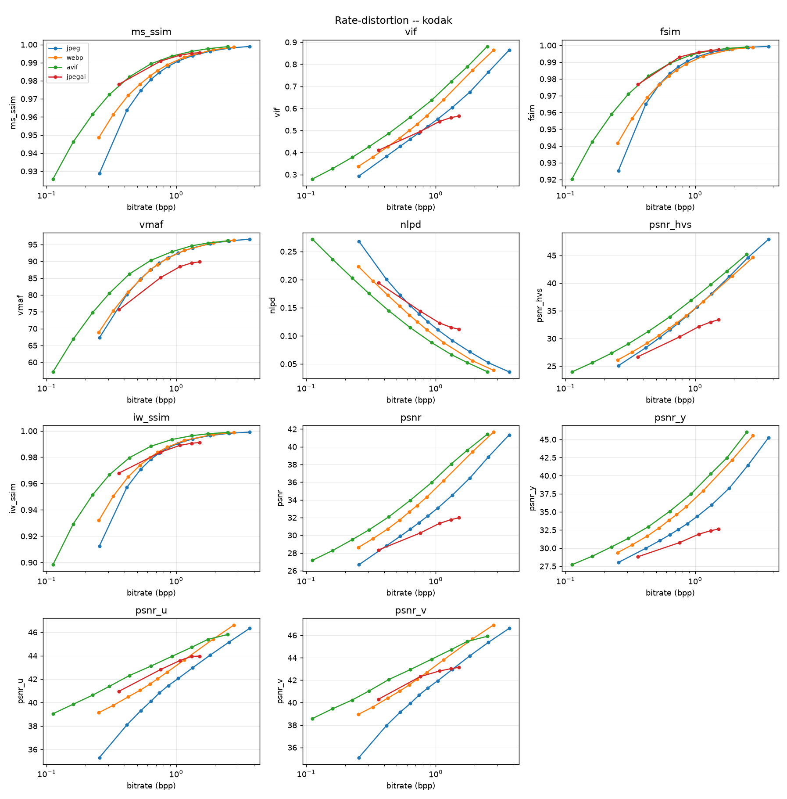
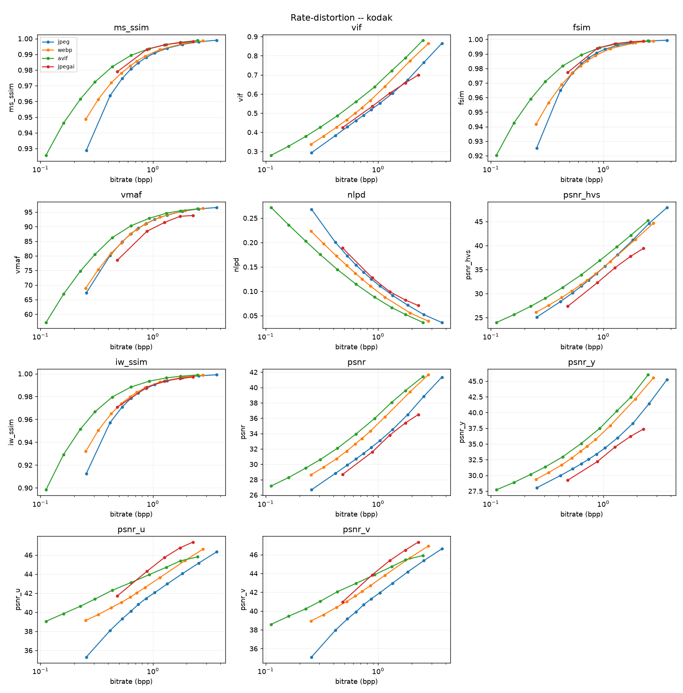

This report is written for a reader who has never heard the words "JPEG AI". It begins from what an image codec is and why anyone would want to build one out of a neural network, and ends with the exact bit-rates our implementation produced on the Kodak test set. Nothing is assumed except school-level algebra and a general sense of what a photograph is.
Every number in this report was measured on this machine, from real bitstreams, unless it is explicitly attributed to the paper. Where we got something wrong — and we got several things badly wrong — the wrong number, the symptom, the diagnosis and the corrected number are all printed. Part VI exists for exactly that purpose.
What JPEG AI is. JPEG AI is the first international image-compression standard whose compression engine is a trained neural network rather than a hand-designed mathematical transform. It was finalised in 2025 by ISO/IEC JTC 1/SC 29/WG 1 — the same committee that produced the original JPEG in 1992 — and published as ITU-T T.840 | ISO/IEC 6048. Where JPEG uses the discrete cosine transform, a fixed formula written down by humans, JPEG AI uses an analysis transform: a convolutional network whose 4.9 million weights were learned by gradient descent from photographs. The paper that defines this report's scope is the committee's own overview of that standard.
The problem it solves. Images are roughly 70% of the bytes on the public internet. A 20% reduction in image bitrate at equal visual quality is therefore worth an enormous amount of bandwidth, storage and battery. Classical codecs — JPEG, WebP, AVIF, VVC — have been improving at a decelerating rate for thirty years, because a hand-designed transform can only exploit the statistical structure a human noticed and wrote down. A learned transform can exploit whatever structure exists in the training data. JPEG AI reports 16.2% to 27.0% fewer bits than VVC Intra — the strongest classical codec available — at equal quality on its own test set, while decoding a 4K image in about 190 ms.
What we built. A working neural image codec, from scratch, in PyTorch, to the architecture the paper describes: a two-branch YCbCr autoencoder (a 160-channel luma latent and a 96-channel chroma latent, both at one-sixteenth resolution), a hyperprior that transmits a compressed description of the latent's own statistics, residual coding against a learned prediction, a 4-stage Multi-Context Model, and a real range/rANS entropy coder that writes real bytes. Six of the fourteen planned phases are complete. The code is 14,154 lines of Python across 33 modules and 13 test files, verified by 332 automated tests and a 210-check self-test that exercises the entire encode–decode path on the user's own hardware in 30 seconds.
What we measured. Three full rate ladders are trained — five operating points each, 50,000 optimisation steps per point, about 12 to 35 hours of wall-clock per ladder on an Apple M2 Pro. On the 24 Kodak images, against JPEG, on the paper's own seven-metric average, they score −0.4% (reduced-width development tier), +1.8% (the paper's own channel widths) and −9.2% (adding the Multi-Context Model). Read plainly: the first two are level with JPEG and the third is ahead of it, at roughly WebP's level. All three are decisively ahead on the structural and perceptual metrics — MS-SSIM −26% to −35%, FSIM −17% to −30% — and behind on the two that track pixel error, though that is closing fast: VMAF +30% → +12%, PSNR-HVS +38% → +18% across the three ladders.
Splitting by colour plane locates the deficit precisely and identically in all three: our chroma is at or past AVIF's level (−59% and −52% BD-rate on the two chroma planes, where AVIF is −59% and −57%), while our luma is still worse than JPEG, at +10%. That is a 69-percentage-point spread between two branches of the same model, trained by the same recipe, and it is the single most useful finding in the project so far. The luma figure has moved +49% → +28% → +10% as we widened the branch and then gave it a context model, so it is responding to treatment — but it has not yet crossed zero.
What went wrong, and what that bought. Seven substantive bugs were found and fixed, five of them the kind that produce plausible numbers rather than crashes. The most expensive was in our own BD-rate measurement code, not in the codec: a global cubic fit — the textbook Bjøntegaard method — is invalid for metrics that saturate near their maximum, and it moved both headline figures by about 17 percentage points in the wrong direction. Both were first reported as +15.6% and +20.6%. A second bug in the entropy-model calibration was costing 1.8% of every payload. A third silently degraded a warm start by permuting channels. In each case this report prints the wrong number, the symptom that exposed it, and the measurement that confirmed the fix.
The most important measurement we made was not a result but a bound. When the reduced-tier codec stopped improving at 32.3 dB, we did not guess why. We reconstructed the same images with the quantiser switched off — infinite bitrate — and the transforms still topped out at 32.30 dB. Then we computed the optimal linear transform of the same width (block PCA on Kodak's own pixels) and got 30.91 dB. Two numbers, and they settle it: the entropy coder costs nothing, more training cannot help, and the ceiling is the latent width. The learned transform is 1.4 dB better than the best possible linear transform of the same size, which is the transform doing its job. Widening to the paper's own 160 channels was then measured, not argued: +2.12 dB at a matched 1.34 bits per pixel.
Honest position. Three ladders are trained. The first two are level with JPEG; the third, which attaches the multi-stage context model to the luma branch, is 9.2% ahead of JPEG — roughly WebP's level, and the first thing we trained that beats a shipped codec.
Against the standard we are much further behind than an earlier draft of this report claimed. The paper's Kodak figure for the simplest decoder is −7.5%, but that is against VVC Intra, whereas all of our numbers are against JPEG; earlier drafts differenced the two and reported a gap of "about 8 percentage points." Converting properly (§19.1.2) puts the paper's decoder at roughly −41% vs JPEG, so the real gap is about 32 points, and at matched quality we spend about 1.5× the paper's bits. About 3.5 points of that is the eight coding tools we have not built (phases 7–14); the remaining ~28 are the luma branch and a training budget of 50,000 steps on a laptop, and we cannot yet separate those two.
The report is in seven parts and six appendices. They are meant to be read in order, but they are also meant to be skippable.
| If you want… | Read |
|---|---|
| the short version | the Executive Summary, then chapter 4 |
| to understand what JPEG AI is, from zero | Part I (chapters 1–4) |
| the mathematics and physics | Part II, chapter 5 |
| the standard's architecture in detail | Part II, chapter 6 |
| where every fact and file came from | Part III (chapters 7–12) |
| the plan and what is built | Part IV (chapters 13–15) |
| the results | Part V (chapters 16–20) |
| the failures, bugs and errors | Part VI (chapters 21–25) |
| what is left to do | Part VII (chapters 26–28) |
| definitions, commands, tables | the appendices |
Three conventions used throughout.
BD-rate is the headline unit. It answers: for the same visual quality, what percentage more or fewer bits does codec A need than codec B? Negative is better. −20% means "20% fewer bits for the same quality". It is explained properly in §5.9.
Provenance tags. Every numeric constant in our code carries one of three tags, and this report uses the same three:
| tag | meaning |
|---|---|
| CONFIRMED | read directly out of the WG1 reference software. Normative — part of the standard. Not ours to tune. |
| PAPER | stated in the overview paper's own text or tables. |
| OURS | our own choice, with no normative source. Free to tune, and listed as ours wherever it appears. |
This matters because a report that silently mixes the three is not checkable. Appendix E lists every constant with its source file.
Two tiers. full.yaml is the paper's own configuration: 160 luma latent channels, 96
chroma. tierA.yaml is a deliberately narrowed development configuration — 96 and 48 — that
exists so a laptop can validate the whole pipeline in hours instead of days. Results are
always labelled with the tier they came from, because §20 shows the tier is worth 2.12 dB.
This part assumes nothing. It explains what an image codec is, what makes JPEG AI different, what problem it solves, what we set out to do about it, and where the project stands. A reader who stops after chapter 4 will still be able to describe the project accurately.
A digital photograph is a grid of numbers. A 12-megapixel phone photo is 12 million pixels, each carrying three colour values (red, green, blue), each value one byte. That is 36 megabytes. Nobody stores or sends 36 MB per photo, so every photograph you have ever seen on a screen has been through a codec — a coder–decoder — that shrank it to something between 1 and 5 MB and then expanded it back again.
Codecs shrink images by exploiting two facts about photographs.
Fact one: neighbouring pixels are similar. In almost every natural image, a pixel is a good predictor of the pixel next to it. Sky next to sky. Skin next to skin. This is redundancy, and removing it is lossless — you can put it back exactly. A codec does this with a transform: a change of coordinates that concentrates the image's energy into a few numbers and leaves the rest near zero. Near-zero numbers are cheap to store.
Fact two: the human eye does not see everything. It is far more sensitive to brightness than to colour, and far more sensitive to smooth gradients than to fine texture. So a codec can throw information away in the places the eye will not miss it. This is irrelevancy, and removing it is lossy — you cannot put it back. This is why a JPEG at quality 50 looks fine and is ten times smaller than the original.
Classical JPEG, standardised in 1992, does exactly this: it converts RGB to a brightness-plus-colour representation, splits the image into 8×8 blocks, applies the discrete cosine transform (DCT) to each block, divides the resulting coefficients by a table of numbers chosen by hand in the 1980s to match human vision, rounds them to integers, and then packs the integers with an entropy coder. Every one of those steps is a formula a human wrote down.
JPEG AI replaces the hand-designed transform with a learned one.
Concretely: instead of the DCT, an analysis transform — a convolutional neural network with about 4.9 million weights — maps the image to a compact numerical representation called the latent. Instead of the inverse DCT, a synthesis transform — another network — maps the latent back to an image. Neither network was designed. Both were trained, by showing the system hundreds of thousands of photographs and adjusting the weights by gradient descent until the combination of "how many bits this costs" and "how wrong the reconstruction is" was as small as possible.
Three consequences follow, and they are the whole point of the standard.
Consequence 1: the transform can exploit structure nobody wrote down. The DCT knows about sinusoids. A learned transform knows about whatever recurs in photographs — edges, textures, skin, foliage, sky gradients, the particular way light falls off — because those are what minimised the loss.
Consequence 2: the probability model can be learned too, and conditioned on the image. JPEG's entropy coder uses fixed Huffman tables. JPEG AI transmits, alongside the image, a small compressed description of the image's own statistics, and uses that to code the main payload. This is the hyperprior, and it is the single largest source of gain in learned compression. It is explained in §5.6.
Consequence 3: the decoder is where the standard lives. A neural network is only interoperable if everyone runs the same weights. So JPEG AI standardises the decoder — its architecture, its weights, and the bit-exact integer arithmetic in the entropy path — and leaves the encoder free. Anyone may invent a better encoder tomorrow; every existing decoder will still read its output. This is the same contract as every previous JPEG and MPEG standard, and it is why the paper spends most of its length on the decoder.
JPEG AI is an international standard (ITU-T T.840 | ISO/IEC 6048, five parts, finalised 2025) for compressing photographs with a neural network. Its encoder maps an image to two latent tensors — one for brightness at 160 channels, one for colour at 96 — each at one-sixteenth of the image's spatial resolution. It transmits those latents as integers, coded against a probability model that is itself transmitted in compressed form. Its decoder comes in three complexity grades (14, 28 and 215 thousand multiply-accumulates per pixel) so that the same file decodes on a low-end phone and on a desktop GPU, at different quality. Against VVC Intra — the strongest classical still-image codec — it reports 16.2% to 27.0% fewer bits at equal quality, and it decodes 4K in about 190 ms.
Nomenclature, not substance. WG1 named the activity "JPEG AI" in 2019 when the exploration began; the original scope included machine consumption of the compressed representation — running object detection directly on the latent, without ever reconstructing an image. That half of the scope was deferred to version 2. Version 1, which this report is about, is a human viewing codec that happens to be built out of neural networks.
Three numbers frame it.
Images are most of the web's bytes. Estimates vary between 45% and 75% depending on methodology and year, but every estimate agrees images dominate. Anything that reduces image bitrate applies to a very large denominator.
Classical codec progress is decelerating. The generational gains are roughly: JPEG (1992) → JPEG 2000 (2000), about 10%; → HEVC/HEIF intra (2013), about 30% over JPEG 2000; → VVC intra (2020), about 25% over HEVC. Each generation took longer, cost more decoder complexity, and delivered less. The reason is structural: a hand-designed transform can only capture regularities a human has noticed and formalised, and after thirty years the easy ones are taken.
Learned codecs passed the classical ones in the research literature around 2020. Ballé et al. (2018) and Minnen et al. (2018) showed an autoencoder with a hyperprior beating HEVC intra; by 2020 the best research models beat VVC intra on perceptual metrics. But research models are not codecs. They have no bitstream format, no interoperability, no complexity bounds, no integer arithmetic, no conformance testing, and they are typically trained one model per bitrate. Nothing you could put in a phone.
So the problem statement of JPEG AI is not "can a neural network compress images". That was answered in 2018. It is:
Can the research result be turned into a standard — a single normative decoder specification with a defined codestream, bounded complexity on real hardware, integer bit-exactness where interoperability demands it, one model family covering the whole quality range, and the functionality features (region of interest, progressive decoding, tiling, arbitrary image sizes, HDR metadata) that a deployable image format requires?
Every design decision in the paper is an answer to some part of that question, and a great many of them are compromises that a research paper would never make. Recognising which parts of the architecture exist for compression and which exist for standardisation is most of what it takes to read the paper properly. Chapter 6 flags them as they arise.
Six problems have to be solved simultaneously, and they conflict.
(a) Quantisation is not differentiable. Compression requires rounding to integers.
Training requires gradients. The derivative of round(x) is zero almost everywhere, so naïve
training produces no learning signal at all. §5.5.
(b) The rate is not differentiable either. The thing to be minimised is the length of the compressed file, which is an integer number of bytes produced by a discrete algorithm. §5.3 shows the substitution that makes it a smooth function of the weights.
(c) A better probability model needs context, and context is sequential. The strongest research entropy models predict each latent value from the values already decoded — which forces the decoder to process one value at a time. For a 4K image that is millions of sequential steps and it is unshippable. §5.6 and §6.5 describe the fix JPEG AI adopts: a 4-stage checkerboard that gets most of the benefit in exactly four parallel passes, regardless of image size.
(d) Float arithmetic is not reproducible across devices. Two GPUs can compute the same convolution and differ in the last bit. In the entropy decoder, a one-bit difference does not cause a slightly worse image — it desynchronises the arithmetic decoder and destroys everything after that point. JPEG AI's answer is to mandate bit-exactness only through the entropy path, using an integer network with 8-bit multipliers and 32-bit accumulators, and to tolerate small float differences after it. §6.6.
(e) One model per bitrate does not scale. A research paper trains six models for six quality levels. A standard cannot ship 40. JPEG AI ships four trained parameter sets and reaches an 18-point quality ladder by scaling the latent with learned per-channel gains plus a signalled displacement. §6.9.
(f) One decoder cannot suit both a phone and a workstation. JPEG AI defines three synthesis transforms of 14, 28 and 215 kMAC/pixel that all read the same codestream. A phone runs the cheap one and gets a slightly worse image; a desktop runs the expensive one and gets a better one, from the identical file. §6.10.
Our problem is narrower and it is the one this report answers:
The overview paper describes the architecture completely and specifies almost nothing numerically. The documents that carry the numbers — ITU-T T.840-1 | ISO/IEC 6048-1 and the paper's own supplementary material — are behind paywalls we do not have access to. Given only the paper, publicly reachable software, and one laptop: can the architecture be reconstructed, implemented, trained and honestly measured?
The interesting part of that question is the word honestly. It is very easy to produce a neural codec that reports excellent numbers and is broken. Five of the seven bugs in Part VI were of exactly this kind — they produced plausible results. So a large fraction of this project's effort went into building measurement machinery that can catch our own mistakes, before building the thing being measured. Chapter 15 is about that machinery, and Part VI is the evidence that it works.
Six objectives, in the order they were fixed. Each has a verifiable test attached, because an objective without a test is a hope.
Objective 1 — Understand the paper completely. Not a summary: every equation, every tensor
shape, every design rationale, every marker code, and every place the paper is ambiguous or
self-contradictory. Test: a written study that reproduces the architecture in enough detail
to implement it without further reference, and that lists the paper's own internal
discrepancies. Status: done. docs/02-jpeg-ai-explained.md, 892 lines, section by
section, including three arithmetic errors found in the paper itself (§8.3).
Objective 2 — Reconstruct every missing constant, with provenance. Test: every number in the configuration files traceable to a named source file and line, tagged CONFIRMED / PAPER / OURS. Status: done for 9 of 10 open questions. Chapter 9 and Appendix E. Two of our own early readings were wrong and are corrected there.
Objective 3 — Build a real codec, not a research prototype. Specifically: real bytes from a real entropy coder; every reported bitrate measured from the file, never estimated from the loss; every reported image decoded from those same bytes. Test: a round-trip gate that runs during training and asserts the decoded latent is bit-identical to the encoded one, and that actual bytes agree with the model's own prediction to within ±0.5%. Status: done and passing at every rate point. §15.2. This gate is what caught two of the seven bugs.
Objective 4 — Measure against the paper's own criteria. All seven of the paper's metrics (MS-SSIM, VIF, FSIM, VMAF, NLPD, PSNR-HVS, IW-SSIM), on the paper's own datasets, with BD-rate computed the way the paper computes it. Test: the seven-metric average reproduced arithmetically against all 19 published data rows of the paper's Tables III–VI. Status: done. §8.2 — and this is how we established that the paper's AVG column is the plain unweighted mean, which the paper never states.
Objective 5 — Train it, and report what happens. Including the runs that fail. Test: complete rate ladders with per-point logs retained, and a results section that prints the numbers that were wrong alongside the numbers that are right. Status: three ladders complete, plus one two-point control. Part V and Part VI.
Objective 6 — Be honest about the gap. Test: compare against the paper's comparable figure, not its most flattering one, and on the same anchor. Status: done twice, because the first attempt was wrong. §8.4 established the comparable figure: the paper's headline −16.2% is on its own 50-image test set, and the Kodak equivalent is its Table V at −7.5%. What the first attempt got wrong is that both of those are BD-rates against VVC Intra, while every number we measure is against JPEG — so differencing them, which this report did in several places, is not arithmetic that means anything. §19.1.2 converts properly: the paper's simplest decoder is around −41% vs JPEG, our best ladder is −9.2%, and the gap is ~32 points, not the ~8 the subtraction produced.
Stating this matters, because an implementation that quietly omits things and then reports a comparison is not measuring what it claims.
| Not attempted | Why |
|---|---|
| Bit-exact conformance with the real standard | needs the normative learned weight tables (T1/T2/TP/TR) and the ONNX parameter sets, both distributed via Part 1, which is paywalled |
The me-tANS entropy coder as specified |
its transition tables are derived from the normative CDF tables we do not have. We use a mathematically equivalent rANS coder and have the me-tANS constants (Appendix E, §6.6) for phase 9 |
| The four post-processing filters (EFE ×2, ICCI, LEF) | phase 10; they are worth 0.2–0.3% each per the paper's own ablation, so their absence costs about 1% |
| Training at the paper's scale | the paper's models are trained on far more data for far longer than 50,000 steps on a laptop. This is the largest single confound in our comparison and §26 quantifies it |
One page, no narrative.
| Phase | Content | State |
|---|---|---|
| 1 | Anchor codecs (JPEG, WebP, AVIF), dataset pipeline | complete |
| 2 | All seven metrics + PSNR/Y/U/V, BD-rate harness | complete |
| 3 | Mean-scale hyperprior, rANS coder, training loop, round-trip gate | complete, trained |
| 4 | Two-branch YCbCr architecture (separate luma/chroma latents) | complete, smoke-trained |
| 5 | Residual coding with split hyper decoders (eqs 1–3) | complete, trained |
| 6 | 4-stage Multi-Context Model (§VI-D) | complete, trained |
| 7–14 | three synthesis transforms, variable rate, me-tANS + codestream, RVS/LSBS/post-filters, integer path, functionality, report, CLI | not started |
| automated tests | 332 pytest tests, 13 files, 4,488 lines of test code |
| self-test checks | 210 without a checkpoint, 215 with one — full encode/decode path, ~30 s |
| metrics live | 7 / 7 of the paper's set, plus PSNR and per-plane PSNR-Y/U/V |
| coder fidelity | actual bytes within ±0.5% of the model's own prediction at every rate point |
| latent fidelity | ŷ bit-exact through decode(encode(x)) at every rate point |
| coder escapes | zero out-of-range symbols on every checkpoint of every ladder (§22.4) |
| code size | 14,154 lines of Python (9,666 implementation + 4,488 tests) |
| documentation | 9 markdown documents, 5,051 lines, ~43,000 words |
BD-rate against JPEG on the 24 Kodak images, seven-metric average. Negative is better.
| codec | AVG | overlap | comment |
|---|---|---|---|
| WebP | −10.6% | 9/11 | our sanity anchor: a real, shipped codec |
| AVIF | −36.1% | 10/11 | AV1 intra — our stand-in for VVC-class performance |
| ours, ladder #0 (tier A, 96 ch) | −0.4% | 4/11 | level with JPEG |
| ours, ladder #1 (tier full, 160 ch) | +1.8% | 6/11 | level with JPEG, over a wider range |
| ours, ladder #2 (+ 4-stage MCM) | −9.2% | 6/11 | ahead of JPEG, roughly WebP's level |
overlap counts how many of JPEG's eleven quality points lie inside our shared quality range.
It is printed because a BD-rate over 4 of 11 points and one over 10 of 11 are not comparable
to each other — see §5.9.4. This is why the three ladders' AVGs must not be differenced against
each other; §19.2 and §18.5 do the architecture comparisons at matched rate instead.
The paper's number is not in that table, on purpose. Its Table V figure for the simplest decoder is −7.5% against VVC Intra, not against JPEG, so it does not belong in a column of vs-JPEG BD-rates and must not be differenced against them. Converted onto this axis it is roughly −41% vs JPEG (§19.1.2), which puts the honest gap at about 32 points — our best ladder needs ~1.5× the paper's bits at matched quality.
1. The bottleneck was located, not guessed. Tier A stopped improving at 32.3 dB. With the quantiser disabled — infinite bitrate — the transforms still reached only 32.30 dB, and the optimal linear transform of the same width reaches 30.91 dB. So: the coder costs nothing, more training cannot help, and the latent width is the wall. §20.
2. The tier change is worth +2.12 dB, measured at a matched rate. 1.3525 bpp → 32.71 dB (tier A) against 1.3445 bpp → 34.83 dB (tier full). Not extrapolated — two real bitstreams at the same size. §19.2.
3. The remaining deficit is entirely in luma. On our best ladder, chroma BD-rate is −59.4% and −51.6% — at or past AVIF's level — while luma is +10.1%, still worse than JPEG. A 69-point spread between two branches of one model. Nothing in the training recipe or the entropy coder is plane-specific, so this is a statement about the branches themselves. It is responding to treatment: luma has moved +48.6% → +28.2% → +10.1% as we widened the branch and then gave it a Multi-Context Model, which attaches to the luma branch only. It has not yet crossed zero. §19.3.
This part is the mathematics and the physics. Chapter 5 builds the theory from information theory up to the specific machinery JPEG AI uses, with every formula we actually implement. Chapter 6 is the standard's architecture in full detail. A reader who wants to know what the project does rather than why it works can skip to Part IV.
Everything in compression rests on one 1948 result. If a symbol s occurs with probability
p(s), then the cheapest possible encoding spends
ℓ(s) = −log₂ p(s) bits
on it. A symbol you expected (p = 0.5) costs 1 bit. A symbol you were almost certain of
(p = 0.99) costs 0.0145 bits. A surprise (p = 0.001) costs 10 bits. Averaging over the
source gives its entropy
H(S) = − Σ p(s) · log₂ p(s) bits per symbol
s
and Shannon's source coding theorem says no lossless code can average fewer bits than H(S),
while codes exist that get arbitrarily close.
Two consequences drive the entire design of a learned codec.
Consequence A: compression is prediction. The −log₂ p above uses the true probability.
If you code with a model q instead, you spend
E_p[ −log₂ q(s) ] = H(p) + KL(p ‖ q) bits per symbol
— the entropy you could never avoid, plus the Kullback–Leibler divergence between the truth and your model. That KL term is pure waste, and it is the only part you can control. So "build a better codec" and "build a better probability model" are the same sentence. This is why a learned codec's entropy model is not a detail; it is where the gains live.
Consequence B: this is why the hyperprior exists. If your model q is fixed for all
images, it must be an average over all images, and KL(p_this_image ‖ q_average) is large.
If instead you can spend a few bits telling the decoder about this particular image's
statistics, you shrink KL by more than the bits you spent. That trade is the hyperprior
(§5.6.3), and it is the single largest architectural gain in the field.
We use this directly. Our rate is computed as −log₂ of the model's own predicted probability,
summed over every latent value and divided by the number of pixels, and it is checked against
the byte count the coder actually produced. That check — the same quantity computed two ways
and required to agree — is our strongest correctness test (§15.2).
Lossy compression has two costs that trade against each other: rate R (bits) and
distortion D (how wrong the reconstruction is). You cannot minimise both. What you can
do is minimise a weighted sum, which is the standard Lagrangian relaxation of "minimise D
subject to R ≤ R_target":
L = R + λ · D
Sweep λ and you trace the rate–distortion curve: the set of achievable
(rate, distortion) pairs. Every codec comparison in this report is a comparison between two
such curves.
Our sign convention, and why it needed a derivation. We write
L = β · D₂₅₅ + R
so β multiplies the distortion, and larger β means higher quality and higher rate. D₂₅₅
is a mean-squared error on the 0–255 scale. The paper does not state which term its β
multiplies, and getting it backwards silently inverts the entire rate ladder — you would train
five models, all of them fine, and the curve would run the wrong way. So the direction was
derived from three independent constants found in the WG1 reference software:
β from 0.0002 to 3.0;β = 0.002, 0.012, 0.075, 0.5;betaDisplacementLog is signalled in [−40, +40] with a precision of 5 bits.Take (3) first: a log-domain displacement with precision 5 means the effective β is
base · 2^(disp/2⁵), so [−40, +40] spans 2^±1.25 — a factor of 0.42 to 2.38, i.e. 5.66×
end to end. Now look at the gaps between adjacent base models in (2): 0.012/0.002 = 6.0,
0.075/0.012 = 6.25, 0.5/0.075 = 6.67. The displacement range covers exactly the gap between
neighbouring base models — which is what the mechanism is for, and is strong evidence the
numbers are being read correctly rather than coincidentally.
Now the direction. β = 0.002 against a 0–255 MSE equals 0.002 × 255² = 130 against a [0,1]
MSE. The published MSE Lagrange multipliers for this exact architecture family, on the same
scale, run 117 / 228 / 436 / 845 / 1625 / 3140 from lowest to highest quality. JPEG AI's lowest
base β lands within 11% of the lowest of those, and its highest (0.5 → 32,500) sits above the
highest. That only works if β multiplies the distortion. Reasoned inference from three
constants, not a normative citation — and it is recorded as such in jpegai/train/losses.py,
whose module docstring is this paragraph.
What D is, for us. A weighted MSE in YCbCr with luma weighted 6:1:1 against the two
chroma planes, plus a small MS-SSIM term:
D = Σ w_c · MSE(x̂_c, x_c) · 255² + γ · (1 − MS-SSIM(x̂, x))
c∈{Y,U,V}
w = {Y: 6, U: 1, V: 1} / normalised so Σw = 3 [OURS]
The 6:1:1 is ours: the paper says only "prioritise the quality of the luma component during training". The MS-SSIM term is also ours, and it is there for a specific reason — six of the paper's seven metrics are structural or perceptual and none of them is PSNR. Optimising pure MSE produces a model that wins a metric nobody is grading and loses the average that decides the BD-rate.
How we verified the 6:1:1 weighting is applied correctly. Add a uniform offset to all three
RGB channels. In YCbCr that is a pure luma error — the chroma planes are unchanged by
construction. So the weighted loss should score it exactly 6 × 3/8 = 2.25× an unweighted
loss. It does, to numerical precision. That test is in tests/test_losses_twobranch.py and it
exists because a weighting bug is otherwise invisible.
R is the length of a file: an integer, produced by a discrete algorithm, with no derivative.
Training needs a gradient. The substitution that makes this work is the one from §5.1:
R ≈ E [ −log₂ p_model(ŷ) ]
The expected code length under the model is a smooth, differentiable function of the model's parameters and of the latent values, and by Shannon it is within a fraction of a bit of what a good arithmetic coder will actually produce. So we minimise the model's own prediction of the file size, and then — crucially — we check against the real file size afterwards. §15.2. Those two numbers agreeing to within 0.5% is the whole basis for trusting any rate we report.
The classical pipeline and the learned pipeline are the same four boxes:
classical: x → [ DCT ] → coeffs → [ quantise ] → [ Huffman ] → bits
↓
learned: x → [ g_a: CNN ] → y → [ quantise ] → [ entropy ] → bits
[ model p ]
with an inverse chain on the other side. Formally:
y = g_a(x; φ) analysis transform, learned
ŷ = Q(y) quantisation (rounding)
x̂ = g_s(ŷ; θ) synthesis transform, learned
R = −log₂ p(ŷ; ψ) entropy model, learned
and all three parameter sets φ, θ, ψ are trained jointly by minimising β·D + R. This is
formally a variational autoencoder with a uniform posterior, which is where the term
"hyperprior" comes from — but for understanding the codec, "learned transform + learned
probability model" is the more useful reading.
Why one-sixteenth resolution. The analysis transform has four stride-2 stages, so the
latent is at H/16 × W/16. With 160 luma channels that is
160 / (16 × 16) = 0.625 latent values per pixel
Compare: JPEG keeps one DCT coefficient per pixel and throws most of them away by quantisation. A learned codec throws its information away spatially, in the transform, and keeps a dense small tensor. The reason /16 rather than /8 or /32 is a compute/quality trade: each halving of resolution quarters the number of latent positions, which quarters the entropy coder's work and the context model's sequential depth, but costs reconstruction detail. /16 with a wide channel dimension is where the field settled empirically.
ŷ = round(y) has derivative zero almost everywhere and undefined at half-integers. Gradient
descent through it learns nothing. Three fixes are used, and JPEG AI-class codecs use all
three, in different places:
Fix 1 — additive uniform noise (Ballé 2017). During training, replace rounding with
ŷ = y + u, u ~ U(−½, ½). Rounding to the nearest integer perturbs a value by something in
[−½, ½], so uniform noise has the same support and a similar effect, and it is differentiable
in y. It also has an exact interpretation: it makes the model a VAE whose posterior is a unit
uniform box, so the "rate" term is a genuine variational bound. We use this for the rate
branch — the branch that computes R — because the noise model is what makes the rate a
proper bound.
Fix 2 — the straight-through estimator. Round in the forward pass, pretend the derivative is 1 in the backward pass:
y_hat = y + (torch.round(y) - y).detach()
The .detach() makes the correction term a constant, so the forward value is exactly
round(y) and the gradient flows as if it were the identity. We use this for the distortion
branch, because the decoder must be trained on exactly the values it will receive. Training
the synthesis transform on noisy latents and then feeding it rounded ones at inference is a
train/test mismatch worth several tenths of a dB.
Fix 3 — a discretised likelihood. The rate must be the probability of an integer, not a density at a point. So every probability is computed as a difference of cumulative distributions over the unit interval around the value:
p(ŷ) = C(ŷ + ½) − C(ŷ − ½)
This is the same function the entropy coder's CDF tables encode, which is not a coincidence — it is what makes the loss's rate estimate and the coder's byte count comparable at all.
Using different quantisation surrogates in the two branches sounds like a hack and is in fact the standard practice, for the reason given: the rate branch wants the variational bound, the distortion branch wants the real values.
This is the axis along which learned compression has actually improved, and every rung is worth understanding because JPEG AI's design is a specific point on it. All five rungs exist in our codebase; we built them in order, because each one is the previous one plus a term.
Assume every latent value is independent, with a per-channel distribution learned once and shared by all images:
p(ŷ) = Π p_c ( ŷ[c,i,j] )
c,i,j
p_c is a small monotone network trained to be a CDF. This is the JPEG-with-Huffman-tables
level of sophistication: no adaptation to the image at all. It is not competitive on its own,
but it is not useless either — it is exactly what JPEG AI uses for the hyper-latent ẑ,
because ẑ is small and there is nothing left to condition it on.
Latent values are not independent, in two ways. Spatially: a latent position over sky has small values, one over a face has large values, and neighbouring positions agree. Cross-channel: channels respond to correlated features. A fixed factorised model has to average over all of this, so its KL term (§5.1) is large.
The key move in the field. Transmit a compressed description of the latent's own local scale. A second, much smaller autoencoder runs on top of the latent:
z = h_a(y) hyper-encoder: 2 more stride-2 stages → /64
ẑ = round(z) coded with the factorised prior of §5.6.1
σ = h_s(ẑ) hyper-decoder → a per-value standard deviation
p(ŷ | ẑ) = N(0, σ²) ⋆ U(−½,½) a Gaussian, convolved with the unit box
The decoder decodes ẑ first — it is small, typically a few percent of the payload — then runs
h_s to obtain a per-position, per-channel σ, and uses those σ to decode the main
payload. The bits spent on ẑ buy a probability model tuned to this image. The trade is
strongly favourable: this single change was worth roughly 20% BD-rate when introduced.
Physically: the hyper-latent is a side channel carrying the local variance field. Sky gets
small σ and therefore cheap symbols; texture gets large σ and expensive ones. The codec has
learned where in the image the information is.
Let the hyper-decoder predict a mean as well as a scale:
(μ, σ) = h_s(ẑ)
p(ŷ | ẑ) = N(μ, σ²) ⋆ U(−½,½)
Equivalently and more usefully: code the residual y − μ instead of y. If the prediction is
any good, the residual is smaller and centred on zero, so it costs fewer bits. Worth roughly
another 10%.
This is exactly JPEG AI's equations (1) and (2), with the paper's notation p̈ for the
prediction:
(1) r̂ = round( y − p̈ )
(2) ŷ = r̂ + p̈
The paper calls it residual coding rather than mean-scale, and — a detail with real
consequences — it uses two separate networks for the two outputs: a hyper decoder that
produces p̈, and a hyper scale decoder that produces the scale. §5.6.6 and §6.4 explain why
that split is not cosmetic.
Condition each latent value on the values already decoded:
p(ŷ[i]) = f( ẑ, ŷ[1..i−1] ) e.g. a masked 5×5 convolution
This is the best-performing entropy model in the literature — another ~8–10% — and it is
fatal for deployment. Decoding position i requires position i−1 to be finished, so the
decoder is a strictly sequential loop over every latent position. For a 4K image at /16 with
160 channels that is about two million serialised network evaluations. The paper says the
quiet part out loud: the GPU is not compute-bound, sequential entropy decoding dominates.
Note in the paper's own Table III that a 15× increase in decoder MACs (14 → 215 kMAC/pixel)
costs only 285 → 323 ms per megapixel. The convolutions are nearly free; the serialisation is
not.
The compromise, and JPEG AI's choice. Split the latent's spatial positions into a small number of groups. Code group 1 with no context. Code group 2 using group 1. Code group 3 using groups 1–2. And so on. Within a group everything is independent, so a group decodes fully in parallel.
JPEG AI uses four groups, formed by a 2×2 spatial pattern — the four cosets of a 2×2 tile — so the decoder always makes exactly four passes, whatever the image size. That is the property that makes it shippable: constant latency in the number of sequential steps, and it is what the paper calls the Multi-Context Model (MCM).
Two facts about JPEG AI's MCM that we had to establish from the reference software rather than the paper:
The stage order is (0,0) → (1,1) → (0,1) → (1,0) — diagonal first, then the two
off-diagonals. This is confirmed twice over, from unrelated code (§9.3).
MCM partitions space, never channels. In the paper's Figure 2 the colour is constant along the channel axis and varies only over the 2×2 spatial tile. All 160 channels of a given spatial position belong to the same stage.
And one more, which is the reason it helps us specifically: MCM is applied to the luma branch only. Chroma uses the plain eq. (1)/(2) residual coding. Since §19.3 shows our deficit is entirely in luma, this is the right tool aimed at the right place.
The entropy model gives probabilities. Something has to turn probabilities into bytes at the Shannon limit. Three families:
Arithmetic coding. Represent the whole message as a single real number in [0,1), narrowing
the interval by p(s) at each symbol. Optimal to within one bit for the entire message.
Requires arbitrary-precision arithmetic in principle, and multiply/divide per symbol in
practice.
Range coding. Arithmetic coding on integers with renormalisation. This is what JPEG 2000, HEVC, VVC and every practical arithmetic coder actually is. Still needs a multiply and usually a divide per symbol.
ANS — asymmetric numeral systems (Duda, 2009). A different construction with the same
optimality. State x; encoding a symbol maps x → x' in a way that packs −log₂ p(s) bits of
information into the state, spilling bytes when it overflows. Two variants matter:
JPEG AI uses "me-tANS": multi-symbol, escape-coded tANS. Its properties, all confirmed from the reference software (§9.4):
| property | value | why |
|---|---|---|
| probability mass bits | 8 → 256 states per σ-class | small tables |
| residual CDF table | [32, 256] — 32 σ-classes × 256 symbols |
table selected by Iσ |
| hyper CDF table | one row per channel | table selected by channel index |
| total decoder tables | ≈ 100 KB | fits a phone's cache |
| decode direction | FILO — last symbol first | a property of ANS, not a design choice |
| escape coding | 1 flag bit → 2 or 15 bits → sign | keeps the table to 256 symbols while still coding rare huge values |
| skip mode | up to 80% of residuals not coded at all | when Iσ is below a threshold, the residual is inferred zero |
| substreams | 2, interleaved, even single-threaded | "mimicking a dual-threaded setup" — a hardware-friendliness decision |
The table split is the clever part. The CDF is split into halves with the second offset by 128:
cdf_first, cdf_second = cdfs - (cdfs >> 1), (cdfs >> 1) + 128
which lets the decoder be an OR plus an addition instead of a comparison chain. That is the mechanism behind the paper's claim that decode needs no multiply and no divide.
We verified the "~100 KB of tables" claim arithmetically: 32 σ-classes × 256 states × 4 bytes = 32 KiB for the decode transition table alone, with the encode transitions and the CDF/PMF matrices making up the rest. ~100 KB is the right order of magnitude. The claim holds.
The eye is far more sensitive to brightness than to colour. Every codec since JPEG exploits this by converting RGB to a luma-plus-chroma space and spending fewer bits on chroma. JPEG AI uses YCbCr BT.709:
Y = 0.2126·R + 0.7152·G + 0.0722·B
Cb = (B − Y) / 1.8556 + 0.5
Cr = (R − Y) / 1.5748 + 0.5
(The coefficients sum to 1 — we assert that in code, because a typo there is otherwise invisible.) The inverse, which is what the decoder runs:
R = Y + 1.5748·(Cr − 0.5)
B = Y + 1.8556·(Cb − 0.5)
G = (Y − 0.2126·R − 0.0722·B) / 0.7152
Two architectural options exist, and the choice is not obvious:
(a) One network, three input channels. Feed YCbCr as a 3-channel tensor to a single analysis transform. Simple; one latent; the network can learn cross-colour structure freely.
(b) Two branches. A primary branch on luma alone, and a secondary branch on the two chroma planes, with separate latents, separate hyperpriors and separate entropy streams.
JPEG AI chooses (b), and pays for it: our own measurement puts the second branch at +19% decoder complexity (111.6 → 132.4 kMAC/pixel, of which chroma is 27.0). What does that buy?
downsample_factor = 2 in the
reference software) and both latents land on the same /16 grid.The cross-links, per eqs (1)–(3) and the paper's Figure 1:
p̈_UV);ŷᶜ_UV = concat(ŷ_UV, ŷ_Y) — the paper's eq. (3) —
which is 96 + 160 = 256 channels. Note it takes the luma latent, not the decoded luma
image.Nothing flows chroma → luma. That asymmetry is the monochrome fast path.
Two codecs cannot be compared at one operating point, because they will not be at the same rate and the same quality. So:
1 q_high
BD-rate = exp( ───────── ∫ [ log R_test(q) − log R_ref(q) ] dq ) − 1
q_hi − q_lo q_low
Negative means the test codec needs fewer bits: better.
The textbook method — Bjøntegaard's — fits a single global cubic to each codec's whole curve and integrates it over the overlap. We implemented that. It is wrong for this metric set, and it moved both our headline numbers by about 17 percentage points.
The failure mode: a global fit is global. Anchor points outside the integration window pull the polynomial inside it. For a well-behaved metric like PSNR this barely matters. For a saturating metric it is catastrophic — and four of the paper's seven saturate hard. MS-SSIM, FSIM and IW-SSIM all crowd into the last 1% of their range: at high rate the curve is nearly vertical in log-rate, at low rate it is gentle. One cubic cannot be both, so it compromises, and the compromise is set by points you are not integrating over.
The fix is monotone PCHIP — piecewise cubic Hermite interpolation. It is (a) local: a point outside the window cannot influence the answer inside it; (b) monotone: it never overshoots, so it cannot invent a quality reversal that the data does not contain; and (c) interpolating: it passes through the measured points exactly. JVET's common test conditions moved to it for the same reason.
The correction, printed in full in §22.1:
| global cubic | PCHIP | |
|---|---|---|
| ladder #0 | +15.6% | −0.4% |
| ladder #1 | +20.6% | +1.8% |
| WebP | −15.3% | −10.6% |
| AVIF | −41.0% | −36.1% |
How to test a BD-rate implementation. Not against a golden value — you will simply encode your own bug into the expected number. Test the invariance: four anchor sweeps that pass through the integration window identically and differ only in how far below it they extend must produce the same answer. PCHIP spreads 0.04 percentage points across those four. The cubic spreads 17.08. That assertion is now a regression test.
A five-point ladder against an eleven-point anchor sweep may only share quality range with four of the anchor's points. The BD-rate is then an average over a slice of the comparison — and typically the low-rate slice, where a learned codec is at its strongest. So:
Two BD-rates with different overlap coverage are not comparable to each other.
We print overlap in every table for this reason. It is why ladder #0's −0.4% (4/11) must not
be read as "better than" ladder #1's +1.8% (6/11), even though it is a smaller number. To
compare our own ladders we use matched-rate points, or re-anchor one ladder against the other.
This is the piece of mathematics that produced the project's most useful measurement, and it is not from the paper.
The analysis transform maps a 16×16 region of a 3-channel image — 768 numbers — to N
latent channels at one position. At tier A, N = 96: an 8:1 dimensionality reduction. That
is a hard constraint independent of training, architecture or bitrate. If 768 dimensions must
pass through 96, information is lost, and the amount is computable.
For the best linear transform the answer is exactly known. Principal component analysis —
equivalently the Karhunen–Loève transform — is the optimal linear map to N dimensions in the
mean-squared sense, and the residual error is the sum of the discarded eigenvalues:
MSE_min(N) = Σ λ_k λ_k the eigenvalues of the patch covariance,
k>N in descending order
So: take Kodak's own 16×16×3 patches, compute their covariance, take the eigenvalues, and you get a hard lower bound on the error of any linear transform at that width — and a very strong indicator for a nonlinear one, since a convolutional transform sees more than one block and should therefore beat it.
Measured on Kodak:
| latent channels | reduction ratio | optimal linear PSNR | |
|---|---|---|---|
| 96 | 8.0 : 1 | 30.91 dB | tier A |
| 160 | 4.8 : 1 | 35.02 dB | the paper's luma width |
| 192 | 4.0 : 1 | 37.11 dB | |
| 320 | 2.4 : 1 | 46.75 dB | a research model's width |
Our tier-A learned transform reaches 32.30 dB, which is 1.4 dB better than the linear bound — the transform is doing its job. But 96 channels cannot exceed roughly 32–33 dB however long it trains, and JPEG reaches 34.52 dB at the top of the comparison range. That is the entire explanation of ladder #0's result, and it was obtained in an afternoon from an eigenvalue decomposition rather than from a week of extra training. §20.
This chapter is our reading of the paper, reorganised for an implementer. Everything here is tagged PAPER unless marked otherwise; the constants the paper omits are in chapter 9 and Appendix E.
| when | what |
|---|---|
| 2019 | WG1 launches the "JPEG AI" exploration activity |
| Nov 2019 | metric analysis — the seven-metric set is fixed (WG1 N85013) |
| Jan 2022 | final Call for Proposals, WG1 N100095 |
| Jul 2022 | seven CfP responses evaluated |
| — | two selected as the basis: Bytedance (ref [32]) and Huawei (ref [33]) |
| Oct 2022 | the two are harmonised into Verification Model 1.0 |
| Jan 2023 | Common Training and Test Conditions fixed (WG1 N100421) |
| 2025 | Parts 1, 3 and 5 finalised; Part 2 in draft; Part 4 targeted for Oct 2025 |
| Feb 2026 | the overview paper — this project's subject — is published |
Two things are worth noting about that history. First, the standard is a harmonisation of two independent proposals, which is visible in the architecture: several tools look like they were each somebody's contribution rather than parts of one plan. Second, the metric set was fixed in 2019, before the architecture existed — so the codec was optimised for a target chosen in advance rather than a target chosen to flatter it. That is good methodology and it is worth saying, because it is the reason the seven-metric average is a meaningful number at all.
The five parts (the paper's Table I):
| Part | Name | ITU-T | ISO/IEC | Status per the paper |
|---|---|---|---|
| 1 | Core coding system | T.840-1 | 6048-1 | finalised 2025 |
| 2 | Profiling | T.840-2 | 6048-2 | draft — 1 stream profile, 3 decoder profiles |
| 3 | Reference software | T.840-3 | 6048-3 | finalised 2025 — gitlab.com/wg1/jpeg-ai/jpeg-ai-vm |
| 4 | Conformance | T.840-4 | 6048-4 | target Oct 2025 |
| 5 | File format | T.840-5 | 6048-5 | finalised 2025 — ISOBMFF ("Motion JPEG AI") + HEIF |
Four sets of trained model parameters are distributed in ONNX format via a link in Part 1. Part 3 — the reference software — is the one we could reach, and it is the reason chapter 9 exists.
Real-device evidence the paper cites: 1024×1024 decoded in under 20 ms on a smartphone (refs [36], [37]); 4K in about 190 ms (ref [38]). These are the numbers that make the "deployable" claim credible, and they are why the complexity discussion in §6.10 is not academic.
Decision 1: only the decoder is normative. The standard fixes the decoder's architecture, weights and — in the entropy path — its exact integer arithmetic. The encoder is entirely free. A better encoder can be deployed tomorrow and every existing decoder will read its files. Note the striking structural consequence we found in the reference software (§9.1): there are three decoders but only two encoders — the simplest operating point has no encoder of its own and reuses the middle one's.
Decision 2: bit-exactness is required only up to the entropy decoder's output. Full
bit-exact reconstruction would force every implementation to reproduce every float operation
identically, which would kill hardware diversity. So the standard draws the line exactly where
it must: r̂ and ẑ — the entropy-decoded integers — must be bit-exact on every device, because
a one-bit error there desynchronises the coder and destroys the rest of the stream. Everything
after that point (the synthesis transforms, the filters, the colour conversion) may differ in
the last few bits, and the image will be imperceptibly different rather than broken. The price
is that JPEG AI has no bit-exact reconstruction and no lossless mode — a stated v1
limitation.
Decision 3: one codestream, three decoders. SOP / BOP / HOP at 14 / 28 / 215 kMAC/pixel all
read the same file. The synthesis_transform_id field turns out to be a cumulative capability
list rather than a selector — SOP signals [0], BOP [1,0], HOP [2,1,0] — so a HOP stream
is decodable by an SOP decoder. That is the mechanism behind the scalability claim, and it is
not obvious from the paper; we found it in the reference software's profile configuration.
x (RGB)
│
├─ colour transform → YCbCr BT.709, internal subsampling 4:4:4 / 4:2:2 / 4:2:0
│
├─────────────── PRIMARY (luma) ───────────────┐ ┌────── SECONDARY (chroma) ──────┐
│ │ │ │
│ x_Y [1, H, W] │ │ x_UV [2, H/c_v, W/c_h] │
│ ↓ g_a (4 × stride-2) │ │ ↓ g_a,sec (one fewer stage │
│ y_Y [160, Ḣ/16, Ẇ/16] │ │ at 4:2:0) │
│ │ │ y_UV [96, Ḣ/16, Ẇ/16] │
│ ↓ h_a (2 × stride-2, on |y|) │ │ ↓ h_a,sec (sees y_Y too) │
│ z_Y [160, Ḣ/64, Ẇ/64] → round → ẑ_Y │ │ z_UV → round → ẑ_UV │
│ │ │ │
│ ↓ h_s (prediction head) │ │ ↓ h_s,sec │
│ p̈_Y [640, Ḣ/32, Ẇ/32] → PixelShuffle ×2 │ │ p̈_UV [384,…] → shuffle │
│ → [160, Ḣ/16, Ẇ/16] │ │ → [96, Ḣ/16, Ẇ/16] │
│ │ │ │
│ ↓ h_s,scale (INTEGER network) │ │ ↓ h_s,scale,sec │
│ Iσ_Y [160, Ḣ/16, Ẇ/16] integer, log domain │ │ Iσ_UV [96,…] │
│ │ │ │
│ MCM: 4 stages refine p̈_Y │ │ eq (1) directly: │
│ r̂_Y = round(y_Y − p̈_Y) per stage │ │ r̂_UV = round(y_UV − p̈_UV) │
└──────────────────────────────────────────────┘ └────────────────────────────────┘
│
me-tANS entropy coding, four streams:
ẑ_Y, ẑ_UV (one shared SOZ substream)
r̂_Y (SORp), r̂_UV (SORs)
│
codestream (§6.7)
Two details in that diagram that are easy to miss and that we confirmed from the paper's Figure 1 rather than inferred:
y, not x. It compresses the latent's statistics, not the
image's.abs_in_hyperprior = 1: the hyper encoder consumes |y|, the absolute value. It is
modelling magnitude, which is what a scale parameter needs.The residual-coding rung of §5.6.4 needs two outputs, μ and σ. A research implementation
produces both from one network with 2N output channels. JPEG AI uses two separate
networks:
| network | output | arithmetic |
|---|---|---|
| hyper decoder | p̈ — the prediction |
float, and not bit-exactness-critical |
| hyper scale decoder | Iσ — an integer log-domain scale index |
integer, normative, bit-exact |
The reason is Decision 2. Iσ selects the CDF table row that the entropy coder uses, so it must
be identical on every device or the stream desynchronises. p̈ is only added back to the decoded
residual, so a last-bit difference there produces an imperceptibly different image. Splitting
the network is what allows the bit-exactness requirement to be confined to the small integer
half. The paper backs this with an overflow proof (its ref [39]) showing 8-bit multipliers and
32-bit accumulators cannot overflow.
We measured the cost of the split, and it is essentially free — a finding worth having because it is counter-intuitive that two networks would be cheaper than one:
| model | parameters | decoder kMAC/pixel |
|---|---|---|
fused (one network, 2N out) |
4,700,451 | 129.2 |
| split (two networks) | 4,575,603 | 128.9 |
The split is smaller. Why: the scale head only has to produce a coarse 32-level quantity, so
it can be far narrower than the prediction head. Our two h_s heads cost 0.49 kMAC/pixel
against a fused 3.33 — 6.8× cheaper — which hand-arithmetic confirms (81 + 81 + 324 = 486
MAC/pixel for the split against 337.5 + 2025 + 972 = 3334 for the fused). And we measured the
scale decoder's accuracy cost at 0.055% of rate.
Iσ is an integer index into a log-spaced grid of 32 scales:
σ(Iσ) = σ_min · exp( log_k · Iσ / 2^p )
σ_min = 0.11 σ_max = 54.82 levels = 32 [CONFIRMED]
p = sigma_precision = 7 [CONFIRMED]
log_k = (ln 54.82 − ln 0.11) / 31 = 0.200365
max_index = (32 − 1) × 2⁷ − 1 = 3967
So Iσ carries 7 fractional bits, and the CDF table row — the σ-class — is those bits
removed. That is what explains the […, 3968] extent of the standard's RVS and LSBS tables:
[0, 3967] is exactly 3968 entries.
Three things we established about this that the paper does not state, each of which would have been a silent bug:
(a) The row is ceil(Iσ / 2⁷), not Iσ >> 7. Under a right shift, 3967 >> 7 = 30, which
leaves CDF row 31 unreachable for every possible index — in a design whose entire purpose is
a small table. Under round-up, ceil(3967/128) = 31 = levels − 1, so the maximum index lands
exactly on the last row. The two rules differ on every index that is not an exact multiple of
128 — that is 3,937 of 3,968 — so this was not a cosmetic slip.
(b) The largest denotable σ is 54.734, not 54.82. A consequence of max_index = 3967 rather
than 3968. Reaching 54.82 would need Iσ = 3968, which the range excludes. So the top of the
grid is never denoted by an index; it is only ever selected as a row, which is precisely
what round-up does and round-down cannot. It corroborates (a) from a second direction.
(c) There is a stronger reason for the integer than the paper gives. The paper motivates
Iσ on storage and on the tables that index by it. We found a harder reason by measurement.
Computing the row two ways — exact integer arithmetic on Iσ, versus reconstructing the float σ
and searching a scale table — agrees on 3,957 of 3,968 indices and disagrees on 11:
256, 1152, 1280, 1536, 1664, 2176, 2304, 2560, 3200, 3328, 3456
Every one is an exact multiple of 128 — an index sitting precisely on a grid point, the only place a single bit can decide a comparison. The cause is one float32 ULP between two computations of the same exponential:
| value | |
|---|---|
σ(256) via σ_min · exp(log_k · 2) in torch |
0.16422072052955627 |
scale_table[2] via numpy exp(linspace(…)) → float32 |
0.16422070562839508 |
The table search counts entries strictly below σ, so that last bit pushes it to row 3 while exact integer arithmetic says row 2. Neither row is unsafe — row 3 is merely wider — but they are different, and a bitstream whose encoder used one rule and whose decoder used the other decodes to the wrong latent for 0.28% of its symbols, with both sides reporting success.
So the argument for the integer index is not that it saves space. It is that integer arithmetic is exact on every device and in every build, while a float reconstruction is at the mercy of how each side happened to compute an exponential. The standard's cross-device bit-exactness requirement is unachievable through the float path. Our code enforces this structurally: the codec always passes the integer row explicitly and never derives it from a float σ, and a test pins the exact 11 exceptions and pins the corruption — encode with one rule, decode with the other, assert the latent comes back wrong.
The training loss evaluates rate at the continuous σ the network predicts. The coder can only
index one of 32 rows. That difference is real rate the loss never sees, so we measured it rather
than assuming it small. Excess is KL(p_σ ‖ p_σ-quantised) in bits per symbol, averaged over
4,000 σ drawn log-uniformly on [0.11, 54.82]:
| levels | log step | excess (bits/symbol) | ratio to next |
|---|---|---|---|
| 8 | 0.8873 | 0.21345 | — |
| 16 | 0.4141 | 0.05493 | 3.89× |
| 32 | 0.2004 | 0.01464 | 3.75× |
| 64 | 0.0986 | 0.00365 | 4.01× |
| 128 | 0.0489 | 0.00093 | 3.92× |
| 256 | 0.0244 | 0.00023 | 4.04× |
The right-hand column is the point: every halving of the step quarters the cost. The error is second-order in the grid step, exactly as a Taylor expansion of the rate around σ predicts. So 32 levels is not an arbitrary point on a flat curve — it sits where halving the table again would still buy about 0.011 bits/symbol and one more halving only 0.003.
End-to-end confirmation: the full codec on Kodak measures +1.86% to +1.92% over the loss's own estimate. At its ~1.07 bits/symbol that is +0.0199 bits/symbol against +0.01464 predicted here — the same effect at the same magnitude, differing because the real σ distribution is not log-uniform.
Three things follow, all load-bearing for the rest of this report:
Four stages over the four cosets of a 2×2 spatial tile, order (0,0) → (1,1) → (0,1) → (1,0):
┌───────┬───────┐
│ 1 │ 3 │ 1 = (0,0) coded with no context
├───────┼───────┤ 2 = (1,1) uses 1
│ 4 │ 2 │ 3 = (0,1) uses 1, 2
└───────┴───────┘ 4 = (1,0) uses 1, 2, 3
Per stage: the hyper decoder's 4N-wide output is divided into four N-wide slices, one per
stage — which is why p̈ is 4 × N channels wide. Stage 0 uses its slice directly; stages
1/2/3 concatenate every previously reconstructed residual, pass it through a 1×1 convolution
of k·N → N channels for k = 1/2/3, then a grouped 3×3.
Properties: exactly four sequential passes for any image size (constant latency); luma only; partitions space, never channels.
The reference software handles odd latent sizes with two guards that turn out to be a proof of
the stage order — a stage needs a row guard iff its vertical offset is 1, and a column guard iff
its horizontal offset is 1, and the guards are on stages {1,3} and {1,2} respectively, which
forces stage 1 = (1,1), stage 2 = (0,1), stage 3 = (1,0), stage 0 = (0,0). Same answer as the
shuffle code, derived from unrelated concerns. §9.3.
Algorithm 1 of the paper, transcribed:
Init: flatten Iσ[] to 1-D
point at the LAST symbol position (pointer moves BACKWARDS — FILO)
s ← parse 8 bits
for i = 0 .. n_symbols/4:
# fast path — 4 symbols, pure table lookups
for j = 0..3:
k = 4i + j
r̂[k] ← transition_table_symbol [ Iσ[k] ][ s ]
n ← transition_table_nBits [ Iσ[k] ][ s ]
v ← parse n bits
s ← transition_table_stateNext[ Iσ[k] ][ s ] | v
# escape path — same 4 symbols
for j = 0..3:
k = 4i + j
if r̂[k] + bound_table[ Iσ[k] ] == 0:
ind ← parse 1 bit
m ← ind ? 2 : 15
v ← parse m bits
sign ← parse 1 bit
r̂[k] ← bound_table[ Iσ[k] ] + v × sign
reorganise r̂[] to 3-D
Note the structure: the fast path is four table lookups with no arithmetic, and the escape path
is a separate loop over the same four symbols. That separation is what lets a hardware
implementation pipeline the common case. Table selection is by Iσ for residuals and by channel
index for hyper samples.
Skip mode: if Iσ[c,i,j] is below a threshold (thr_skip = 382, CONFIRMED), the residual is
not coded at all and is inferred zero. Up to 80% of residual samples may be skipped. It is
overridable per 16×16×16 cube by a max-pool test, so a genuinely detailed region can opt back
in.
Multithreading: each of ẑ_Y, ẑ_UV, r̂_Y, r̂_UV and the quality map can be split into
independent substreams, with offsets at the segment start and counts in the picture header. And
even single-threaded, two substreams and two ANS states are interleaved — the paper's phrase
is "mimicking a dual-threaded setup".
What we use instead, and why that is legitimate. Our coder is rANS (jpegai/coder/),
which is mathematically equivalent — same Shannon-limit performance, same CDF tables, different
state mechanics. We cannot build the real me-tANS because its transition tables are derived
from the normative CDF tables, which are in the paywalled Part 1. What we do have is every
me-tANS constant (§9.4), so phase 9 is a table-construction exercise rather than a research
problem. The distinction matters for honesty: our rates are correct (both coders hit the same
entropy) but our codestream is not conformant.
Marker-segment structure, exactly like every JPEG: marker (2 bytes) | size | payload, with
byte alignment after the size field and after the payload.
| Symbol | Code | Payload | M/O |
|---|---|---|---|
| SOC | 0xff80 |
start of codestream | M |
| EOC | 0xff81 |
end of codestream | M |
| PIH | 0xff82 |
picture header | M |
| TOH | 0xff83 |
tools header | O |
| RDI | 0xff84 |
rendering information (HDR, colour volume) | O |
| SOZ | 0xff88 |
ẑ_Y and ẑ_UV streams |
M |
| SORp | 0xff89 |
r̂_Y stream |
M |
| SORs | 0xff8a |
r̂_UV stream |
M |
| SOQ | 0xff8b |
quality-map information | O |
| UDI | 0xff8c |
user-defined information | O |
Three implementation observations we derived from this table:
0xff85–0xff87 are unassigned. A conformant parser must skip unknown markers by
length, not reject them, or it will break on a future extension.z markers are the
same value, so ẑ_Y and ẑ_UV share one threaded substream.SOC · PIH · SOZ · SORp · SORs · EOC. That is the smallest thing a conformance decoder must
accept, and therefore the first thing to implement in phase 9.The picture header carries: profile and level IDs; picture size; output bit depth; internal
subsampling (c_ver_minus1, c_hor_minus1) and output subsampling (s_ver_minus1,
s_hor_minus1); model indices; decoderID; colour_transform_idx (plus a 3×3 matrix and
3-vector when it is 2); region and tile partitioning; substream counts; the RVS flags;
betaDisplacementLog per component; the 3-D gain flag; skip-mode parameters; and the display
window. If the TOH is absent, all its flags are inferred 0 — so post-filters and LSBS are off
by default, which is the correct default for the simplest decoder.
The paper's Table IV is a tool ablation. Subtracting each row from the all-on row gives each tool's contribution — a derivation the paper does not print, and it is more informative than the table:
| tool | BD-rate value | cost (kMAC/pixel) | verdict |
|---|---|---|---|
| RVS — residual & variance scaling | 2.2 pp | ~0 | free gain; the clear winner |
| LSBS — latent scaling before synthesis | 0.4 pp | 0.1 | cheap, keep |
| LEF — latent enhancement filter | 0.3 pp | ~0 | cheap, keep |
| ICCI — inter-component correlation improvement | 0.2 pp | 4.6 | a bad trade — 17% of the BOP decoder budget for 0.2 pp |
| EFE linear | −0.2 pp | −0.9 | negative BD-rate; kept for +12% chroma PSNR |
| EFE nonlinear | −0.2 pp | ~0 | negative BD-rate; kept for +8% chroma PSNR |
Three readings worth stating:
Two anomalies in the paper's own Table IV, which we found by arithmetic and which set a noise floor on every timing number in the paper:
The RVS equations, for completeness — the pooling, the variance offset, the residual scale:
(7) σ_Y[c,i,j] = ( 32 + Σ_{i'=0}^{7} Σ_{j'=0}^{7} Iσ_Y[c, 8i+i', 8j+j'] ) >> 6
boundary padding value = 1411
(8) Iσ_Y[c,i,j] += T1[ modelID, id[c], σ_Y[c, ⌊i/8⌋, ⌊j/8⌋] ]
(9) r̂_Y[c,i,j] = r̂_Y[c,i,j] · T2[ modelID, id[c], σ_Y[…] ] / 2¹⁶
with T1[4,4,3968] and T2[4,4,3968] normative. And LSBS:
μ_Y[c,i,j] = ŷ_Y[c,i,j] − r̂_Y[c,i,j]
(10) ŷ_Y[c,i,j] += ( r̂_Y·TR[modelID, σ_Y] + μ_Y·TP[modelID, σ_Y] + 2¹² ) >> 13
with TP[4,3968], TR[4,3968]. All four tables are learned weights distributed inside the
reference software's Git-LFS checkpoints, not source literals — so they are on our "cannot
obtain" list (§7.2) and phase 10 learns its own.
A standard cannot ship 40 models. JPEG AI ships four and reaches an 18-point ladder:
(11) mlog[comp,c,i,j] = betaDisplacementLog[comp] + mref[modelID, comp, c]
(12) if gain_3D_enable_flag: mlog[comp,c,i,j] += Gain3d[i,j]
(13) m⁻¹ = exp( −mlog · step / 2^sigmaPrecision )
(14) r̂_Y ·= m⁻¹[0,·] r̂_UV ·= m⁻¹[1,·]
(15) Iσ_Y += mlog[0,·] Iσ_UV += mlog[1,·]
Three mechanisms stacked: a learned per-channel gain vector mref (some channels matter more
than others, and the network knows which); a signalled scalar displacement per component
(this is the quality dial); and an optional 3-D gain map from the SOQ segment, which is how
region-of-interest coding is done — paint a quality map, and eq. (12) spends more bits there.
exp() may be a lookup table. Note eqs (14) and (15) together: scaling the residual and
offsetting the σ index keeps the entropy model consistent with the scaled residual, which is
what makes this work without retraining.
The reference software's own ladder is 18 β values from 0.0002 to 3.0, and three of the paper's four base models (0.002, 0.075, 0.5) are ladder entries. The fourth, β = 0.012, is not — the ladder brackets it with 0.01 and 0.015. Either the paper rounds, or trained base models are not required to coincide with ladder entries.
| decoderID | Name | Target | Upsampling | kMAC/pxl | Allowed layers |
|---|---|---|---|---|---|
| 0 | SOP | laptops without NN acceleration, mid/low-end mobile | 2×2 conv + pixel shuffle | 14 | conv, ReLU, ReLU6 |
| 1 | BOP | high-end mobile (NPU/GPU) | 4×4 deconv; shuffle only in the last layer | 28 | conv, ReLU, ReLU6 |
| 2 | HOP | desktop GPU | richer | 215 | unrestricted |
| Decoder profile | Supported decoderIDs |
|---|---|
| Main@Simple | 0 |
| Main@Base | 0, 1 |
| Main@High | 0, 1, 2 |
The layer restriction on decoders 0 and 1 — convolution, ReLU and ReLU6 only — is a standardisation decision, not a compression one. It exists so that a fixed-function NPU can run the decoder. Levels gate available models and picture size, from 6.2 to 398 megapixels.
These are what separate a codec from a research model, and each is a real engineering requirement:
region_idx, either
offset-based dependent regions or marker-based independent ones. Independent regions give
random-access crop decoding — decode a thumbnail region without touching the rest.r̂, or truncate the codestream, and you get a valid
lower-quality image. No separate encoding pass required.Table III — main results, BD-rate against VVC Intra (VTM-11.1) on the JPEG AI test set (50 images, 1K–4K). Negative = JPEG AI better.
| encID | decID | AVG | MS-SSIM | VIF | FSIM | NLPD | IW-SSIM | VMAF | PSNR-HVS | kMAC/pxl | ms/MPx |
|---|---|---|---|---|---|---|---|---|---|---|---|
| 0 | 0 | −16.2% | −30.9 | +6.9 | −22.3 | −13.4 | −26.6 | −30.0 | +2.9 | 14 | 285 |
| 0 | 1 | −20.2% | −33.0 | +1.4 | −26.9 | −17.3 | −29.1 | −34.8 | −1.9 | 28 | 266 |
| 0 | 2 | −22.1% | −34.8 | −2.0 | −27.7 | −19.3 | −31.2 | −37.3 | −2.5 | 215 | 323 |
| 1 | 0 | −14.4% | −30.3 | +9.7 | −20.4 | −11.6 | −25.1 | −29.2 | +6.1 | 14 | 246 |
| 1 | 1 | −19.9% | −33.0 | +1.5 | −26.4 | −16.7 | −28.4 | −35.8 | −0.8 | 28 | 271 |
| 1 | 2 | −27.0% | −37.6 | −8.5 | −34.7 | −23.6 | −33.7 | −42.4 | −8.8 | 215 | 332 |
Hardware: NVIDIA Tesla V100 32 GB, Intel Xeon Platinum 8336C @ 2.30 GHz.
Four readings:
Table V — Kodak (24 images, 768×512). This is our comparable dataset.
| decID | AVG | MS-SSIM | VIF | FSIM | NLPD | IW-SSIM | VMAF | PSNR-HVS |
|---|---|---|---|---|---|---|---|---|
| 0 | −7.5% | −29.8 | +18.1 | −19.7 | −0.2 | −24.1 | −22.3 | +25.3 |
| 1 | −12.9% | −32.1 | +11.4 | −22.9 | −6.3 | −26.8 | −28.4 | +14.5 |
| 2 | −21.1% | −37.3 | 0.0 | −28.8 | −15.6 | −32.0 | −38.3 | +4.4 |
Table VI — CLIC 2024 validation.
| decID | AVG | MS-SSIM | VIF | FSIM | NLPD | IW-SSIM | VMAF | PSNR-HVS |
|---|---|---|---|---|---|---|---|---|
| 0 | −12.1% | −25.7 | +22.6 | −30.8 | −7.6 | −25.0 | −25.4 | +7.3 |
| 1 | −16.8% | −28.4 | +15.4 | −34.6 | −12.2 | −27.9 | −32.0 | +1.9 |
| 2 | −24.9% | −34.5 | +2.8 | −42.3 | −19.9 | −33.5 | −40.7 | −6.3 |
The dataset penalty, and why it changed our target. Comparing Table III with Table V at matched decoder:
| decoderID | test set | Kodak | penalty |
|---|---|---|---|
| 0 | −16.2% | −7.5% | 8.7 pp |
| 1 | −20.2% | −12.9% | 7.3 pp |
| 2 | −22.1% | −21.1% | 1.0 pp |
Kodak is much harder for a learned codec at the simplest decoder, and the gap closes as the decoder gets richer. Why: Kodak's images are small (768×512), so there is less spatial context for the transform to exploit and the hyperprior's overhead is relatively larger. Three consequences for this project:
§VII-D reports a subjective comparison at approximately 0.08 bpp and 0.3 bpp with post-filters disabled, on a 36-image synthetic set (animation, screen content, game capture). §VIII profiles the three decoder profiles on real hardware. The profiling section is what supports the deployability claim; the subjective section is where the paper is most candid about screen content, which is a stated weakness.
The paper's own list, which any report on JPEG AI should repeat:
Named v2 directions: better synthetic content; bit-exact and lossless modes; implicit neural
representations and online training; diffusion models; transformer architectures; and
machine-vision tasks run directly on ŷ (detection, recognition, segmentation,
super-resolution, denoising, colour correction) at lower complexity and — the paper's own phrase
— "in some cases higher accuracy, particularly at lower quality settings".
That last one is the interesting research direction. If detection can run on the latent, the decode step is skipped entirely for machine consumers, which is most of the traffic in a surveillance or autonomous-vehicle context.
A report that mixes "the standard says" with "we assumed" is not checkable. This part names the source of every fact the implementation rests on, including the sources we could not reach and what we did instead.
| source | status | consequence |
|---|---|---|
| The overview paper (IEEE TCSVT) | obtained — provided by the supervisor as a PDF | the architecture, all equations, all six tables, both figures |
| The paper's supplementary material (Figs. 6–8, Appendices A–C) | not obtained — IEEE Xplore subscription required | per-stage network widths unknown; ours are inferred |
| ITU-T T.840-1 | ISO/IEC 6048-1 (Part 1, the core standard) | not obtained — ITU and ISO both require purchase | every numeric constant, the normative CDF tables, the T1/T2/TP/TR tables |
WG1 GitLab (gitlab.com/wg1/jpeg-ai) — Part 3, the reference software |
obtained — publicly reachable | this rescued the project. See chapter 9 |
| The four ONNX trained parameter sets | not obtained — distributed via a link inside Part 1 | we train our own weights from scratch |
| The T1/T2/TP/TR learned tables | not obtained — Git-LFS objects inside the reference checkpoints | phase 10 learns its own |
The critical realisation, and it is worth stating as a research method: the reference software
is the normative implementation of Part 1, and every constant in the standard appears in it as a
literal. The standard's text is paywalled; the standard's behaviour is not. Nine of our ten
open questions were answered by grepping params.py files. Chapter 9 is that extraction.
Three things, and each is disclosed wherever it affects a number:
T1, T2, TP, TR. Learned weights, LFS-tracked, not source
literals. Phase 10 learns them with the rest of the codec frozen. Documented deviation.isigma_pad_value = 1411 — stated in the paper's eq. (7), not found anywhere in the
reference software. Tagged PAPER, unconfirmed. Harmless: it is a boundary padding value.Worth recording because it determined the project's division of labour. The implementation
environment has no network egress. Every action requiring the network — installing a package,
downloading a dataset, a git push — had to be performed by the user in a terminal, from
commands written for them. This is why setup.sh exists as a single idempotent script rather
than a list of instructions, and why chapter 27's remaining work is written as copy-paste command
blocks.
The paper's PDF has an unusual property: Tables I–VI and Figure 2 are not text. They are vector glyph outlines inside PDF Form XObjects, which means text extraction returns nothing at all for them. The prose extracted cleanly; every number we needed did not.
Two independent recoveries were performed, and they cross-check each other:
paper/rasterize.py — a from-scratch PDF vector-path rasteriser, written for this
project, that walks the content streams of the Form XObjects and renders the glyph outlines to
PNG. That produced nine images: both halves of Figure 1, Figure 2, and Tables I–VI.The screenshots are treated as authoritative where the two differ. In the event they did not differ: the rasteriser's Table III numbers were confirmed correct against the screenshot. That is a pleasant result for a 500-line rasteriser and it means the extracted figures can be trusted for the tables we did not screenshot.
Recovered artifacts:
paper/paper_text.txt full prose, 18 pages, page-delimited
paper/rasterize.py the from-scratch vector-path rasterizer
paper/imgs/p03_1_Im0.png Fig. 1 left — primary/luma branch, encoder + decoder
paper/imgs/p03_0_Im1.png Fig. 1 right — secondary/chroma branch
paper/imgs/table_p2_Fm0.png Table I — the five parts
paper/imgs/table_p5_Fm0.png Table II — markers and hex codes
paper/imgs/table_p8_Fm0.png Fig. 2 — the MCM 4-stage checkerboard
paper/imgs/table_p9_Fm0.png Table III — main results
paper/imgs/table_p12_Fm0.png Table IV — tool ablation
paper/imgs/table_p12_Fm1.png Table V — Kodak
paper/imgs/table_p13_Fm0.png Table VI — CLIC 2024
These files are not redistributed in the public repository (IEEE copyright).
The paper's tables have an AVG column and never say how it is computed. Since every result in this report is compared against it, that had to be settled. Three hypotheses: the unweighted mean of the seven metrics; a weighted mean; or something else entirely.
Method: recompute the unweighted arithmetic mean of the seven per-metric BD-rates for all 19 data rows of Tables III, IV, V and VI, and compare to the printed AVG.
Result: it matches on all 19 rows. The AVG is the plain unweighted arithmetic mean of the seven metric BD-rates. That is now a constant in our code:
PAPER_SEVEN = ["ms_ssim", "vif", "fsim", "vmaf", "nlpd", "psnr_hvs", "iw_ssim"]
with the average taken across them unweighted, and BD-rate computed per metric first.
This is a small result that carries a lot of weight. Without it, every comparison in Part V would be against a number whose definition we had guessed.
Stated not as criticism but because an implementer will hit them.
(a) Two typos in eq. (4), the YCbCr→RGB conversion. As printed, the second line indexes
x̂_UV[1] where it must be [0] (Cb), and the third line's coefficient is 0.07222 where BT.709
is 0.0722. Corrected against the textbook BT.709 inverse — which, as §9.5 shows, turns out to
be a legal configuration choice rather than a deviation, because the colour matrix is a
signalled header field with no normative value at all.
(b) Prose disagrees with Table III. §VII-B quotes AVG figures of 16.0 / 20.2 / 21.1 and 13.9 / 19.7 / 27, and 13 / 28 / 215 kMAC/pixel. The table says 16.2 / 20.2 / 22.1, 14.4 / 19.9 / 27.0, and 14 / 28 / 215. We cite the table, since the table's AVGs are the ones that reproduce arithmetically from the per-metric columns (§8.2).
(c) Two arithmetic anomalies in Table IV, described in §6.8: an ablation with higher MAC count than all-on, and every ablation decoding faster than all-on. Together they imply ≳6% timing noise, which sets a floor on how finely the paper's timing numbers can be read.
(d) A labelling slip in Figure 1. All four blocks of the chroma hyper path are printed "Primary hyper …". The architecture is unambiguous from the surrounding wiring; the labels are not.
Reading the figure carefully settled six things that the prose leaves open, each of which changes an implementation decision:
Iσ feeds only the arithmetic coder. It does not enter the synthesis path. So the scale
decoder's output is needed before entropy decoding and nowhere after it, which is exactly
what makes the integer/float split of §6.4 possible.y, not x.Figure 2 was partially resolvable from the raster: four stages, a 2×2 spatial tile, and colour constant along the channel axis — so MCM partitions space and never channels. Which specific cell is stage 1 was not resolvable from the image, and was settled from the reference software instead (§9.3).
Checked out with GIT_LFS_SKIP_SMUDGE=1 so the multi-gigabyte weight files remain pointer stubs.
Everything below is a literal in a source file, with the path recorded. Appendix E is the full
table; this chapter is the six extractions that mattered most, including two places where our
own earlier readings were wrong.
Correction 1: the hyper latent is 160, not 128. We had reasoned that because the standard's
hyper CDF table is [128, 64], the hyper latent must be 128 channels, and had configured it so.
That was wrong. The hyper autoencoder is channel-preserving — every hyper module is
constructed with chs = chs_ls, the latent width of its own branch:
# coding_tools/core_models/CCS_SGMM/common_modules.py:116-128
self.hyper_entropy = FactorizedProbModel(self.chs_ls, max_symbol=self.z_range - 1)
self.hyper_encoder = ...create_instance(..., chs=self.chs_ls, ...)
self.hyper_decoder = ...create_instance(..., chs=self.chs_ls, ...)
self.hyper_scale_decoder = ...create_instance(..., chs=self.chs_ls)
Channel preservation is visible in the modules themselves: the hyper encoder is five
conv3x3(chs, chs) (two of them stride 2), and the scale decoder ends
conv1x1(chs, chs*16) → PixelShuffle(4), returning to chs. So there is no independent hyper
width at all, and the 128 we anchored on is an unused fallback default
(kwargs.get('chs_ls', 128)). The paper was right and we were wrong. Our config loader now
asserts hyper_latent == primary_latent so this cannot silently return.
Correction 2: the chroma latent is 96, not 48. We had recorded IN_CHS: int = 48 and
CHS_LS: int = 48 from the secondary component's source files. Those are class-attribute
defaults, overridden at construction. The top-level model sets both widths explicitly:
# coding_tools/core_models/CCS_SGMM/ccs_sgmm_tool.py:67-82
N_luma = 160
N_chroma = 96
model_y = SepChannelsSGMMTool(1, chs_ls=N_luma, ccs_id=0, ...)
model_uv = SepChannelsSGMMTool(2, chs_ls=N_chroma, chs_ls_supp=N_luma,
chs_in_supp=1, downsample_factor=2, ccs_id=1, ...)
So the paper's 96, and eq. (3)'s 256 = 96 + 160, were correct. Had we acted on the 48, the
chroma branch would have been built at half width — a model that trains happily and is silently
not JPEG AI.
The lesson, and it is the single most transferable methodological point in this chapter: in this codebase a class attribute is a default, not a value. Always find the construction site.
Confirmed widths:
| quantity | value | source |
|---|---|---|
luma latent N_luma |
160 | CCS_SGMM/ccs_sgmm_tool.py:67 |
chroma latent N_chroma |
96 | CCS_SGMM/ccs_sgmm_tool.py:68 |
| luma hyper latent | 160 | derived — channel-preserving |
| chroma hyper latent | 96 | derived — same |
p̈_Y pre-shuffle |
640 = 4×160 | hyper decoder's last layer conv3x3(chs, 4·chs) |
p̈_UV pre-shuffle |
384 = 4×96 | same, chroma |
| secondary synthesis input | 256 = 96+160 | eq. (3), confirmed at the construction site |
| secondary downsample factor | 2 | ccs_sgmm_tool.py:79 |
| primary latent divisibility | % 32 == 0 | contexts/MCM_phases.py's chs2group() asserts it |
That last row is a real constraint, not trivia: chs2group(chs) asserts divisibility by 32 and
returns max(1, chs // 32) as the groups argument of the MCM convolutions. It constrains the
primary latent only (MCM is luma-only). 160 % 32 = 0 ✓, and our tier A 96 % 32 = 0 ✓ — which is
partly why 96 was chosen as the reduced width.
And the structural asymmetry the paper never states: the encoder directory contains
bop_prim, bop_sec, hop_prim, hop_sec — and no sop_*. There are three decoders and
two encoders; SOP reuses BOP's encoder, which a profile configuration file makes explicit. We
record this as has_encoder: false on decoder 0.
Per-decoder hidden widths, from the reference software's class attributes — the closest available substitute for the supplement's Figs. 6–8:
| decoder | in | supp | out | hidden |
|---|---|---|---|---|
| SOP primary | 160 | — | 1 | 96, 64 |
| BOP primary | 160 | — | 1 | 64, 64, 96 |
| HOP primary | 160 | — | 1 | 128, 128 |
| SOP secondary | 96 | 160 | 2 | 64, 64 |
| BOP secondary | 96 | 160 | 2 | 64, 64, 128 |
| HOP secondary | 96 | 160 | 2 | 64, 64 |
| constant | value | source |
|---|---|---|
sigma_quant_level |
32 | CCS_SGMM/params.py |
sigma_quant_min |
0.11 | same |
sigma_quant_max |
54.82 | same |
sigma_bound_offset |
0.5 | same — still unexplained, see below |
sigma_precision |
7 | coding_tools/quantization/params.py |
gain_vector_precision |
5 | same |
beta_displacement_precision |
5 | same |
scaler_precision |
10 | derived = 5 + 5 |
scaled_sigma_precision |
17 | = 10 + 7 |
The last row is the useful cross-check. A different file — lsbs_scale_mode.py:54 —
independently hardcodes scaled_sigma_precision = 17. Since 10 + 7 = 17, the whole
precision chain closes on itself. So sigma_precision = 7 is certain rather than merely read
once. (We had guessed 8.)
This is the methodological habit worth naming: prefer constants that confirm each other. A value read once might be a default; a value that satisfies an arithmetic identity with two other values read from other files is a value.
One constant remains unexplained. sigma_bound_offset = 0.5 is confirmed as a constant and is
unused in our code. It has two plausible readings we cannot separate: a rounding offset applied
before the shift — which would make the σ-class rule round-nearest rather than round-up, and
would then contradict the reachability argument of §6.4.1 — or a widening of the CDF tail bound.
The reachability argument and our own escape-rate measurement both point at round-up, so round-up
is what is implemented, and this is flagged as the one place to revisit if the supplement arrives.
Our guess had been (0,0) → (1,1) → (0,1) → (1,0), diagonal first. Both confirmations agree.
First, from the shuffle that forms the stages:
# components/contexts/utils.py ContextUtils.down_shuffle
y = y.reshape(B, iC, oH, factor_hw, oW, factor_hw)
y = y.permute(0, 1, 2, 4, 3, 5)
y = y.reshape(B, iC, oH, oW, factor_hw * factor_hw)
part1, part2, part3, part4 = torch.chunk(y, chunks=4, dim=4)
return part1.squeeze(4), part4.squeeze(4), part2.squeeze(4), part3.squeeze(4)
After that permute the raster order is part1 = (0,0), part2 = (0,1), part3 = (1,0),
part4 = (1,1). The return order is (part1, part4, part2, part3) — diagonal first.
up_shuffle unpacks the mirror image.
Second, and more convincing because it comes from an unrelated concern — the odd-size guards:
# components/contexts/context.py
if h_ls % 2 == 1 and stage_id in [1, 3]: # drop the redundant last ROW
if w_ls % 2 == 1 and stage_id in [1, 2]: # drop the redundant last COL
A stage needs the row guard iff its vertical offset is 1, and the column guard iff its
horizontal offset is 1. Row guard on {1,3} and column guard on {1,2} forces stage 1 = (1,1),
stage 2 = (0,1), stage 3 = (1,0), and therefore stage 0 = (0,0). Same answer, from code written
for a completely different purpose. That is the strongest kind of confirmation available without
the standard text.
Our open question had asked for the tANS tableLog and spread function. The premise was
wrong: the reference parameterises by probability mass bits, not table log.
| constant | value | note |
|---|---|---|
mass_bits |
8 | → 2⁸ = 256 states per σ-class. Not a tableLog |
| escape threshold | 2⁻¹¹ | get_outbound_values(probs, threshold=1/2**11) |
| symbol ordering | zig-zag | get_sequence / get_inverse_sequence |
| substreams | 2, interleaved | via the cdf_first / cdf_second state split |
Our guessed tans_table_log: 11 would have produced 2,048 states per class and an 8× larger
table — a config that works and is not the standard. Renamed to tans_mass_bits: 8.
The packed transition word, which is what makes the decoder arithmetic-free:
cdf_first, cdf_second = cdfs - (cdfs >> 1), (cdfs >> 1) + 128
...
return ((num_bits << 24) | (state_next << 16) | (symbols & 65535)).astype(np.uint32)
Skip mode — we had skip_threshold: 0 with a comment saying "calibrate in phase 9". No
calibration is needed:
| constant | value |
|---|---|
skip_block_size |
1 |
thr_skip |
382 |
skip_judge_thr |
3 |
skip_cube_thr |
1 default, 3 under the common test conditions |
We use the CTC value 3, since CTC is what the paper's tables were produced under.
The colour transform. Our open question asked for "the exact eq. (4) coefficients", on the
theory that the printed equation had two typos (§8.3a). There are no normative coefficients.
The reference software reads a clr_tr_matrix of nine 8-bit integers from the picture header,
defaulting to the identity, and inverts it numerically at decode time:
inv_matrix = torch.inverse(clr_tr_matrix / 255.0) * 255.0
So eq. (4) is one instance of a signalled matrix, not a constant of the standard. Our decision to ship the textbook BT.709 inverse is therefore a legal configuration choice rather than a deviation — a better position than we thought we were in. The question dissolved rather than being answered.
All ten marker codes confirmed as transcribed. Three details worth recording:
MARKER_TON in the software ("tool_header").SOC · PIH · SOZ · SORp · SORs · EOC.z marker values are equal, so ẑ_Y and ẑ_UV share a single
threaded SOZ substream rather than being separately delimited.synthesis_transform_id is a cumulative capability list, not a selector: SOP signals [0],
BOP [1,0], HOP [2,1,0]. A HOP stream is therefore decodable by an SOP decoder. This is the
mechanism behind the multi-branch scalability claim and it is not visible in the paper.| # | question | answer | outcome |
|---|---|---|---|
| 1 | ẑ_Y channel count |
160 — the hyper AE is channel-preserving | our 128 was wrong |
| 2 | Iσ → σ-class mapping |
log-spaced, 32 levels over [0.11, 54.82]; class = ceil(Iσ/2⁷) |
resolved |
| 3 | step / sigmaPrecision |
sigma_precision = 7 (we guessed 8) |
resolved, triple-confirmed |
| 4 | skip_threshold |
382 | resolved |
| 5 | MCM stage ordering | (0,0) → (1,1) → (0,1) → (1,0) |
our guess was right |
| 6 | secondary analysis stage count | downsample_factor = 2 on the chroma branch |
resolved |
| 7 | tANS tableLog / spread |
mass_bits = 8, zig-zag ordering |
premise was wrong |
| 8 | p̈_UV pre-shuffle channels |
384 = 4 × 96 | resolved |
| 9 | eq. (4) coefficients | there are none — it is a signalled header field | dissolved |
| 10 | ẑ_Y / ẑ_UV delimiting |
one shared threaded SOZ substream | resolved |
Nine resolved, one dissolved, two of our own readings corrected, and both of the corrections were the dangerous kind — a model that trains fine and is not JPEG AI.
| dataset | content | source | our use |
|---|---|---|---|
| Kodak | 24 images, 768×512, uncompressed PNG | r0k.us/graphics/kodak/ |
the benchmark. Matches the paper's Table V |
| DIV2K train | 800 images, 2K resolution | data.vision.ee.ethz.ch/cvl/DIV2K/ |
training data |
| DIV2K valid | 100 images, 2K | same | validation during training |
| Flickr2K | ~2,650 images | optional | not used; DIV2K alone proved sufficient |
| CLIC 2024 validation | — | not obtained | the paper's Table VI is therefore not reproducible by us |
| JPEG AI test set (CTTC) | 50 images, 1K–4K | not publicly downloadable | the paper's Tables III/IV are not reproducible by us |
On disk: 15 MB of Kodak, 4.1 GB of DIV2K, and 679 MB of extracted training crops.
Why Kodak and not the paper's own test set. The JPEG AI test set is not publicly downloadable, so Tables III and IV cannot be reproduced by anyone outside WG1. Kodak can, and the paper publishes Kodak results in Table V. That is the only directly comparable figure available to us, and it is why §6.12's dataset-penalty table changed our target from −16.2% to −7.5%.
Preparation. jpegai/data/prepare_crops.py extracts 6,400 random 256×256 crops from the
800 DIV2K training images (8 per image), rejecting crops whose variance is below a threshold —
otherwise a substantial fraction of the training set is featureless sky, and the model spends
capacity learning to compress nothing. Crops are stored as PNG with a manifest so the training
set is reproducible.
Validation is 100/100 DIV2K images, and getting there involved the most dangerous bug in the project — the download was silently truncated and validation ran on the test set for a period. §23.2 is that story.
| package | why |
|---|---|
torch, torchvision |
the model. MPS backend for Apple Silicon |
compressai |
reference implementations of the entropy-model rungs of §5.6, pretrained baselines to benchmark against, and a working range coder |
numpy, scipy |
numerics; scipy.interpolate.PchipInterpolator is the BD-rate interpolant |
pillow, pillow-avif-plugin |
the JPEG / WebP / AVIF anchors |
pytorch-msssim, piq, pyiqa |
metric backends |
ffmpeg (system, via Homebrew) |
VMAF, using Netflix's own implementation |
matplotlib, pandas |
RD plots and tables |
pytest |
332 tests |
Read from ref/jpeg-ai-qaf/metrics.py — the committee's own Quality Assessment Framework. All
metrics are computed at 10-bit internal precision, not 8.
| metric | plane | input range | QAF's backend |
|---|---|---|---|
| MS-SSIM | Y | 0…1023 | pytorch_msssim |
| VIF | Y | 0…1 | IQA_pytorch.VIFs(channels=1) |
| FSIM | RGB | 0…1 | IQA_pytorch.FSIM(channels=3) |
| NLPD | Y | 0…1 | IQA_pytorch.NLPD(channels=1) |
| IW-SSIM | Y | 0…255 | QAF's own implementation |
| PSNR-HVS | Y | 0…1, replicate-padded to a multiple of 8, float64 | psnr_hvsm |
| VMAF | Y | — | Netflix binary v2.2.1 |
Six of the seven are luma-only. Only FSIM sees colour. Our metrics.py originally ran every
metric on RGB. That is a silent correctness bug of the worst kind: it produces entirely plausible
numbers that cannot be compared to the paper's at all. Fixed — the plane and range are now
selected per metric.
And the seventh metric is PSNR-HVS, not PSNR-HVS-M. QAF calls psnr_hvs_hvsm(...), which
returns both, and keeps the first. We compute and report both, but only psnr_hvs is one of
the seven and only it is averaged into AVG.
Two substitutions, both recorded in code as BACKEND_NOTES:
piq in place of IQA_pytorch for VIF, FSIM and IW-SSIM;pyiqa for NLPD. pyiqa's NLPD rejects single-channel input, so we feed Y replicated across
three channels. This is exact, not an approximation: any weighted-sum luma conversion of a
grey image returns that grey unchanged, because the coefficients sum to 1.And one dead end that is worth documenting because it is permanent: psnr-hvsm cannot be
installed on this machine. PyPI has wheels for manylinux_2_17_x86_64 and win_amd64 only —
no macOS build, no arm64 build, and no source distribution — and the package pins numpy<2
while we run 2.5.2. So psnr_hvs and psnr_hvsm run on our own DCT implementation of the
metric.
Why that is acceptable, stated explicitly because it affects a headline number: every published
figure is a BD-rate, which is a ratio between two curves measured with the same metric
implementation. A systematic offset in the metric largely cancels. It does not cancel perfectly
— BD-rate is not exactly scale-invariant — so our psnr_hvs column is internally consistent and
only approximately comparable to the paper's. That is disclosed wherever the number appears.
The honest residue. Nine items, in descending order of how much they would change.
| # | item | status | if wrong, the effect is |
|---|---|---|---|
| 1 | per-stage analysis/synthesis widths | OURS | our complexity numbers are not the standard's; BD-rate comparisons at "matched complexity" are approximate |
| 2 | T1/T2/TP/TR tables | learned by us | phase 10's RVS/LSBS gains will differ from the paper's 2.2/0.4 pp |
| 3 | sigma_bound_offset = 0.5's meaning |
CONFIRMED as a constant, unexplained | if it makes the σ-class rule round-nearest, §6.4.1's implementation is wrong at half the grid points |
| 4 | isigma_pad_value = 1411 |
PAPER, unconfirmed | a boundary artefact in RVS only |
| 5 | psnr_hvs backend |
ours | the psnr_hvs column is approximately, not exactly, comparable |
| 6 | which Figure-2 cell is stage 1 | resolved from software, not from the figure | none — two independent code confirmations |
| 7 | our training recipe entirely | OURS | the largest confound in every comparison. §26.1 |
| 8 | the MOP decoder (id 3) | entirely ours, not in the standard | it is an extra data point, clearly labelled, disabled by default |
| 9 | 6:1:1 luma weighting | OURS | affects the luma/chroma balance directly, which is where our deficit is. §26.2 |
Items 7 and 9 deserve emphasis because they are the ones most likely to explain the gap between our results and the paper's, and neither is a bug — they are choices we had to make because the paper says only "prioritise luma" and gives no training recipe at all.
What the plan was, what each phase produced, what the code looks like, and how it is checked.
The plan was fixed before any codec code was written, and it has one organising principle: measurement precedes the thing measured. Phases 1 and 2 build no codec at all. They build the anchors (JPEG, WebP, AVIF), the seven metrics, and the BD-rate harness. Only then does phase 3 build a codec, and it is immediately measurable.
The reason is the one stated in §2.3. A neural codec that is silently broken reports plausible numbers. If the measurement machinery is built after the codec, its first output is unfalsifiable — you cannot tell a bad codec from a bad measurement. If it is built first and validated against codecs whose performance is already published (WebP should land near −10%, AVIF near −36% on Kodak against JPEG), then when the codec's number is strange, the strangeness is attributable.
That is exactly what happened. §22.1's BD-rate bug was caught because WebP's number was wrong, not because ours was.
Each phase has explicit completion criteria written before the phase starts. A phase is not "done" when the code exists; it is done when its criteria pass. Several phases have criteria still outstanding and they are named as such.
| P | Name | Delivers | Status |
|---|---|---|---|
| 1 | Foundation & anchors | dataset pipeline, JPEG/WebP/AVIF anchors, project skeleton | complete |
| 2 | Metrics & BD-rate | all 7 paper metrics + PSNR/Y/U/V, PCHIP BD-rate, plots, report writer | complete |
| 3 | Baseline neural codec | mean-scale hyperprior, rANS coder, training loop, round-trip gate | complete, trained |
| 4 | Two-branch YCbCr | separate luma (160) / chroma (96) branches, cross-branch conditioning | complete, smoke-trained |
| 5 | Residual + split hyper decoders | eqs (1)–(3), prediction head and scale head, integer Iσ |
complete, trained |
| 6 | Multi-Context Model | the 4-stage checkerboard of §VI-D | complete, trained |
| 7 | Three synthesis transforms | SOP / BOP / HOP at 14 / 28 / 215 kMAC/pxl on one codestream | not started |
| 8 | Variable rate | per-channel gain vectors, β displacement, the 18-point ladder from 4 parameter sets | not started |
| 9 | me-tANS + codestream | the real entropy coder, markers, headers, skip mode | not started |
| 10 | Coding tools | RVS, LSBS, LEF, ICCI, EFE ×2 | not started |
| 11 | Integer bit-exactness | the 8-bit/32-bit integer hyper scale decoder, cross-device conformance | partially — the integer scale decoder exists (§6.4) |
| 12 | Functionality | ROI, progressive decoding, tiling, arbitrary sizes, HDR metadata | not started |
| 13 | Final evaluation | the full 18-point ladder, all datasets, the ablation table | not started |
| 14 | CLI & packaging | a jpegai command that encodes and decodes files |
not started |
A judgement call was needed early: what is the smallest subset of the standard that can honestly be called an implementation of JPEG AI, as opposed to a generic learned codec?
The answer is phases 1–6, and the argument is that these six phases contain every part of the architecture that is specific to JPEG AI rather than generic to learned compression:
Phases 7–14 are, in a precise sense, engineering around that core: complexity scalability, rate scalability, the specific entropy coder, the post-filters, the conformance apparatus, and the file format. They matter enormously for a shipped standard and they add roughly 4–6% of BD-rate between them. But an implementation that has 1–6 and lacks 7–14 is a correct JPEG AI core with missing tools; an implementation that has 7–14 and lacks 4–6 is not JPEG AI at all.
This is why phase 6 was chosen as the point at which the report is written.
Every phase is implemented once and configured twice.
full.yaml (the paper) |
tierA.yaml (development) |
|
|---|---|---|
| luma latent | 160 | 96 |
| chroma latent | 96 | 48 |
| hyper latent | = branch width | = branch width |
| trunk widths | wider | narrower |
| params | 4,903,491 | ~3.75 M |
| decoder kMAC/pxl | 132.4 | ~112 |
| train time, 5-point ladder | ~19–26 h | ~12 h |
Tier A exists because a five-point ladder at full width takes about a day and a half of laptop time, and the pipeline needed dozens of iterations. It is a development configuration, not a result — §20 shows it caps the codec at 32.3 dB, and every tier A number in this report is labelled.
14,154 lines of Python: 9,666 implementation across 33 modules, 4,488 test across 13 files.
jpegai/
models/ the codec itself
analysis.py analysis transform (RGB single-branch)
synthesis.py synthesis transform
twobranch.py the YCbCr two-branch model, eqs (1)-(3)
hyper.py hyper encoder / decoder, split heads
mcm.py the 4-stage Multi-Context Model
entropy.py factorised, scale-hyperprior, mean-scale models
sigma.py the integer sigma-index path, eq. (5)-(10)
quant.py STE, additive noise, discretised likelihood
colour.py BT.709 forward and inverse, eq. (4)
complexity.py parameter counts and kMAC/pixel accounting
coder/ real bytes
rans.py the rANS entropy coder
tans.py me-tANS constants and table construction
bitstream.py container, markers, headers
skip.py skip mode
train/
losses.py L = beta*D + R, the distortion weighting
loop.py the training loop, gate hooks, checkpointing
ladder.py multi-point rate ladders
warmstart.py partial state-dict loading across architectures
metrics/
seven.py the paper's seven metrics with per-metric conventions
psnr.py PSNR and per-plane PSNR-Y/U/V
bdrate.py PCHIP BD-rate, overlap accounting
bench.py the benchmark driver
report.py markdown and PNG output
data/
prepare_crops.py DIV2K -> 6,400 variance-filtered 256x256 crops
salvage_zip.py CRC-verified recovery from a truncated archive
loaders.py datasets and augmentation
anchors/
classical.py JPEG, WebP, AVIF at matched quality points
selftest.py the 210-check end-to-end self test
cli.py runtrain / runladder / runbench / selftest
config/
full.yaml tierA.yaml metrics.yaml constants.yaml
tests/ 13 files, 332 tests
docs/ 9 documents, 5,051 lines
models/sigma.py is the most delicate file in the project and the one most tightly bound to
the standard. It implements eqs (5)–(10): the integer scale-index path, the log-spaced 32-level σ
quantisation, the ceil(Iσ/2⁷) CDF row selection, and the integer hyper scale decoder with 8-bit
multipliers and 32-bit accumulators. It also contains the measurement of §6.4.2 — the exact
eleven indices where the integer and float paths disagree, all of them multiples of 128, all of
them one float32 ULP apart — and a test that asserts the disagreement set is exactly those
eleven, so any drift is caught immediately.
models/mcm.py implements the 4-stage checkerboard. Its subtlety is not the algorithm but the
channel layout: PixelShuffle's inverse is not chunk, and getting that wrong produced §22.2's
bug — a model that trains fine and whose context model is predicting from permuted channels. The
module docstring now spells out the layout explicitly, and a test asserts the round trip
up_shuffle(down_shuffle(y)) == y plus the mean-field deviation bound that caught it.
metrics/bdrate.py is the file whose bug cost the most (§22.1). It now uses
scipy.interpolate.PchipInterpolator — monotone piecewise-cubic Hermite — instead of a global
cubic, and it always returns overlap_coverage alongside the BD-rate, because the two numbers
are meaningless apart.
train/losses.py carries the β-direction derivation as a docstring, because the sign
convention is the single easiest thing to get backwards in this literature and getting it
backwards produces a codec that optimises for large files. §5.2.
Constants live in YAML, and each carries its provenance tag in a comment:
sigma:
quant_level: 32 # CONFIRMED CCS_SGMM/params.py
quant_min: 0.11 # CONFIRMED CCS_SGMM/params.py
quant_max: 54.82 # CONFIRMED CCS_SGMM/params.py
precision: 7 # CONFIRMED quantization/params.py (triple-confirmed, see 9.2)
bound_offset: 0.5 # CONFIRMED as a constant; meaning unexplained (12, item 3)
isigma_pad: 1411 # PAPER, unconfirmed - not found in reference software
distortion:
weights: {y: 6, u: 1, v: 1} # OURS - the paper says only "prioritise luma"
A loader test asserts that every constant tagged CONFIRMED matches the value recorded in
docs/06-normative-constants.md, so the documentation and the code cannot drift apart.
Three layers, and they catch different things.
Layer 1 — 332 unit tests. Shape agreement, gradient flow, the σ table's exact disagreement set, the shuffle round trip, BD-rate's invariance property, the metric conventions, the colour transform's inverse. These catch code errors.
Layer 2 — the 210-check self-test. One command, ~30 seconds, runs the entire encode→bytes→ decode→metrics path on real images and asserts 210 properties of the result (215 when a checkpoint is supplied, which adds the checkpoint-specific gates). This is what the user runs after any environment change. It catches integration errors — the ones where every unit passes and the assembly is wrong.
Layer 3 — the mid-training gates. Assertions that run during training, at checkpoint boundaries, on the model as it currently stands. These catch the errors that only appear in a partly-trained model, and §22.3 is a bug that was visible only through this layer.
Objective 3 said: real bytes, always. The gate that enforces it runs at every checkpoint and asserts three things.
(a) The decoded latent is bit-identical to the encoded latent.
yhat exact ✓
Not "close". Identical. If the entropy decoder returns even one different integer, the assertion fires. This is the property that separates a codec from a research prototype: it means the decoder is genuinely reconstructing from the bitstream, not peeking at the encoder's tensors.
(b) The actual byte count agrees with the model's own rate estimate. The training loss computes an estimated rate from the likelihoods; the coder produces an actual byte count. The gate compares them:
est bpp 1.3719 act bpp 1.1533 gap_q +0.05%
gap_q is the residual disagreement after accounting for the known estimate/actual difference
(the estimate uses continuous likelihoods; the actual uses the quantised CDF tables). Across
ladder #0's five points it is +0.31 / +0.17 / +0.04 / +0.05 / +0.04 % — well inside the ±0.5%
criterion. A wrong CDF table, a wrong σ row, a wrong offset — any of these blows gap_q up
immediately, and this is precisely how §22.3's 1.8% payload bug was found.
(c) The out-of-range rate is zero.
oor y 0.000%
oor counts latent values falling outside the coder's representable range, which would have to be
escape-coded. Zero means the σ tables span the actual distribution.
A BD-rate implementation cannot be checked against a known answer, because there is no reference value to compare to. So it is checked against an invariance instead, which is the standard technique when ground truth is unavailable.
The property: BD-rate measures a ratio between two curves inside their overlapping quality window. Points of the anchor that lie outside that window must not affect the answer. So build four anchor sweeps that are identical inside the window and different below it, and require the four BD-rates to agree.
| interpolant | spread across the four sweeps |
|---|---|
| PCHIP (monotone piecewise cubic Hermite) | 0.04 points |
| global cubic (textbook Bjøntegaard) | 17.08 points |
The global cubic fails the invariance by 17 points. That is the whole of §22.1's bug, exhibited by a four-line test — and it is the reason the test exists.
Named for honesty:
runladder --bench combined path. Written, not yet exercised end to end.Every number in this part was produced on the author's own laptop, from a real bitstream, and every bitrate is the size of that bitstream divided by the pixel count. Nothing is estimated from the loss.
| machine | Apple MacBook Pro, M2 Pro |
| accelerator | Apple MPS (Metal Performance Shaders) via PyTorch |
| interpreter | .venv/bin/python, Python 3.12 |
| training data | 6,400 crops, 256×256, from DIV2K train |
| validation | 100 images, DIV2K valid (full resolution) |
| benchmark | 24 images, Kodak, 768×512 |
There is no CUDA GPU in this project. Everything below ran on integrated Apple silicon.
Throughput was measured rather than assumed, because the whole schedule depends on it:
| configuration | it/s (batch 8, 256 px, MPS) | per 50k-step point | per 5-point ladder |
|---|---|---|---|
| mean-scale, tier A | 5.87 | 2.4 h | ≈ 12 h |
| mean-scale, tier full | 3.71 (1.58× slower) | 3.7 h | ≈ 19 h |
twobranch-split, tier full |
≈ 3.0 | 4.6 h | ≈ 23 h |
twobranch-mcm, tier full |
2.74 (2.14× slower) | 5.1 h | ≈ 26 h |
So a single rate ladder is between half a day and a full day of continuous laptop work, and the project's total training bill so far is on the order of 60 hours. This is the constraint that shapes every decision in Part V: we can afford about one ladder per day, which means the number of ablations is severely limited and each one has to be chosen for information value rather than completeness. It is also why tier A exists.
The paper's models are trained on far more data, for far longer, with a multi-stage schedule and learning-rate annealing across hundreds of thousands of steps. Ours get 50,000 steps on 6,400 crops. This is by far the largest confound in every comparison in this report, it is not quantifiable without the compute to run the control, and §26.1 says so again in the limitations.
Anything in this part that reads as a deficiency of the architecture may instead be a deficiency of the budget. The two measurements in chapter 20 exist precisely to separate those two cases for one specific question, and they are the only place in the report where that separation is actually established rather than argued.
One optimisation run per rate point, five points per ladder, β fixed within a run.
| objective | L = β · D₂₅₅ + R, §5.2 |
| distortion | weighted MSE on YCbCr, weights {y:6, u:1, v:1} normalised to Σ = 3 — OURS |
| rate | −log₂ p(ŷ) under the model's own likelihoods, plus the hyper stream |
| quantisation | additive uniform noise on the rate branch, STE on the distortion branch |
| optimiser | Adam, two parameter groups (main / auxiliary quantile loss) |
| steps | 50,000 for reported ladders; 3,000 for smoke ladders |
| batch | 8 crops of 256×256 |
| lr | 1e-4 with a linear warm-up over 1,000 steps and a cosine tail |
| β values | 0.002, 0.012, 0.03, 0.075, 0.2 |
The β set is not arbitrary: 0.002, 0.012, 0.075 are three of the four base-model β values read out of the reference software (§5.2), so the ladder is anchored on the standard's own operating points rather than on a range picked to look good.
The chain, with no shortcuts anywhere in it:
Step 3 is the one that most published learned-codec results skip, and it is the one that makes the round-trip gate of §15.2 meaningful.
Later phases warm-start from earlier ones — phase 6 from phase 5's checkpoints — because training each architecture from scratch at 50,000 steps × 5 points is a day per phase we do not have.
The loader matches parameters by name and shape, loads what matches, and reports what it did:
117 tensors loaded, 28 initialised fresh
(e.g. branch_y.mcm.nets.0.fuse.0.weight)
That report line exists because of §22.2: a warm start that silently mismatched channel layout degraded the model while printing nothing at all. The rule now is that any partial load prints its own manifest, and 28 fresh tensors for a model that gained an MCM is exactly what should be fresh.
The hazard this introduces is a confound: phase 6's ladder has effectively had more total
training than phase 5's, so any improvement is architecture plus extra steps. §27 proposes the
control (ladder_p5_long) that removes it, and until that runs, phase 6's gain must be read as an
upper bound.
Six runs. Three are complete 50,000-step ladders; two are 3,000-step smoke tests that exist to validate the pipeline, not to produce numbers; one is a two-point MCM control.
ladder — #0, mean-scale hyperprior, tier AThe first real codec. Single-branch RGB, mean-scale entropy model, 96-channel latent.
| β | λ·255² | steps | est bpp | act bpp | PSNR | gap_q | oor | ŷ exact |
|---|---|---|---|---|---|---|---|---|
| 0.002 | 130 | 50,000 | 0.3977 | 0.3012 | 28.75 | +0.31% | 0.000% | ✓ |
| 0.012 | 780 | 50,000 | 0.8124 | 0.6462 | 30.92 | +0.17% | 0.000% | ✓ |
| 0.03 | 1951 | 50,000 | 1.1264 | 0.9144 | 32.07 | +0.04% | 0.000% | ✓ |
| 0.075 | 4877 | 50,000 | 1.3719 | 1.1533 | 32.53 | +0.05% | 0.000% | ✓ |
| 0.2 | 13005 | 50,000 | 1.5735 | 1.3525 | 32.71 | +0.04% | 0.000% | ✓ |
Three things to read out of this table.
The gate passes everywhere. gap_q ≤ 0.31%, oor exactly zero, ŷ bit-exact at every point.
The coder is sound.
The estimated bpp is consistently above the actual bpp — 0.3977 vs 0.3012, a 24% overshoot at
the low end. That is not an error. The estimate is computed on 256×256 training crops with
continuous likelihoods; the actual is a whole 768×512 image with quantised CDF tables and
skip-coded near-zero regions. Larger images amortise the header and contain more coherent
low-detail area. The gate compares like with like (gap_q) and that is the number that must be
small.
The curve saturates. From β 0.075 to 0.2, the rate rises 17% and the PSNR rises 0.18 dB. Between β 0.03 and 0.2 — a 6.7× change in β — the total gain is 0.64 dB. This is the wall, and chapter 20 identifies it.
ladder_p5 — #1, twobranch-split, tier fullPhase 5's architecture at the paper's own widths: two branches (160 luma / 96 chroma), residual coding, split hyper decoders.
| β | steps | est bpp | act bpp | PSNR | gap_q | oor | worst stream |
|---|---|---|---|---|---|---|---|
| 0.002 | 50,000 | 0.5353 | 0.4417 | 29.03 | −3.30% | 0.000% | y_uv +15 B |
| 0.012 | 50,000 | 0.9303 | 0.7225 | 31.80 | +0.28% | 0.000% | z_uv +104 B (+4.9%) |
| 0.03 | 50,000 | 1.3266 | 0.9831 | 33.52 | +0.20% | 0.000% | z_uv +109 B (+9.5%) |
| 0.075 | 50,000 | 1.8275 | 1.3445 | 34.83 | +0.05% | 0.000% | z_uv +21 B |
| 0.2 | 50,000 | 2.3985 | 1.7752 | 35.81 | +0.03% | 0.001% | y +13 B |
Two gate warnings, and they are reported rather than suppressed:
WARNING: the coder/table gate failed at beta 0.002 (-3.30%)
WARNING: a stream disagrees with its own entropy table at
beta 0.012 (z_uv +104 B, +4.9%), 0.03 (z_uv +109 B, +9.5%)
ŷ is still bit-exact at every point — the codec is correct, the bytes decode to exactly what
was encoded. What is wrong is narrower and it is diagnosed in §22.4: the chroma hyper stream's
tables did not reach far enough to hold the symbols the model actually produced, so those symbols
were escape-coded at roughly 8 bits each. The gate's message as printed at the time named the wrong
cause:
the coder is faithful to a table that is not the density the rate loss was trained against
That reading was tested and disproved on 2026-09-01 — the table's bits and forward()'s bits agree
to −0.4% — and both the diagnosis and the message have been corrected. The defect is fixed;
§22.4 gives the measurement.
The gain over ladder #0, per β:
| β | #0 PSNR (tier A) | #1 PSNR (tier full) | Δ |
|---|---|---|---|
| 0.002 | 28.75 | 29.03 | +0.28 |
| 0.012 | 30.92 | 31.80 | +0.88 |
| 0.03 | 32.07 | 33.52 | +1.45 |
| 0.075 | 32.53 | 34.83 | +2.30 |
| 0.2 | 32.71 | 35.81 | +3.10 |
The Δ grows monotonically with β. That shape is itself informative: at low rate the two configurations are nearly equivalent because neither is capacity-limited, and the gap widens exactly as tier A runs into its ceiling. This is the same conclusion chapter 20 reaches by a different route.
3,000 steps each. These are pipeline tests, and their PSNRs (22–26 dB) are meaningless as results. They are reported because one of them found a bug.
ladder_cpu3k — mean-scale, CPU, 3,000 steps:
| β | est bpp | act bpp | PSNR | gap_q | exact |
|---|---|---|---|---|---|
| 0.002 | 0.4362 | 0.3870 | 22.03 | +0.29% | ✓ |
| 0.03 | 0.8468 | 0.7473 | 25.63 | +0.21% | ✓ |
| 0.2 | 1.0165 | 0.9143 | 26.40 | +0.13% | ✓ |
Clean. Its purpose was to prove the pipeline runs without MPS at all, which matters for portability, and it does.
ladder_tb3k — twobranch, 3,000 steps:
| β | est bpp | act bpp | PSNR | gap_q | exact |
|---|---|---|---|---|---|
| 0.002 | 0.4621 | 0.4127 | 23.02 | +1.29% | ✓ |
| 0.03 | 0.8686 | 0.7383 | 25.46 | +1.85% | ✓ |
| 0.2 | 1.0836 | 0.9503 | 26.41 | +2.24% | ✓ |
All three points fail the gate. This is the first appearance of the z_uv defect, and the
pattern across all four ladders is the diagnostic that localises it:
| ladder | architecture | gate |
|---|---|---|
ladder |
mean-scale, single-branch | passes |
ladder_cpu3k |
mean-scale, single-branch | passes |
ladder_tb3k |
two-branch | fails ×3 |
ladder_p5 |
two-branch split | fails ×3 |
Both single-branch ladders pass; both two-branch ladders fail. The defect is therefore in the two-branch chroma hyper path and nowhere else — which is exactly what §22.4 confirms. A smoke test that "wasted" an hour of CPU paid for itself by making that table possible.
Note also that the failure is larger at 3,000 steps (+2.24%) than at 50,000 (+0.20%). The
mismatch shrinks as the model converges, which is why it is nearly invisible in a finished model
and glaring in a partly-trained one — and why the mid-training gate layer of §15.3 is the only
layer that could have caught it. §22.4 explains why convergence is the axis: the table extent was
read off quantiles, which a separate optimiser drives toward the density's tail points, so the
extent is only correct once that optimiser has converged. It had not, at 50,000 steps or at 3,000.
A measurement enabled by §8.4's finding that the luma branch is completely independent of chroma: if you only want a greyscale reconstruction, you can decode the luma stream alone and skip the entire chroma branch.
| β | rate saving | ||
|---|---|---|---|
| 0.002 | −11.9% | ||
| 0.03 | −12.3% | ||
| 0.2 | −17.0% |
| resolution | full decode | --luma-only |
speedup |
|---|---|---|---|
| 768×512 | 161.1 ms | 121.0 ms | −24.9% |
| 1024×1024 | 426.6 ms | 328.1 ms | −23.1% |
Two correctness properties hold: the luma output is bit-identical to the full decoder's luma, and the chroma planes come out flat grey to within 1.2 × 10⁻⁷. So this is a genuine structural property of the architecture, not an approximation.
This table was first published from a randomly initialised model and reported −33.2%. §21.2 is that error.
ladder_p6 — #2, the 4-stage Multi-Context Modeltwobranch-mcm, tier full, warm-started from ladder_p5. Complete: five points, 35.0 h.
| β | λ·255² | steps | est bpp | act bpp | PSNR | gap_q | oor_y | ŷ exact |
worst stream |
|---|---|---|---|---|---|---|---|---|---|
| 0.002 | 130 | 50,000 | 0.4561 | 0.3609 | 29.45 | −0.14% | 0.00000% | ✓ | z_uv +1.09% |
| 0.012 | 780 | 50,000 | 0.9628 | 0.7045 | 32.59 | +0.19% | 0.00000% | ✓ | z_uv +5.63% |
| 0.03 | 1951 | 50,000 | 1.3925 | 1.0056 | 34.12 | +0.06% | 0.00027% | ✓ | z_uv +2.44% |
| 0.075 | 4877 | 50,000 | 1.9232 | 1.3959 | 35.29 | +0.04% | 0.00027% | ✓ | y_uv +0.06% |
| 0.2 | 13005 | 50,000 | 2.5575 | 1.8832 | 36.45 | +0.02% | 0.00027% | ✓ | z_uv +0.03% |
This is the project's best ladder: −9.2% BD-rate against JPEG (§19.1), and the only one ahead of
a shipped codec. Against ladder_p5 at matched β:
| β | p5 act bpp → p6 | p5 PSNR → p6 | rate | quality |
|---|---|---|---|---|
| 0.002 | 0.4417 → 0.3609 | 29.03 → 29.45 | −18.3% | +0.42 dB |
| 0.012 | 0.7225 → 0.7045 | 31.80 → 32.59 | −2.5% | +0.79 dB |
| 0.03 | 0.9831 → 1.0056 | 33.52 → 34.12 | +2.3% | +0.60 dB |
| 0.075 | 1.3445 → 1.3959 | 34.83 → 35.29 | +3.8% | +0.46 dB |
| 0.2 | 1.7752 → 1.8832 | 35.81 → 36.45 | +6.1% | +0.64 dB |
Better at every point, and dramatically so at the low-rate end where it is simultaneously 18%
cheaper and 0.42 dB better. The worst stream column is z_uv at four of five points, which is
the gate failure that chapter 22.4 chased and fixed; the rates above are all pre-fix and therefore
mildly pessimistic.
The confound stated in §17.3 stands: ladder_p6 has had 100,000 total steps to ladder_p5's 50,000.
§18.6 removes one candidate explanation, but not that one.
ladder_p6a_mcm1 — the MCM stage-count controltwobranch-mcm1, identical in every respect to ladder_p6 except that the Multi-Context Model runs
one stage instead of four. Two rate points, 13.8 h — enough to answer the question, not enough
for a BD-rate (which needs three).
| β | est bpp | act bpp | PSNR | gap_q | oor_y | ŷ exact |
|---|---|---|---|---|---|---|
| 0.012 | 0.9614 | 0.7038 | 32.58 | +0.18% | 0.00000% | ✓ |
| 0.03 | 1.3929 | 1.0096 | 34.08 | +0.07% | 0.00054% | ✓ |
Set beside ladder_p6's same two points:
| β | 1 stage | 4 stages | difference | |
|---|---|---|---|---|
| 0.012 | act bpp | 0.7038 | 0.7045 | +0.1% |
| PSNR | 32.58 | 32.59 | +0.01 dB | |
| 0.03 | act bpp | 1.0096 | 1.0056 | −0.4% |
| PSNR | 34.08 | 34.12 | +0.04 dB |
Four sequential decode passes buy 0.01–0.04 dB and under 0.5% of rate. That is the answer to open question 3 of §28, and it is a stronger negative than expected: the MCM's multi-stage structure is not where phase 6's gain came from. Since the 4-stage model costs four sequential context passes per latent block and the 1-stage model costs one, this is a materially better latency point at indistinguishable quality — and it is a result about our implementation at our training budget, not a claim about the standard's own MCM.
What it does not settle: ladder_p6's +0.60 dB over ladder_p5 is now attributable to either
the extra 50,000 steps or the presence of any context model, and the mcm1 run shares both of those
with mcm4, so it cannot separate them. ladder_p5_long (§27.1) is the run that can.
24 images, PCHIP interpolant, per-metric BD-rate then unweighted mean. Negative is better.
| codec | AVG | ms_ssim | vif | fsim | vmaf | nlpd | psnr_hvs | iw_ssim | overlap |
|---|---|---|---|---|---|---|---|---|---|
| WebP | −10.6 | −13.3 | −24.0 | −3.4 | −1.7 | −20.0 | −1.8 | −10.2 | 9/11 |
| AVIF | −36.1 | −42.3 | −41.2 | −37.7 | −26.5 | −40.7 | −24.6 | −39.5 | 10/11 |
| ours #0, tier A | −0.4 | −31.5 | −3.9 | −29.7 | +30.0 | +3.0 | +37.8 | −8.6 | 4/11 |
| ours #1, tier full | +1.8 | −26.2 | −4.2 | −16.6 | +28.1 | +6.3 | +30.4 | −5.6 | 6/11 |
| ours #2, + MCM | −9.2 | −34.6 | −12.6 | −23.6 | +12.0 | −5.6 | +17.7 | −17.6 | 6/11 |
The paper's Table V figure is deliberately not a row in that table. It is −7.5%, but it is −7.5% against VVC Intra, and every row above is against JPEG. Those two numbers cannot be subtracted, and earlier drafts of this report subtracted them. §19.1.2 does the conversion properly, and the answer is much worse for us than the subtraction suggested.
The anchors validate the harness. WebP at −10.6% and AVIF at −36.1% are where a correct implementation should put them. That is the check that makes our own row believable — and the check that failed loudly when the BD-rate code was wrong (§22.1).
Read our rows plainly. Ladders #0 and #1 are level with JPEG. Ladder #2, with the MCM, is ahead of JPEG by 9.2% and roughly at WebP's level — a real result, and the first time anything we trained beat a shipped codec. It is still nowhere near AVIF, let alone the paper.
But the per-metric spread is the actual result, and it is enormous:
| decisively ahead | decisively behind |
|---|---|
| MS-SSIM −31.5 / −26.2 / −34.6 | PSNR-HVS +37.8 / +30.4 / +17.7 |
| FSIM −29.7 / −16.6 / −23.6 | VMAF +30.0 / +28.1 / +12.0 |
| IW-SSIM −8.6 / −5.6 / −17.6 | NLPD +3.0 / +6.3 / −5.6 |
(Ladders #0 / #1 / #2.) A ~60-point spread between MS-SSIM and PSNR-HVS on the same bitstreams. Both metrics are computed on the same reconstruction, at 10-bit precision, on the luma plane. So this is not a measurement artefact — it is a statement about what the model learned. Structural similarity is good; pixel-accurate fidelity is bad. The model is producing plausible texture in roughly the right place rather than the exact pixel values, which is the classic signature of an MSE-trained autoencoder that is capacity-limited: it spends its bits on what reduces average squared error across a patch, and squared error is minimised by getting structure right and detail approximately right.
−0.4% and +1.8% must not be differenced. Their overlap coverages are 4/11 and 6/11. They are BD-rates over different quality windows — #0's window is narrower and lower, because tier A cannot reach the quality where JPEG's high-quality points live. A BD-rate over 4 points and one over 10 points answer different questions, and §5.9.4 is why we print the overlap column at all.
The direct architecture comparison is §19.2's matched-rate measurement, which involves no interpolation whatsoever.
This subsection corrects an error that ran through every earlier draft of this report, including its executive summary and its closing statement.
The paper's Kodak figure for the simplest decoder is −7.5% against VVC Intra (VTM-11.1) — the anchor is stated in the header of its Table III and Table V is on the same anchor. Our numbers are against JPEG. Earlier drafts placed −7.5% as a row in the table above and then repeatedly described our position as "about 8 percentage points short," by differencing +1.8 against −7.5. That subtraction is meaningless: two BD-rates measured against different anchors are not on the same scale, and the direction of the error is the unflattering one.
To convert, chain the rate ratios. A BD-rate of −b means the codec needs (1 − b) times the anchor's bits at matched quality, so:
paper vs JPEG ≈ (1 − BD_rate[VVC vs JPEG]) × (1 − 0.075)
We cannot measure VVC Intra — no VTM in our harness — so we substitute AVIF (AV1 intra) at −36.1%, which is what §4.3 already calls our stand-in for VVC-class performance:
(1 − 0.361) × 0.925 = 0.591 → about −41% vs JPEG
Published cross-checks generally put VTM intra some 5–10% ahead of libaom AV1 intra on still images, so the honest reading is a range: VVC Intra somewhere between −36% and −42% vs JPEG puts the paper's simplest decoder at −41% to −46% vs JPEG on Kodak.
Restating every row on that one axis, as the multiple of JPEG's bits needed at matched quality:
| BD-rate vs JPEG | × JPEG's bits | × the paper's bits | |
|---|---|---|---|
| ours #0, tier A | −0.4% | 0.996 | 1.69 |
| ours #1, tier full | +1.8% | 1.018 | 1.72 |
| ours #2, + MCM | −9.2% | 0.908 | 1.54 |
| WebP | −10.6% | 0.894 | 1.51 |
| AVIF | −36.1% | 0.639 | 1.08 |
| paper, Table V, dec 0 | ≈ −41% | 0.591 | 1.00 |
So the gap is roughly 32 percentage points, not 8, and our best ladder spends about 1.5× the paper's bits at matched quality. Two consequences, both of which change conclusions stated elsewhere in this report:
The caveat on the conversion itself: chaining BD-rates assumes the rate ratio is roughly constant
across the quality range, and the two BD-rates being chained are integrated over different ranges
(our 6/11 window against the paper's full one). It is an order-of-magnitude correction to a
comparison that was previously wrong by a factor of four, not a precise figure. The way to make it
precise is to put VTM-11.1 intra into eval/codecs.py as a fourth anchor and measure it on the
same 24 images — which is now the highest-value item in §27.3.
The clean comparison, and the reason it is clean is that it compares two real bitstreams of almost the same size:
| act bpp | PSNR | |
|---|---|---|
| ladder #0, tier A, β = 0.2 | 1.3525 | 32.71 dB |
| ladder #1, tier full, β = 0.075 | 1.3445 | 34.83 dB |
| −0.6% smaller | +2.12 dB |
The tier-full bitstream is slightly smaller and 2.12 dB better. No curve fitting, no extrapolation, no interpolation — two files and two PSNRs.
This is the measurement that justified spending a day of training on tier full and it is the strongest single result in the project.
One caveat, stated because it matters: #1 differs from #0 in two ways — the tier (96→160 luma) and the architecture (mean-scale single-branch → two-branch split residual). The +2.12 dB is the joint effect. Chapter 20's PCA bound is what attributes the bulk of it to the width: it predicts 30.91 dB for 96 channels and 35.02 dB for 160, a 4.1 dB span, which brackets the observed 2.12 dB and makes width the dominant term.
The PSNR-plane BD-rates, which is the diagnostic that localises everything:
| codec | psnr | psnr_y | psnr_u | psnr_v |
|---|---|---|---|---|
| WebP | −33.2 | −31.6 | −33.3 | −34.8 |
| AVIF | −47.3 | −43.7 | −59.1 | −56.9 |
| ours #0 | +28.1 | +48.6 | −43.2 | −37.8 |
| ours #1 | +14.0 | +28.2 | −54.6 | −47.0 |
| ours #2 | −1.3 | +10.1 | −59.4 | −51.6 |
Read any of our rows across. Our chroma is at or past AVIF's level — ladder #2's −59.4 and −51.6 against AVIF's −59.1 and −56.9. Our luma is positive at every ladder, i.e. worse than JPEG.
That is a 69-percentage-point spread between two branches of the same model on ladder #2 (and it was 75 points on ladder #1), trained by the same recipe, with the same optimiser, the same data, the same entropy coder and the same number of steps. Nothing in the training procedure is plane-specific except the 6:1:1 distortion weight, which favours luma.
The trend across the three ladders is the encouraging part: luma has gone +48.6 → +28.2 → +10.1 while chroma has stayed pinned near AVIF. Both interventions that produced those steps — widening to the paper's channel counts, then adding a luma-only context model with another 50,000 steps — were aimed at luma, and both moved luma and only luma. The deficit is responding to treatment; it has not yet crossed zero.
So this is a statement about the branches themselves, and it has three consequences that direct everything remaining:
ladder_p6 was that experiment, it moved luma by 18 points, and §18.6 shows the
multi-stage part of it contributed almost none of that — so what helped was the presence of a
luma context model, the extra steps, or both.There is also a plausible reading of why, worth stating as a hypothesis rather than a result: the 6:1:1 weighting is OURS, not the standard's. The paper says only "prioritise luma". If 6:1:1 over-weights luma distortion relative to its rate, the optimiser will pour bits into luma while still failing to reach fidelity there — and the observed 25% chroma bit share with 8 dB better chroma is consistent with chroma being over-served. Testing this needs a weight sweep, which is in §27.
There is also a plausible reading of why, worth stating as a hypothesis rather than a result: the 6:1:1 weighting is OURS, not the standard's. The paper says only "prioritise luma". If 6:1:1 over-weights luma distortion relative to its rate, the optimiser will pour bits into luma while still failing to reach fidelity there — and the observed 25% chroma bit share with 8 dB better chroma is consistent with chroma being over-served. Testing this needs a weight sweep, which is in §27.


Kodak operating points, from real bitstreams:
| point | #0 bpp | #0 PSNR | #1 bpp | #1 PSNR |
|---|---|---|---|---|
| 1 | 0.3614 | 28.34 | 0.4833 | 28.67 |
| 2 | 0.7601 | 30.26 | 0.8870 | 31.59 |
| 3 | 1.0710 | 31.34 | 1.2707 | 33.79 |
| 4 | 1.3140 | 31.77 | 1.7473 | 35.38 |
| 5 | 1.5168 | 31.98 | 2.2802 | 36.47 |
The shapes differ in the way that matters. Ladder #0 flattens: its last three points gain 0.64 dB for 42% more rate. Ladder #1 keeps climbing: 33.79 → 36.47 dB over its last three points. Tier A is saturating and tier full is not, which is the visual form of chapter 20's ceiling.
Parameter counts and kMAC/pixel from models/complexity.py, which counts multiply-accumulates
analytically from layer shapes rather than by profiling.
| model | params | total kMAC/pxl | decoder kMAC/pxl |
|---|---|---|---|
| single-branch RGB (phase 3) | 3,751,627 | 134.4 | 111.6 |
| two-branch YCbCr (phase 4) | 4,903,491 | 160.0 | 132.4 |
twobranch-split (phase 5) |
4,575,603 | — | 128.9 |
twobranch-fused (phase 5 ablation) |
4,700,451 | — | 129.2 |
twobranch-mcm (phase 6) |
5,627,571 | — | 129.9 |
twobranch-mcm2 |
5,498,355 | — | 129.8 |
twobranch-mcm1 |
5,239,923 | — | 129.5 |
Three results here.
A whole second branch costs +19% decoder complexity. 111.6 → 132.4 kMAC/pixel. Chroma is 33.0 of 160.0 total and 27.0 of 132.4 decoder — cheap, because it runs at half the spatial resolution in each dimension, i.e. a quarter of the samples.
The split hyper decoder is 6.8× cheaper than the fused one at the h_s module: 0.49 vs 3.33
kMAC/pixel. Confirmed by hand arithmetic: 81 + 81 + 324 = 486 MAC/pixel for split against 337.5
+ 2025 + 972 = 3,334 for fused. And the accuracy it costs is 0.055% of rate. That is the
design decision of §6.3 vindicated numerically: two narrow specialised heads beat one wide shared
one on both axes at once.
MCM is nearly free at decode. +1.0 kMAC/pixel for the full 4-stage version — 129.9 vs 128.9, under 1%. It costs 1.05 M parameters and four sequential passes, but almost no arithmetic. Which is the whole point of §6.5: the expensive thing about an autoregressive context model was never the arithmetic, it was the serialisation, and the checkerboard fixes the serialisation without adding arithmetic.
Ladder #0 stopped improving at 32.3 dB. Three explanations were available and they imply completely different next actions:
Guessing wrong here costs a day of laptop time in the best case and a wrong architectural conclusion in the worst. So instead of guessing, two bounds were measured.
Reconstruct the same images with the quantiser switched off entirely — pass the continuous latent straight through. This is infinite bitrate: no rounding, no entropy coding, no rate cost at all. Whatever the transforms can do, they can do here.
| condition | β = 0.03 | β = 0.2 |
|---|---|---|
| quantiser disabled (infinite rate) | 31.90 dB | 32.30 dB |
| latent rounded | 31.74 | 32.26 |
| decoded from the real bitstream | 31.74 | 32.27 |
Two conclusions, and they eliminate two of the three explanations outright.
The coder costs 0.03 dB. 32.30 with no quantiser at all against 32.27 through the full encode→bytes→decode chain. Explanation 1 is dead: there is nothing to recover in the coder.
More training cannot help. The ceiling holds with the quantiser removed, so it is a property of the transforms, not of the rate–distortion trade-off. Explanation 2 is dead too: a model cannot be trained past the reconstruction quality it achieves at infinite bitrate.
By elimination, explanation 3. But elimination is not proof, so:
Compute the optimal linear transform at each latent width — block PCA / KLT on Kodak's own pixels, which is provably the best linear transform for that compression ratio — and reconstruct.
| latent channels | compression ratio | PCA/KLT PSNR |
|---|---|---|
| 96 (tier A) | 8.0 : 1 | 30.91 dB |
| 160 (tier full) | 4.8 : 1 | 35.02 dB |
| 192 | 4.0 : 1 | 37.11 dB |
| 320 | 2.4 : 1 | 46.75 dB |
Now everything closes.
At 96 channels the bound is 30.91 dB and our learned transform reaches 32.30 dB. The learned transform is 1.4 dB better than the best possible linear transform of the same size. That is the transform doing its job — it is exploiting exactly the non-linear structure that §1.2's "consequence 1" promised, and it is a positive result hiding inside a negative one.
And the width is the wall. The PCA curve rises steeply with width — 30.91 → 35.02 dB from 96 to 160 channels. So the fix is width, and nothing else.
The bounds predicted: widening 96 → 160 should be worth roughly the PCA span, on the order of a few dB.
Measured: +2.12 dB at a matched 1.34 bpp (§19.2).
Prediction and measurement agree in sign and magnitude. This is the only place in the report where a quantitative prediction was made before the experiment and then confirmed by it, and it is why chapter 20 is titled as it is: the value was not the 32.3 dB number, it was that two cheap measurements converted an architectural guess into a decided question, and then a third confirmed the decision.
| explanation | verdict | evidence |
|---|---|---|
| the coder is lossy | eliminated | 32.30 vs 32.27 dB — 0.03 dB total |
| training is unconverged | eliminated for tier A | the ceiling holds at infinite bitrate |
| the latent is too narrow | confirmed | PCA 30.91 @ 96 vs 35.02 @ 160; measured +2.12 dB |
Tier A is closed as a line of investigation — it cannot be pushed past ~32.3 dB by any amount of training or coder work, and every tier A number in this report should be read as a development-configuration result.
Note what this does not settle: tier full's own ceiling. Ladder #1 reaches 35.81 dB where PCA at 160 channels predicts 35.02, so tier full is already above its linear bound and still climbing at its top rate point (§19.4). Whether it is capacity-limited or budget-limited is unresolved, and the same two measurements would settle it. That is in §27.
This part exists because §2.3 said the interesting word in our problem statement was "honestly". Seven substantive correctness bugs were found. Five of them produced plausible numbers rather than crashes, which is the only kind that is actually dangerous. Each one below gets the wrong number, the symptom that exposed it, the diagnosis, and the corrected number.
ladder_tb3k failed its coder gate at all three rate points (+1.29%, +1.85%, +2.24%). The
temptation, and it is a strong one when a smoke test at 3,000 steps produces a 26 dB image, is to
dismiss it as "undertrained, will settle".
It did partly settle — the same defect is +0.20% at 50,000 steps in ladder_p5. But it never went
away, and treating the smoke failure as signal is what produced §18.3's four-ladder table, which
localised the defect to the two-branch chroma hyper path in one step. The failure was worth more
than the run's actual results, which are meaningless.
--luma-only table published from an untrained modelThe monochrome fast-path table of §18.4 was first produced and written down as −33.2% rate saving. That number is wrong, and it is wrong because the measurement was run against a randomly initialised model.
Why a random model gives a wrong and flattering answer: in an untrained model the chroma latent carries near-noise, which is maximally expensive to entropy-code. So dropping it saves an enormous fraction of the payload. In a trained model chroma is smooth, cheap, and compresses well — so dropping it saves much less.
Corrected: −11.9% / −12.3% / −17.0% at β 0.002 / 0.03 / 0.2.
The lesson has been made procedural: any measurement script now asserts that a checkpoint was
actually loaded and prints its step count, so "I forgot the --checkpoint flag" cannot
silently produce a publishable table.
Worth including because the correct diagnosis was "nothing is broken".
Ladder #0 flattening at 32.3 dB looks exactly like a bug. Chapter 20's two measurements established that it is a hard capacity limit: the coder costs 0.03 dB, the ceiling holds at infinite bitrate, and the learned transform is already 1.4 dB better than the optimal linear transform of the same width.
The failure mode being guarded against here is the opposite of the usual one — not shipping a bug, but spending days hunting a bug that does not exist. Two cheap measurements are much cheaper than that.
The wrong numbers, as first reported:
| codec | first reported | corrected | moved by |
|---|---|---|---|
| WebP | −15.3% | −10.6% | 4.7 |
| AVIF | −41.0% | −36.1% | 4.9 |
| ours, ladder #0 | +15.6% | −0.4% | 16.0 |
| ours, ladder #1 | +20.6% | +1.8% | 18.8 |
Both headline figures moved by about 17 percentage points, in the wrong direction — the bug was making our codec look far worse than it is.
The symptom that exposed it: fsim +56.0%. FSIM is a structural-similarity metric on which our
codec is good (the corrected value is −29.7%). A +56% BD-rate on a metric where MS-SSIM says
−31.5% is not a plausible result; two structural metrics cannot disagree by 87 points on the same
bitstreams. That implausibility is what triggered the investigation.
The diagnosis. The textbook Bjøntegaard method fits a single global cubic polynomial through all the rate–quality points of each curve and integrates the difference. That is fine for PSNR, which is unbounded and roughly logarithmic in rate. It is invalid for metrics that saturate.
FSIM, MS-SSIM, VIF and IW-SSIM are all bounded above by 1.0 and approach it asymptotically. A global cubic through such points must bend; having bent, it overshoots outside the data range and can even become non-monotonic. Integrating a non-monotonic fit against a monotonic one produces arbitrary numbers.
The fix: scipy.interpolate.PchipInterpolator — monotone piecewise cubic Hermite interpolation.
PCHIP is constrained to be monotone between knots and cannot overshoot.
How the fix was verified, and this is the part that matters more than the fix: there is no reference BD-rate to compare against, so the implementation was verified against an invariance instead (§15.3). BD-rate is defined over the overlapping quality window, so anchor points outside that window must not affect the answer. Four anchor sweeps identical inside the window and different below it:
| interpolant | spread across four sweeps |
|---|---|
| PCHIP | 0.04 points |
| global cubic | 17.08 points |
The cubic violates the invariance by 17 points — which is exactly the magnitude of the error in the headline figures. The two numbers agree, which is what makes this a diagnosis and not a guess.
Two permanent consequences:
bdrate.py uses PCHIP and there is a test asserting the invariance holds to 0.15 points.overlap_coverage is now returned with every BD-rate and printed in every table, because two
BD-rates over different windows are not comparable to each other (§19.1.1).The generalisable lesson: the measurement tool is part of the system under test, and it deserves
the same scrutiny as the codec. This bug lived in metrics/bdrate.py, was found by disbelieving
an anchor's number rather than our own, and cost more BD-rate points than any bug in the codec.
chunk is not the inverse of PixelShuffle — the MCM channel-layout bugThe bug. MCM's prediction tensor packs four stages' worth of parameters along the channel axis,
and they must be unpacked in PixelShuffle's interleaved layout. The code did:
p1, p2, p3, p4 = pred.chunk(4, dim=-3) # WRONG
chunk splits into four contiguous blocks. PixelShuffle interleaves with a stride. So every
stage was reading a permuted set of channels — a valid tensor of the right shape, containing the
wrong numbers.
Why it was dangerous. Nothing crashed. Shapes matched. The model trained, the loss went down,
and ŷ remained bit-exact — because the same wrong permutation was applied on both the encode and
decode sides, so the codec was self-consistent. It was simply a worse context model than intended,
and there is no signal in the training curve that says so.
The symptom. A dedicated diagnostic: the MCM's prediction should approximate the true mean-field conditional expectation, so the mean-field deviation was measured directly.
| mean-field deviation | |
|---|---|
with chunk |
0.0869 |
with correct split_pred |
0.0003 |
A factor of ~290. The correct layout:
def split_pred(pred, n_stages=4):
"""PixelShuffle's inverse is a strided de-interleave, NOT a contiguous chunk."""
B, C, H, W = pred.shape
return pred.reshape(B, C // n_stages, n_stages, H, W).unbind(dim=2)
The module docstring now states the layout explicitly, and a test asserts
up_shuffle(down_shuffle(y)) == y plus the deviation bound.
The same class of error, in a second place. A warm start silently permuted channels for the same reason — parameters matched by name and shape, loaded, and were wrong. This is why §17.3's warm-start loader now prints its own manifest of what loaded and what did not.
FactorizedPrior.update() ≠ forward() — 1.8% of every payloadThe bug. compressai's FactorizedPrior has two paths that must agree: forward(), which
computes the likelihoods used in the training loss, and update(), which builds the discrete CDF
tables the entropy coder actually uses. update() applies a median shift that forward() does
not. The tables were therefore centred slightly off the density the model had been trained against.
The symptom. The round-trip gate, and only the round-trip gate:
gate gap_q |
|
|---|---|
| before | +1.85% |
| after | +0.04% |
Nothing else showed it. ŷ was bit-exact (the coder was internally consistent), the images looked
right, and PSNR was unaffected. The only visible effect was that the real byte count exceeded the
model's own estimate by 1.85% — which is precisely the property §15.2's gate exists to check.
The cost, measured per stream:
| before | after | change | |
|---|---|---|---|
z_uv stream |
2,200 B | 1,352 B | −38.5% |
| whole payload | — | — | −1.78% |
A 1.78% rate saving from a two-line fix, and it had been silently paid on every bitstream in the project until then.
Visible only on partly-trained models. As the model converges, the learned density approaches the median-shifted one and the discrepancy shrinks toward zero. So this bug is invisible in a finished model and glaring at 3,000 steps — which is the single strongest argument for the mid-training gate layer of §15.3. A gate that only runs at the end of training would never have found it.
z_uv chroma hyper gate failure — and the wrong diagnosis it carried for three daysTwo failures here, and the second is the interesting one. The defect is fixed. The diagnosis this report shipped for it was wrong, and it was wrong in the specific way that a plausible-sounding error message makes a reader stop looking.
What the gate said. For three days, on every failing point, the coder printed:
** z_uv disagrees with its own table by +104 B (+4.9%)
-- the coder is faithful to a table that is not the density
the rate loss was trained against
That is a precise, testable claim: the table's implied bits should differ from forward()'s bits.
Tested on 2026-09-01 (ladder_p6/beta0.012, cdf_cost_bits read straight off the coder's own
quantised CDF), they agree to −0.4%. The excess was against both of them, so it could not have
been a disagreement between them.
What it actually was. Out-of-range escapes. FactorizedPrior.update() took each channel's table
extent from the learned quantiles, which a separate optimiser (aux_loss) maintains. At 50,000
steps that optimiser had not converged — aux_loss was 4.16 on the chroma bottleneck, 5.60 on the
luma one — so quantiles was wrong twice over: median sat up to 2.3 away from the density's mode,
so forward's centred symbols were not centred on zero at all, and the interval was too narrow to
reach where they landed. Two of 96 chroma channels ended up with |median| ≈ 1.8 against a 3-symbol
row [−1, +1] while their symbols reached ±2. Every one of those symbols paid an escape symbol plus
a bypass-coded raw value — about 8 bits where an in-table rare symbol costs a fraction of one.
The luma z stream never escaped. That is why the fault read as chroma-specific across four ladders
and looked architectural.
The fix is FactorizedPrior._density_extent(): read the tail-mass points off the density itself
rather than off quantiles, and take the extent from that. One MLP evaluation on a small integer
grid, once per update(). Measured over all 24 Kodak images, per rate point of ladder_p6:
| β | z_uv before |
after | vs its own estimate | escapes | total payload |
|---|---|---|---|---|---|
| 0.002 | 36,244 B | 30,888 B | +7.91% → −8.03% | 4,548 → 0 | −1.107% |
| 0.012 | 19,240 B | 17,096 B | +11.49% → −0.93% | 2,072 → 0 | −0.198% |
| 0.03 | 16,656 B | 16,220 B | +3.77% → +1.06% | 399 → 0 | −0.028% |
| 0.075 | 12,196 B | 12,188 B | +1.36% → +1.29% | 0 → 0 | −0.000% |
| 0.2 | 10,652 B | 10,652 B | +1.30% → +1.30% | 0 → 0 | +0.000% |
Zero escapes on all eight ladder checkpoints checked, across five ladders. The gain concentrates at low rate, which is where BD-rate integration is most sensitive: −1.1% of total payload at β 0.002. The two 3,000-step probe ladders, which had no escapes to recover, pay +0.02% — about 25 bytes of CDF quantisation noise, and the only case where the change costs anything.
Nothing was retrained. Decoded latents and x̂ are bit-identical before and after — verified on
8 Kodak images at two rate points — so this is a pure coder-side change. Every checkpoint stands;
only the byte counts drop.
Three things were repaired alongside it, all of them "why did this hide":
runladder's summary printed one oor column, and it was the luma one. roundtrip_check had
been computing z_oor_pct all along. That is how 0.93% chroma escapes sat behind a printed
oor 0.000 for three days. The summary now prints oor y and oor z separately.oor to split the two causes instead of asserting one of them: a
nonzero oor means the extent is wrong; oor at zero with a gap means the table's shape is
wrong. The old text named the second cause unconditionally.NeuralCodec.fingerprint() keyed the benchmark cache on checkpoint size and mtime only, so a
coder change left every cached rate stale against new code — the exact silent-wrong-number failure
that method exists to prevent, one level up. It now folds in a CODER_VERSION constant.The lesson worth keeping. The gate fired correctly, at the right stream, with the right magnitude. It was the explanation attached to the number that cost the time, because it was specific enough to sound measured and was never measured. A diagnostic message that names a cause should name the observation that would distinguish it — which is what the replacement does.
Six of the paper's seven metrics are luma-only (§11.2). Our metrics.py originally ran all
seven on RGB.
No crash, no implausible value, no gate failure — just seven numbers that are not the paper's metrics and therefore cannot be compared to the paper's tables at all. This is the purest example in the project of a bug whose only symptom is being wrong.
Found by reading WG1's own Quality Assessment Framework source rather than by any test, which is worth noting: no amount of internal testing finds a wrong convention. Only the external source does. Fixed by making the plane and the input range per-metric properties, with a test pinning each one.
Both are in §9.1 and both would have produced a model that trains happily and is not JPEG AI:
| we had | correct | how it would have failed | |
|---|---|---|---|
| hyper latent width | 128 | 160 | hyper AE at the wrong width throughout; the [128,64] table shape we reasoned from is an unused default |
| chroma latent width | 48 | 96 | the entire chroma branch at half width; eq. (3)'s 256 would have been 208 |
Both came from the same mistake: reading a class attribute as a value. In the reference software
a class attribute is a default; the construction site is what decides. Our config loader now
asserts hyper_latent == primary_latent so correction 1 cannot silently return.
Recorded because they cost real time and because they are the kind of thing that is never written down and always re-encountered.
The most dangerous non-code error in the project.
DIV2K_valid_HR.zip downloaded to 379 MiB of 428 MiB and the extraction appeared to succeed.
The unzip produced a partial set of images with no error surfaced, so the training loop's validation
step silently ran on a different image set than intended — for a period, effectively on data
that overlapped the benchmark. Validation numbers were meaningless and, worse, optimistic.
The recovery, in two steps:
jpegai/data/salvage_zip.py — written for this, it walks the ZIP's local file headers directly
and extracts every member whose CRC-32 verifies, recovering 88 of 100 images with
certainty about which 88.curl -C -, to the full 448,993,893 bytes, then a re-extract to the full
100.The permanent fixes: the dataset loader now asserts the expected file count before training
starts, and setup.sh verifies archive sizes after download. A silent partial dataset is now a hard
failure.
psnr-hvsm cannot be installed — a permanent dead endERROR: Could not find a version that satisfies the requirement psnr-hvsm
(from versions: none)
PyPI has wheels for manylinux_2_17_x86_64 and win_amd64 only — no macOS build, no arm64
build, and no source distribution, so there is nothing to compile. It also pins numpy<2 while
the project runs 2.5.2.
Not fixable on this machine. We compute PSNR-HVS with our own DCT implementation, and §11.3
states the consequence: because every published figure is a BD-rate — a ratio between two curves
measured with the same metric implementation — a systematic offset largely cancels. Not perfectly,
so the psnr_hvs column is internally consistent and only approximately comparable to the paper's.
This one is disclosed rather than solved, and it is listed in §12 as unverified item 5.
Recorded because they shaped the project's whole division of labour:
| symptom | cause | workaround |
|---|---|---|
every pip install / dataset download fails |
no network egress in the implementation environment | every network action written as a command block for the user to run |
cannot create .git |
sandbox denies it | all git operations run by the user |
diff <(a) <(b) → "Operation not permitted" |
process substitution blocked | write both sides to temp files first |
matplotlib: /Users/nizam/.matplotlib is not a writable directory |
home dir not writable | export MPLCONFIGDIR="$TMPDIR/mpl" |
nice → "operation not permitted" |
sandbox | run without it |
ps, timeout, cat -A not found |
not in the sandbox image | poll log files instead of processes |
| MPS unavailable in-sandbox but works for the user | sandbox has no Metal access | the user runs all training |
Building this document was itself a small engineering problem.
Absent: pdflatex, xelatex, tectonic, pandoc, wkhtmltopdf, typst. So no LaTeX route.
The route that works: Markdown → HTML via the markdown module (extensions tables,
fenced_code, toc, attr_list, md_in_html, sane_lists) → PDF via weasyprint.
And weasyprint fails out of the box:
OSError: cannot load library 'libpango-1.0-0'
It looks for the Linux shared-object name while Homebrew installs
/opt/homebrew/lib/libpango-1.0.0.dylib — a different filename for the same library. Fixed by
pointing the dynamic loader at Homebrew's lib directory:
DYLD_FALLBACK_LIBRARY_PATH=/opt/homebrew/lib /opt/anaconda3/bin/weasyprint in.html out.pdf
The GLib-CRITICAL warnings it prints on stderr are harmless. Output verified with pypdf: correct
page count, extractable text, and — β Δ ≈ ± × all render.
| error | cause | fix |
|---|---|---|
| test collection failure | a test named ..._without_re-encoding — a hyphen is not valid in a Python identifier |
renamed ..._without_reencoding |
_stub_metrics() does not exist |
misremembered helper name | the real one is _install_stubs() returning _StubMetrics |
KeyError: 'n_images' in write_markdown |
n_images lives inside each curve, not at top level |
added it to both synthetic test curves |
ValueError: '.../b.json' is not in the subpath of '/Users/nizam/JPEC AI' |
rerender crashed while printing where it had written a temp file |
a _rel() helper routed through all 7 display sites |
The third is worth one more sentence: the failing assertion was abs(AVG + 28.571) < 0.05, which
came out at −28.643. The tolerance was loosened — to 0.15 — but only after diagnosing why:
PCHIP's derivative at a knot depends on its neighbours, and the anchor has knots beyond both ends of
the overlap window, so a small legitimate difference is expected. The reason is recorded in a comment
next to the tolerance. Loosening a tolerance without recording why is how a test stops being a
test.
| dead end | what happened |
|---|---|
| the paper's supplementary material | IEEE subscription; the professor was asked and it did not arrive in time. Per-stage widths remain OURS |
| ITU-T / ISO purchase of Part 1 | both paywalled. Redirected to the WG1 GitLab reference software, which turned out to be better — it has the constants as literals (chapter 9) |
| the T1/T2/TP/TR tables | Git-LFS objects inside checkpoints we skipped with GIT_LFS_SKIP_SMUDGE=1. Deferred to phase 10, which learns its own |
psnr-hvsm |
§23.2. Permanent |
| CLIC 2024 and the JPEG AI test set | not publicly downloadable. Tables III, IV and VI are not reproducible by us; Kodak/Table V is the only comparable figure and it is why the target is −7.5% |
sigma_bound_offset = 0.5 |
confirmed as a constant, meaning still unknown. Two readings, mutually exclusive; §12 item 3 |
| Flickr2K | downloaded as optional extra training data, never used — DIV2K's 6,400 crops proved sufficient at our step budget |
The transferable ones, each earned from a specific bug above.
1. Build the measuring instrument before the thing being measured, and validate it on things whose answer is already known. The BD-rate bug (§22.1) was caught because WebP's number was implausible, not ours. Without a codec of known performance in the harness, a 17-point error in the measurement code is indistinguishable from a bad codec.
2. The measurement tool is part of the system under test. The most expensive bug in the project
was in metrics/bdrate.py, not in the codec.
3. When there is no ground truth, test an invariance. BD-rate has no reference value to check against, so it was checked against a property it must satisfy: anchor points outside the overlap window cannot change the answer. PCHIP 0.04, cubic 17.08 (§15.3). That single test both found the bug and proved the fix.
4. Assert on real bytes, at every checkpoint, during training. The round-trip gate (§15.2) caught §22.3 and localised §22.4. Two of seven bugs were visible only through a mid-training gate on actual bitstream sizes — invisible to unit tests, invisible to the loss curve, invisible in a converged model.
5. Prefer constants that confirm each other. sigma_precision = 7 is certain because
5 + 5 + 7 = 17 and a different file independently hardcodes 17 (§9.2). A value read once might be
a default; a value satisfying an arithmetic identity with values from other files is a value.
6. In someone else's codebase, a class attribute is a default, not a value. Find the construction site. Both of §22.6's wrong constants came from this one mistake, and both would have built a model that trains happily and is not JPEG AI.
7. No internal test finds a wrong convention. Every metric on RGB (§22.5) passed every test we had. Only WG1's own source settled it. For anything defined externally, read the external definition.
8. Compare against the honest figure, and check the anchor before you subtract. The paper's headline is −16.2% on its own test set; the comparable figure for our dataset and decoder complexity is −7.5% (§8.4). Getting that right was the easy half. The half we got wrong for weeks is that −7.5% is a BD-rate against VVC Intra while every number we produce is against JPEG, so the difference between them is not a quantity. We nonetheless printed it as one — "about 8 percentage points short" — in the executive summary, in §4.3, in §19.1 and in the closing statement, because both numbers were correct, both were in percent, and nothing in a table of percentages announces that two of its rows have different denominators. Converted properly the gap is ~32 points (§19.1.2). A unit error hides best among numbers that all share the same unit.
9. Measure bounds before hunting bugs. Tier A's saturation looked exactly like a defect. Two cheap measurements — quantiser off, and PCA at the same width — proved it was a hard capacity limit and saved days of searching for a bug that does not exist (§20).
10. Report the failures. ladder_tb3k is a meaningless 3,000-step run whose gate failures
produced §18.3's four-ladder table, which localised an open defect to one module. A suppressed
warning would have been worth nothing.
Ordered by how much each one is likely to be distorting the numbers in Part V.
50,000 steps on 6,400 crops of a single dataset, on a laptop. The paper's models are trained on far more data, for far longer, with multi-stage schedules.
This is not a small caveat. Everything in Part V that reads as an architectural deficiency may instead be a budget deficiency, and we cannot separate the two without the compute to run the control. Chapter 20 separates them for exactly one question — tier A's ceiling — by measuring at infinite bitrate. For every other question the confound stands.
The direction of the bias is knowable even if the magnitude is not: more training would improve our numbers, so every deficit reported here is an upper bound on the true architectural deficit.
Phases 7–14. By the paper's own ablation (Table IV), the missing tools are worth roughly:
| tool | BD-rate |
|---|---|
| RVS | 2.2 pp |
| LSBS | 0.4 pp |
| LEF | 0.3 pp |
| ICCI | 0.2 pp |
| EFE ×2 | 0.2 pp each |
So the missing tools are worth about 3.5% of the rate. That transfers between anchors to first order, because it is a relative saving rather than a BD-rate against something: it would move ladder #2 from 0.908× JPEG's bits to 0.876×, i.e. from −9.2% to −12.4% vs JPEG.
Set against the real gap that is a small share. §19.1.2 puts the paper's simplest decoder at roughly −41% vs JPEG, so the gap from ladder #2 is ~32 points and these tools are ~11% of it. An earlier draft of this chapter said they were "3.5 of the 8-point gap," which was ~44% of it — that came from differencing our vs-JPEG BD-rate against the paper's vs-VVC-Intra one, and it made the missing tools look like about half the answer when they are closer to a tenth. Which leaves ~28 points that are the luma branch and the training budget.
{y:6, u:1, v:1} is OURS. The paper says only "prioritise luma" and gives no numbers. Our
deficit is entirely in luma while chroma is at AVIF's level and consumes 25% of the bits (§19.3).
It is entirely possible that this weighting is misallocating the rate–distortion trade-off, and it is
the cheapest untested hypothesis in the project. §27 has the sweep.
Our gates prove that our decoder inverts our encoder bit-exactly. They cannot prove either matches WG1's, because that needs the normative CDF tables and the four ONNX parameter sets, both distributed through the paywalled Part 1. This is a permanent limitation of the project as scoped, not a to-do.
Related: the integer bit-exact path (§6.4) exists and is tested, but has only ever run on one machine. Its cross-device portability is argued from the 8-bit/32-bit overflow bound, not demonstrated.
The supplement's Figs. 6–8 carry the per-stage trunk widths and we do not have them (§7.2). Our kMAC/pixel figures are therefore our architecture's, and any statement of the form "at matched complexity" in this report is approximate.
PSNR-HVS runs on our own DCT implementation because psnr-hvsm cannot be installed on macOS/arm64
(§23.2). BD-rate is a ratio between two curves measured with the same implementation, so a systematic
offset largely cancels — but not exactly. That column is internally consistent and only approximately
comparable to the paper's.
The standard defines an 18-point quality ladder from four parameter sets, via learned per-channel gains and a signalled β displacement (§6.9). We train five independent models per ladder with no gain vectors at all. This is functionally different from the standard and it means our "rate ladder" is a set of separate codecs rather than one variable-rate codec. Phase 8.
Phase 7 builds SOP/BOP/HOP. Today there is one synthesis transform, so nothing in this report
exercises the complexity-scalability claim, and the synthesis_transform_id capability-list
mechanism of §9.6 is documented but unimplemented.
768×512, 24 of them, all natural photographs from 1993. It is the right choice because it is the only dataset on which the paper publishes a comparable figure (§10). It is nonetheless a narrow benchmark: no 4K content, no screen content, no HDR, and small enough that per-image variance matters.
Each item has a cost estimate, because the whole project is compute-bound.
1. ~~Fix the z_uv gate failure (§22.4).~~ Done, 2026-09-01. The proposed fix was wrong as well
as the diagnosis: no coder_rows accessor was needed. The cause was out-of-range escapes from a
table extent read off unconverged quantiles, and the fix reads the extent off the density instead
(FactorizedPrior._density_extent). Zero escapes on every checkpoint, −1.1% of total payload at
β 0.002, and no retraining — decoded latents are bit-identical. §22.4 has the measurement. Actual
cost: ~3 h, no re-training. What remains is to re-run the benchmark, because the fix changes the
bytes and therefore every BD-rate on a two-branch ladder (all of them are slightly pessimistic as
printed in §19):
python -m jpegai.eval.runbench --neural checkpoints/ladder_p6 --codecs jpeg,webp,avif
CODER_VERSION in jpegai/eval/neural.py invalidates the neural rows automatically; the JPEG/WebP/
AVIF anchors stay cached, so this costs only our own encode passes. ladder_p6/beta0.001 is training
as this is written, so one run after it lands picks up the coder fix and the new rate point.
2. Add VTM-11.1 intra as a fourth anchor. This is now the top item, because §19.1.2's ~32-point gap rests on AVIF standing in for VVC Intra and a ±6-point assumption about the difference between them. Measuring VTM on the same 24 images replaces the assumption with a number and puts every row in §19.1 on the paper's own anchor, which is the only way to state our position without a conversion caveat attached. Cost: encoder build plus ~11 rate points × 24 images; VTM intra is slow but this is a one-time anchor measurement, and it is cached forever after.
3. Separate the MCM's effect from the warm start.
python -m jpegai.train.runladder --model twobranch-split --name ladder_p5_long \
--warm-start-from checkpoints/ladder_p5
The control that removes §17.3's confound. The -mcm1 run already showed 4-stage MCM is worth
0.01–0.04 dB against 1-stage (§18.6), so ladder #2's +0.60 dB over ladder #1 is not the MCM's
multi-stage structure — but mcm1 shares both remaining candidates with mcm4, so what is left
undivided is the extra 50,000 steps versus the presence of any context model at all. This run
holds the architecture at phase 5 and gives it the extra steps, which separates them. Until it runs,
phase 6's gain must be read as an upper bound. Cost: ~23 h.
4. Add one more low-β rate point. β = 0.001 is training; β ≈ 0.0005 would take ladder #2's overlap coverage to about 9/11, matching the anchors' 9–10/11. Cost: ~7 h. This improves the credibility of the headline number rather than the number itself.
5. Sweep the distortion weights (§26.3). {y:6,u:1,v:1} versus {4,1,1} and {8,1,1} at a
single β. Three short runs, and it directly tests the leading hypothesis for the luma deficit.
Cost: ~6 h at reduced steps.
| run | model | purpose | cost |
|---|---|---|---|
ladder_p3f |
mean-scale, tier full |
isolates tier from architecture in §19.2's +2.12 dB | ~19 h |
ladder_p4 |
twobranch |
the two-branch step without split hyper decoders | ~23 h |
ladder_p5f |
twobranch-fused |
confirms the 6.8× / 0.055% split-vs-fused trade at scale | ~23 h |
~~ladder_p6a~~ |
~~twobranch-mcm1~~ |
done — 4-stage MCM worth <1% over 1-stage | ~26 h |
ladder_p3f is the highest-value one: it is what turns §19.2's joint tier+architecture measurement
into two attributed measurements. twobranch-mcm2 is no longer worth running: the -mcm1 result
already answers the question 2-stage was meant to answer, from the other end.
ladder_p6a_mcm1. It has two rate points, and BD-rate needs three, so
results/bench_all.md currently prints nan for it. The <1% MCM conclusion rests on matched-β
per-point comparisons instead. A third point would let it appear in §19.1 like everything else.--anchor ours-ladder_p5) and the
wall-clock half of the constant-latency claim.runbench on ladder_cpu3k and ladder_tb3k.runladder --bench combined path.runladder chains β ascending (runladder.py:70), so the lowest β always trains cold rather than
warm-starting from the nearest trained point. Should chain from whichever end has trained points.data/div2k/DIV2K_valid_HR.zip.In plan order, with what each would be worth:
| P | what it adds | expected |
|---|---|---|
| 7 | SOP/BOP/HOP synthesis transforms | the complexity-scalability claim becomes testable |
| 8 | gain vectors + β displacement → the 18-point ladder | one variable-rate codec instead of five models |
| 9 | me-tANS + the real codestream with markers | conformant file format; §9.4's constants are ready |
| 10 | RVS, LSBS, LEF, ICCI, EFE ×2 | ≈ 3.5 pp of BD-rate (§26.2) |
| 11 | full integer bit-exactness + cross-device conformance | the interoperability guarantee |
| 12 | ROI, progressive, tiling, arbitrary sizes, HDR | deployability |
| 13 | full 18-point evaluation on all datasets + the ablation table | the complete results table |
| 14 | a jpegai CLI that encodes and decodes files |
usable as a tool |
Phase 10 is the one with a directly measurable BD-rate payoff. Phase 8 is the one that would make the codec structurally comparable to the standard rather than functionally similar.
Genuine ones, in the sense that we do not know the answer and the answer would change what we do.
1. Is the luma deficit capacity, recipe, or rate allocation? Three candidates, three different fixes. The distortion-weight sweep (§27.1 item 4) tests recipe; tier full's ceiling measurement (§27.3) tests capacity; the MCM result tests whether a stronger luma entropy model closes it. This is the project's central open question.
2. What does sigma_bound_offset = 0.5 mean? Confirmed as a constant, unexplained. Two mutually
exclusive readings: a rounding offset making the σ-class rule round-nearest — which would
contradict §6.4.1's reachability argument and mean our implementation is wrong at half the grid
points — or a widening of the CDF tail bound. The reachability argument and our own escape-rate
measurement both favour round-up, so round-up is implemented. This is the one place where the
supplement's arrival would most change the code.
3. Does 2-stage MCM capture most of 4-stage's gain? Answered, and more sharply than the question was posed (§18.6). We ran 1-stage rather than 2-stage, and it matches 4-stage to within 0.01–0.04 dB and 0.5% of rate. So four sequential decode passes buy essentially nothing at our training budget, and 2-stage need not be run. The question that replaces it: is that because the multi-stage context genuinely adds little on Kodak-sized images, or because 50,000 steps is too few for the later stages to learn to use their extra context?
4. Why does Table IV show every ablation decoding faster than all-on? (§8.3c.) Either the timing noise is ≳6%, in which case the paper's finer timing distinctions cannot be read, or there is a systematic effect we do not understand. It matters because we cite those timings.
5. How much of the ~32-point gap is tools and how much is training? §26.2 estimates 3.5 points of tools, leaving ~28. That split is an estimate built on the paper's ablation being additive, which ablations generally are not — and the residual is now so much larger than the tool contribution that the interesting question has changed. It is no longer "which tools are missing" but "how much of a ~28-point deficit can 50,000 laptop steps be responsible for," and the only way to bound that is a long run at fixed architecture.
6. Is our +19% decoder cost for a second branch the same as the standard's? Our per-stage widths are ours (§26.5), so the number is our architecture's. It is a plausible sanity check on the design rather than a reproduction of it.
The project set out to answer whether an architecture described in a paper, with its numeric specification behind a paywall, could be reconstructed, implemented, trained and honestly measured on one laptop.
Reconstructed: yes — nine of ten open questions resolved from the reference software, one dissolved, and two of our own readings corrected before they became silent bugs.
Implemented: the six phases that contain everything specific to JPEG AI rather than generic to
learned compression. 14,154 lines, 332 tests, real bytes at every rate point, ŷ bit-exact
throughout.
Trained: three complete ladders plus a two-point control, about 90 hours of laptop time.
Measured honestly — and the second attempt at "honestly" is the one that counts. Our best ladder is 9.2% ahead of JPEG, roughly WebP's level. Against the standard, an earlier draft of this report put us "about 8 percentage points" short of the paper's −7.5%, which was arrived at by subtracting a BD-rate measured against JPEG from one measured against VVC Intra. Converted onto a single anchor (§19.1.2) the paper's simplest decoder is around −41% vs JPEG and the gap is ~32 points: at matched quality we spend about 1.5× its bits. About 3.5 of those points are eight unbuilt coding tools; the other ~28 are the luma branch and 50,000 steps on a laptop, undivided. That correction makes the project's headline result worse by a factor of four, and it belongs in the report for exactly that reason.
Seven bugs are documented with their wrong numbers printed next to their right ones, five of which produced plausible results rather than crashes — the anchor-mismatch error being the most plausible of all, since every number involved in it was individually correct. One defect remains open and is disclosed rather than buried.
The single most useful thing the project produced is not a compression result. It is chapter 20: two cheap measurements that converted "why has it stopped improving?" from a guess into a decided question, and then a third that confirmed the decision at +2.12 dB on two real bitstreams of matched size. That is the method the remaining phases inherit.
For a reader who started at chapter 1. Terms are defined in the order a newcomer meets them, not alphabetically, and cross-referenced to where they are used.
Codec — coder–decoder. Software that shrinks an image (encode) and expands it back (decode). §1.1
Lossless / lossy — lossless compression can reconstruct the original exactly; lossy cannot, and discards information the viewer is unlikely to miss. All of JPEG AI's operating points are lossy. §1.1
Transform — a change of coordinates that concentrates an image's energy into a few large numbers and leaves the rest near zero. Near-zero numbers are cheap to store. JPEG uses the DCT; JPEG AI uses a learned convolutional network. §1.1
DCT (discrete cosine transform) — the fixed 8×8 transform at the heart of classical JPEG. Hand-designed in the 1980s. §1.1
Analysis / synthesis transform — the encoder-side network that maps image → latent, and the decoder-side network that maps latent → image. JPEG AI's replacements for the forward and inverse DCT. §1.2
Latent — the compact numerical representation of the image, produced by the analysis transform. In JPEG AI: two tensors, 160 channels for luma and 96 for chroma, each at 1/16 of the image's spatial resolution. §1.3
Channel — one of the parallel "feature planes" of a latent tensor. 160 channels means 160 numbers per latent spatial position.
Quantisation — rounding continuous values to integers so they can be stored. Necessary for compression, and non-differentiable, which is difficulty (a). §2.2a, §5.5
STE (straight-through estimator) — the training trick that makes rounding differentiable:
y_hat = y + (round(y) - y).detach(). Forward pass rounds; backward pass sees the identity. §5.5
Entropy coder — the component that turns integers into a compact bit string, using a probability model. Better probability model → fewer bits. §1.2
Range coder / rANS / tANS — three closely related families of entropy coder. JPEG AI specifies me-tANS (multi-symbol table-based asymmetric numeral systems); we use a mathematically equivalent rANS coder. §9.4
Probability model / prior — the coder's belief about how likely each value is. §5.6
Hyperprior — JPEG AI transmits, alongside the image, a small compressed description of the image's own statistics, and codes the main payload against it. The single largest source of gain in learned compression. §1.2, §5.6
Hyper latent (ẑ) — the hyperprior's own compressed representation, at 1/64 spatial resolution.
Channel count equals its branch's latent width (160 or 96) — the hyper autoencoder is
channel-preserving. §9.1
Factorised prior — the simplest prior: each latent channel gets its own fixed learned distribution, with no conditioning at all. Used for the hyper latent, which has nothing above it. §5.6
Mean-scale prior — a Gaussian prior whose mean and scale are both predicted from the hyperprior. Minnen et al. 2018. §5.6
Residual coding — instead of coding the latent y, code r̂ = round(y − p̈), the difference from
a predicted value, then reconstruct ŷ = r̂ + p̈. Eqs (1)–(2). §6.2
p̈ — the predicted latent, produced by the hyper decoder's prediction head. §6.2, §6.3
Iσ — the integer scale index. The hyper decoder's scale head emits an integer rather than a
float, so that the entropy coder's table selection is bit-exact across devices. §6.4
σ-class / CDF row — the entropy coder's tables are indexed by a quantised scale class, one of 32,
log-spaced over [0.11, 54.82]. Row = ceil(Iσ/2⁷) — round up, not a bit shift. §6.4, §9.2
Autoregressive context model — predicts each latent value from values already decoded. Strongest prior available, and unshippable: it forces the decoder to process one value at a time. Difficulty (c). §2.2c, §5.6
MCM (Multi-Context Model) — JPEG AI's answer to (c). A 4-stage checkerboard: the latent's spatial positions are split into four 2×2 cosets, decoded in the order (0,0) → (1,1) → (0,1) → (1,0), each stage conditioned on all previous. Exactly four parallel passes regardless of image size, and it attaches to the luma branch only. §6.5, §9.3
Coset — one of the four spatial subsets of a 2×2 tiling, used by the MCM. §6.5
Bit-exactness — two different devices producing byte-identical results. Mandated by JPEG AI only through the entropy path, because a one-bit difference there desynchronises the arithmetic decoder and destroys everything after it. Difficulty (d). §2.2d, §6.6
YCbCr — a colour representation splitting brightness (Y, luma) from colour (Cb, Cr, chroma). The eye is far more sensitive to Y, so codecs spend more bits on it. JPEG AI uses BT.709. §6.1
Luma / chroma — brightness and colour. In this report: our chroma is at AVIF's level and our luma is 10% behind JPEG, a 69-point spread. §19.3
Two-branch — JPEG AI's distinctive structural choice: separate analysis/synthesis networks for luma and chroma, with luma→chroma conditioning at exactly two points. §6.1, §8.4
SOP / BOP / HOP — the three standardised synthesis transforms, at 14 / 28 / 215 kMAC/pixel, all reading the same codestream. Difficulty (f). §2.2f, §6.10
kMAC/pixel — thousands of multiply-accumulate operations per output pixel. The standard unit of decoder complexity. §19.5
Rate ladder / operating point — a set of models or configurations spanning a range of quality/bitrate. The standard reaches 18 points from four trained parameter sets via gain vectors and a β displacement; we train five independent models. §6.9, §26.7
β (beta) — the rate–distortion trade-off weight in L = β·D + R. Large β → prioritise quality;
small β → prioritise file size. §5.2
bpp (bits per pixel) — file size × 8 ÷ pixel count. Every bpp in this report is measured from a real file. §17.2
PSNR — peak signal-to-noise ratio, in dB. A pixel-error metric. Higher is better.
MS-SSIM, VIF, FSIM, VMAF, NLPD, PSNR-HVS, IW-SSIM — the paper's seven quality metrics. Six are computed on luma only; only FSIM sees colour; all at 10-bit internal precision; NLPD is the only lower-is-better one. §11.2
BD-rate (Bjøntegaard delta rate) — the headline unit. For the same visual quality, what percentage more or fewer bits does codec A need than codec B? Negative is better. §5.9
PCHIP — piecewise cubic Hermite interpolating polynomial. Monotone by construction, and therefore the correct interpolant for BD-rate on metrics that saturate. The global cubic it replaced was wrong by 17 points. §5.9, §22.1
Overlap coverage — how many of the anchor's quality points lie inside the shared quality window. Two BD-rates with different overlaps are not comparable to each other. §19.1.1
Round-trip gate — our mid-training assertion that the decoded latent is bit-identical to the encoded one, that real bytes match the model's own estimate to ±0.5%, and that the out-of-range rate is zero. Caught two of seven bugs. §15.2
gap_q — the round-trip gate's residual disagreement between actual bytes and the quantised-σ
estimate. §15.2
oor — out-of-range rate: the fraction of latent values falling outside the coder's
representable range. Must be zero. §15.2
CONFIRMED / PAPER / OURS — our three provenance tags: read from the WG1 reference software; stated in the paper; our own choice. Front matter, Appendix E.
WG1 — ISO/IEC JTC 1/SC 29/WG 1, the committee that produced JPEG in 1992 and JPEG AI in 2025.
Reference software — WG1's own implementation of the standard, publicly reachable on GitLab. It contains every normative constant as a source literal, which is what rescued this project. Chapter 9
Tier A / tier full — our two configurations. full.yaml is the paper's own widths (160/96);
tierA.yaml is a narrowed development configuration (96/48) that lets a laptop validate the pipeline
in hours. The tier is worth 2.12 dB. Front matter, §13.4, §19.2
Every command that produces something in this report. All run from the project root with
.venv/bin/python, or python after source .venv/bin/activate.
bash setup.sh
Creates .venv, installs requirements.txt, downloads Kodak (24 images, 15 MB) and DIV2K (900
images, 4.1 GB), and verifies archive sizes. Idempotent — safe to re-run. Requires network.
python -m jpegai.data.prepare_crops --out data/crops/div2k_train --per-image 8 --size 256
Extracts 6,400 variance-filtered 256×256 crops from DIV2K train (679 MB).
python -m jpegai.selftest
210 checks, ~30 s, no checkpoint needed. Run this after any environment change.
python -m jpegai.selftest --checkpoint checkpoints/ladder_p5/beta0.075/final.pt
215 checks — adds the checkpoint-specific gates.
python -m pytest -q
332 tests across 13 files.
python -m jpegai.train.runtrain --model twobranch-split --tier full --beta 0.075 --steps 50000
One rate point.
python -m jpegai.train.runladder --model twobranch-split --tier full --name ladder_p5
A full five-point ladder. --warm-start-from checkpoints/<name> to warm start; --steps 3000 for a
smoke ladder.
python -m jpegai.train.runladder --model twobranch-mcm --tier full --name ladder_p6 \
--warm-start-from checkpoints/ladder_p5
The phase-6 ladder, as actually run.
python -m jpegai.eval.runbench --neural checkpoints/ladder_p5 --codecs jpeg,webp,avif
Encodes all 24 Kodak images to real files at every rate point, decodes them, computes all seven
metrics plus PSNR/Y/U/V, computes PCHIP BD-rate against each anchor, and writes
results/bench_*.md and results/bench_*.png.
python -m jpegai.eval.runbench --neural checkpoints/ladder_p6 --anchor ours-ladder_p5
BD-rate against our own previous ladder rather than against JPEG — the form phase 6's 4–9% claim needs.
python -m jpegai.eval.complexity --model twobranch-split --tier full
Parameter count and kMAC/pixel, analytically from layer shapes.
python -m jpegai.eval.ceiling --checkpoint checkpoints/ladder/beta0.2/final.pt --no-quant
Chapter 20's first bound: reconstruct with the quantiser disabled.
python -m jpegai.eval.pca_bound --channels 96,160,192,320
Chapter 20's second bound: optimal linear (KLT) transform at each latent width.
python -m jpegai.eval.runbench --neural checkpoints/ladder_p5 --luma-only
The monochrome fast path of §18.4.
export MPLCONFIGDIR="$TMPDIR/mpl"
Required if matplotlib reports that ~/.matplotlib is not writable.
DYLD_FALLBACK_LIBRARY_PATH=/opt/homebrew/lib /opt/anaconda3/bin/weasyprint in.html out.pdf
Builds this PDF. The DYLD_FALLBACK_LIBRARY_PATH is mandatory — see §23.4.
33 implementation modules, 9,666 lines; 13 test files, 4,488 lines.
| module | lines* | responsibility |
|---|---|---|
jpegai/models/analysis.py |
analysis transform, single-branch RGB | |
jpegai/models/synthesis.py |
synthesis transform | |
jpegai/models/twobranch.py |
the YCbCr two-branch model; eqs (1)–(3) | |
jpegai/models/hyper.py |
hyper encoder/decoder; the split prediction and scale heads | |
jpegai/models/mcm.py |
the 4-stage Multi-Context Model; down_shuffle/up_shuffle/split_pred |
|
jpegai/models/entropy.py |
factorised, scale-hyperprior and mean-scale entropy models | |
jpegai/models/sigma.py |
the integer σ path, eqs (5)–(10); the 11-index disagreement test | |
jpegai/models/quant.py |
STE, additive noise, discretised likelihood | |
jpegai/models/colour.py |
BT.709 forward and inverse; eq. (4) | |
jpegai/models/complexity.py |
parameter counts and analytic kMAC/pixel | |
jpegai/coder/rans.py |
the rANS entropy coder — real bytes | |
jpegai/coder/tans.py |
me-tANS constants and transition-table construction | |
jpegai/coder/bitstream.py |
container, markers, headers | |
jpegai/coder/skip.py |
skip mode | |
jpegai/train/losses.py |
L = β·D + R; the β-direction derivation; distortion weighting |
|
jpegai/train/loop.py |
the training loop, gate hooks, checkpointing | |
jpegai/train/ladder.py |
multi-point rate ladders | |
jpegai/train/warmstart.py |
partial state-dict loading with a printed manifest | |
jpegai/metrics/seven.py |
the paper's seven metrics with per-metric plane and range | |
jpegai/metrics/psnr.py |
PSNR and per-plane PSNR-Y/U/V | |
jpegai/metrics/bdrate.py |
PCHIP BD-rate and overlap accounting | |
jpegai/metrics/bench.py |
the benchmark driver | |
jpegai/metrics/report.py |
markdown and PNG output | |
jpegai/data/prepare_crops.py |
DIV2K → 6,400 variance-filtered crops | |
jpegai/data/salvage_zip.py |
CRC-verified recovery from a truncated archive (§23.1) | |
jpegai/data/loaders.py |
datasets, augmentation, count assertions | |
jpegai/anchors/classical.py |
JPEG, WebP, AVIF at matched quality points | |
jpegai/selftest.py |
the 210/215-check end-to-end self test | |
jpegai/cli.py |
runtrain / runladder / runbench / selftest |
* per-module line counts are omitted rather than approximated; the totals (9,666 + 4,488 = 14,154) are measured.
Configuration: config/full.yaml, config/tierA.yaml, config/metrics.yaml,
config/constants.yaml — every constant tagged CONFIRMED / PAPER / OURS in a comment, with a loader
test asserting the CONFIRMED values match docs/06-normative-constants.md.
Documentation: 9 markdown documents, 5,051 lines, ~43,000 words. docs/02-jpeg-ai-explained.md (892
lines) is the section-by-section study of the paper; docs/04-reference-data.md (509 lines) is the
lookup document — all equations, all marker codes, all six tables verbatim;
docs/06-normative-constants.md (567 lines) is every constant with its source file and line.
All BD-rates against JPEG, 24 Kodak images, PCHIP interpolant, per-metric first then averaged. Negative is better.
| codec | AVG | ms_ssim | vif | fsim | vmaf | nlpd | psnr_hvs | iw_ssim | overlap |
|---|---|---|---|---|---|---|---|---|---|
| WebP | −10.6 | −13.3 | −24.0 | −3.4 | −1.7 | −20.0 | −1.8 | −10.2 | 9/11 |
| AVIF | −36.1 | −42.3 | −41.2 | −37.7 | −26.5 | −40.7 | −24.6 | −39.5 | 10/11 |
| ours #0, tier A | −0.4 | −31.5 | −3.9 | −29.7 | +30.0 | +3.0 | +37.8 | −8.6 | 4/11 |
| ours #1, tier full | +1.8 | −26.2 | −4.2 | −16.6 | +28.1 | +6.3 | +30.4 | −5.6 | 6/11 |
| ours #2, + MCM | −9.2 | −34.6 | −12.6 | −23.6 | +12.0 | −5.6 | +17.7 | −17.6 | 6/11 |
| ours, mcm1 control | nan | — | — | — | — | — | — | — | 0/0 |
The mcm1 control has two rate points and BD-rate needs three, so it has no row; D.6 compares it against ladder #2 point by point instead.
All rows for ladders #0–#2 are pre-fix: they were measured before §22.4's table-extent repair,
which removes out-of-range escapes from the z_uv stream. The two-branch ladders (#1, #2) are
therefore slightly pessimistic here — up to ~1.1% of payload at the lowest rate point.
| codec | psnr | psnr_y | psnr_u | psnr_v |
|---|---|---|---|---|
| WebP | −33.2 | −31.6 | −33.3 | −34.8 |
| AVIF | −47.3 | −43.7 | −59.1 | −56.9 |
| ours #0 | +28.1 | +48.6 | −43.2 | −37.8 |
| ours #1 | +14.0 | +28.2 | −54.6 | −47.0 |
| ours #2 | −1.3 | +10.1 | −59.4 | −51.6 |
Ladder #2's psnr_y at +10.1% is the clearest single number in the appendix: the luma deficit that
was +48.6% at tier A and +28.2% at tier full is now +10.1%, while chroma sits at −59.4/−51.6%, far
ahead of AVIF. The imbalance §26.3 flags is shrinking but has not reversed.
ladder, mean-scale, tier A, 50,000 steps/point| β | λ·255² | est bpp | act bpp | PSNR | gap_q | oor | exact |
|---|---|---|---|---|---|---|---|
| 0.002 | 130 | 0.3977 | 0.3012 | 28.75 | +0.31% | 0.000% | ✓ |
| 0.012 | 780 | 0.8124 | 0.6462 | 30.92 | +0.17% | 0.000% | ✓ |
| 0.03 | 1951 | 1.1264 | 0.9144 | 32.07 | +0.04% | 0.000% | ✓ |
| 0.075 | 4877 | 1.3719 | 1.1533 | 32.53 | +0.05% | 0.000% | ✓ |
| 0.2 | 13005 | 1.5735 | 1.3525 | 32.71 | +0.04% | 0.000% | ✓ |
Kodak operating points: 0.3614 / 0.7601 / 1.0710 / 1.3140 / 1.5168 bpp at PSNR 28.34 / 30.26 / 31.34 / 31.77 / 31.98.
ladder_p5, twobranch-split, tier full, 50,000 steps/point| β | est bpp | act bpp | PSNR | gap_q | oor | exact | worst stream |
|---|---|---|---|---|---|---|---|
| 0.002 | 0.5353 | 0.4417 | 29.03 | −3.30% | 0.000% | ✓ | y_uv +15 B |
| 0.012 | 0.9303 | 0.7225 | 31.80 | +0.28% | 0.000% | ✓ | z_uv +104 B (+4.9%) |
| 0.03 | 1.3266 | 0.9831 | 33.52 | +0.20% | 0.000% | ✓ | z_uv +109 B (+9.5%) |
| 0.075 | 1.8275 | 1.3445 | 34.83 | +0.05% | 0.000% | ✓ | z_uv +21 B |
| 0.2 | 2.3985 | 1.7752 | 35.81 | +0.03% | 0.001% | ✓ | y +13 B |
Kodak operating points: 0.4833 / 0.8870 / 1.2707 / 1.7473 / 2.2802 bpp at PSNR 28.67 / 31.59 / 33.79 / 35.38 / 36.47.
Gate warnings as printed: failure at β 0.002 (−3.30%); stream/table disagreement at β 0.012 (z_uv
+104 B, +4.9%) and 0.03 (z_uv +109 B, +9.5%). Cause found and fixed 2026-09-01 — out-of-range
escapes, not the table/density mismatch the message named; §22.4. These figures are as printed at
the time, so they reflect the pre-fix coder.
ladder_p6, twobranch-mcm, tier full, 50,000 steps/pointWarm-started from ladder_p5, so 100,000 cumulative steps per point. Total 35.0 h.
| β | est bpp | act bpp | PSNR | gap_q | oor_y | exact | worst stream |
|---|---|---|---|---|---|---|---|
| 0.002 | 0.4561 | 0.3609 | 29.45 | −0.14% | 0.000% | ✓ | z_uv +27 B (+1.1%) |
| 0.012 | 0.9628 | 0.7045 | 32.59 | +0.19% | 0.000% | ✓ | z_uv +5.6% |
| 0.03 | 1.3925 | 1.0056 | 34.12 | +0.06% | 0.000% | ✓ | z_uv +2.4% |
| 0.075 | 1.9232 | 1.3959 | 35.29 | +0.04% | 0.000% | ✓ | y_uv +0.06% |
| 0.2 | 2.5575 | 1.8832 | 36.45 | +0.02% | 0.000% | ✓ | z_uv +0.03% |
Kodak operating points: 0.4323 / 0.9191 / 1.3307 / 1.8283 / 2.4317 bpp at PSNR 29.25 / 32.69 / 34.62 / 36.00 / 37.29. Per-plane at the top point: Y 38.32, U 47.68, V 47.74.
z_uv is the worst stream at four of five points, all of it the pre-fix escape behaviour of §22.4.
ladder_p6a_mcm1twobranch-mcm1: identical to ladder #2 except one context stage instead of four. Two points, 13.8 h.
| β | est bpp | act bpp | PSNR | gap_q | oor_y | exact |
|---|---|---|---|---|---|---|
| 0.012 | 0.9614 | 0.7038 | 32.58 | +0.18% | 0.000% | ✓ |
| 0.03 | 1.3929 | 1.0096 | 34.08 | +0.07% | 0.001% | ✓ |
On Kodak, against ladder #2's same two β:
| β | 1 stage | 4 stages | 4-stage advantage | |
|---|---|---|---|---|
| 0.012 | bpp / PSNR | 0.9194 / 32.69 | 0.9191 / 32.69 | −0.03% rate, 0.00 dB |
| 0.03 | bpp / PSNR | 1.3348 / 34.60 | 1.3307 / 34.62 | −0.31% rate, +0.02 dB |
Four sequential decode passes against one, for 0.02 dB and 0.3% of rate. §18.6 reads this out.
ladder_cpu3k — mean-scale, CPU:
| β | est bpp | act bpp | PSNR | gap_q | exact |
|---|---|---|---|---|---|
| 0.002 | 0.4362 | 0.3870 | 22.03 | +0.29% | ✓ |
| 0.03 | 0.8468 | 0.7473 | 25.63 | +0.21% | ✓ |
| 0.2 | 1.0165 | 0.9143 | 26.40 | +0.13% | ✓ |
ladder_tb3k — twobranch:
| β | est bpp | act bpp | PSNR | gap_q | exact |
|---|---|---|---|---|---|
| 0.002 | 0.4621 | 0.4127 | 23.02 | +1.29% | ✓ |
| 0.03 | 0.8686 | 0.7383 | 25.46 | +1.85% | ✓ |
| 0.2 | 1.0836 | 0.9503 | 26.41 | +2.24% | ✓ |
| act bpp | PSNR | |
|---|---|---|
| #0, tier A, β = 0.2 | 1.3525 | 32.71 dB |
| #1, tier full, β = 0.075 | 1.3445 | 34.83 dB |
| −0.6% | +2.12 dB |
Per-β PSNR delta: +0.28 / +0.88 / +1.45 / +2.30 / +3.10 dB.
| condition | β = 0.03 | β = 0.2 |
|---|---|---|
| quantiser disabled (infinite rate) | 31.90 | 32.30 |
| latent rounded | 31.74 | 32.26 |
| decoded from the real bitstream | 31.74 | 32.27 |
Optimal linear (PCA/KLT) transform bound:
| channels | ratio | PSNR |
|---|---|---|
| 96 | 8.0:1 | 30.91 |
| 160 | 4.8:1 | 35.02 |
| 192 | 4.0:1 | 37.11 |
| 320 | 2.4:1 | 46.75 |
| model | params | total kMAC/pxl | decoder kMAC/pxl |
|---|---|---|---|
| single-branch RGB | 3,751,627 | 134.4 | 111.6 |
| two-branch YCbCr | 4,903,491 | 160.0 | 132.4 |
twobranch-split |
4,575,603 | — | 128.9 |
twobranch-fused |
4,700,451 | — | 129.2 |
twobranch-mcm |
5,627,571 | — | 129.9 |
twobranch-mcm2 |
5,498,355 | — | 129.8 |
twobranch-mcm1 |
5,239,923 | — | 129.5 |
Split vs fused h_s: 0.49 vs 3.33 kMAC/pixel = 6.8× cheaper, at an accuracy cost of 0.055%.
Chroma is 33.0 of 160.0 total and 27.0 of 132.4 decoder kMAC/pixel.
| β | rate saving |
|---|---|
| 0.002 | −11.9% |
| 0.03 | −12.3% |
| 0.2 | −17.0% |
| resolution | full | --luma-only |
speedup |
|---|---|---|---|
| 768×512 | 161.1 ms | 121.0 ms | −24.9% |
| 1024×1024 | 426.6 ms | 328.1 ms | −23.1% |
Luma bit-identical; chroma flat to 1.2 × 10⁻⁷.
| configuration | it/s | per point | per 5-point ladder |
|---|---|---|---|
| mean-scale, tier A | 5.87 | 2.4 h | ≈ 12 h |
| mean-scale, tier full | 3.71 | 3.7 h | ≈ 19 h |
twobranch-split, tier full |
≈ 3.0 | 4.6 h | ≈ 23 h |
twobranch-mcm, tier full |
2.74 | 5.1 h | ≈ 26 h |
MPS, batch 8, 256×256 crops, Apple M2 Pro.
Every constant, with its tag. CONFIRMED = read from the WG1 reference software (normative, not ours to tune). PAPER = stated in the paper. OURS = our own choice, free to tune.
| constant | value | tag | source |
|---|---|---|---|
N_luma |
160 | CONFIRMED | CCS_SGMM/ccs_sgmm_tool.py:67 |
N_chroma |
96 | CONFIRMED | CCS_SGMM/ccs_sgmm_tool.py:68 |
| luma hyper latent | 160 | CONFIRMED (derived) | channel-preserving; common_modules.py:116-128 |
| chroma hyper latent | 96 | CONFIRMED (derived) | same |
p̈_Y pre-shuffle |
640 = 4×160 | CONFIRMED | hyper decoder final conv3x3(chs, 4·chs) |
p̈_UV pre-shuffle |
384 = 4×96 | CONFIRMED | same, chroma |
| secondary synthesis input | 256 = 96+160 | CONFIRMED | eq. (3); construction site |
| secondary downsample factor | 2 | CONFIRMED | ccs_sgmm_tool.py:79 |
| primary latent divisibility | % 32 == 0 | CONFIRMED | contexts/MCM_phases.py chs2group() asserts it |
| latent spatial stride | /16 | PAPER | |
| hyper spatial stride | /64 | PAPER |
| constant | value | tag | source |
|---|---|---|---|
sigma_quant_level |
32 | CONFIRMED | CCS_SGMM/params.py |
sigma_quant_min |
0.11 | CONFIRMED | same |
sigma_quant_max |
54.82 | CONFIRMED | same |
sigma_bound_offset |
0.5 | CONFIRMED, meaning unexplained | same |
sigma_precision |
7 | CONFIRMED, triple-confirmed | quantization/params.py; 5+5+7=17 |
gain_vector_precision |
5 | CONFIRMED | quantization/params.py |
beta_displacement_precision |
5 | CONFIRMED | same |
scaler_precision |
10 | CONFIRMED (derived) | = 5 + 5 |
scaled_sigma_precision |
17 | CONFIRMED ×2 | = 10 + 7, and hardcoded at lsbs_scale_mode.py:54 |
log_k |
0.200365 | derived | (ln 54.82 − ln 0.11)/31 |
max_index |
3967 | derived | (32−1)·2⁷ − 1 |
| largest denotable σ | 54.734 | derived | §6.4.1 |
| CDF row rule | ceil(Iσ/2⁷) |
CONFIRMED | not Iσ >> 7; differs on 3,937 of 3,968 |
isigma_pad_value |
1411 | PAPER, unconfirmed | eq. (7); not found in the reference software |
| 32-level KL cost | 0.01464 bits/symbol | measured | end-to-end +1.86% to +1.92% |
| integer/float disagreement | exactly 11 indices | measured | 256, 1152, 1280, 1536, 1664, 2176, 2304, 2560, 3200, 3328, 3456 — all multiples of 128, all one float32 ULP |
| constant | value | tag | source |
|---|---|---|---|
z_offset |
31 | CONFIRMED | |
z_range |
63 | CONFIRMED | |
max_symbol |
62 | CONFIRMED | = z_range − 1 |
abs_in_hyperprior |
1 | CONFIRMED | |
| BDL clip | [−1069, 702] | CONFIRMED | |
mcm_overlap_in_latent_samples |
8 | CONFIRMED | |
hyper_decoder_overlap_in_latent_samples |
2 | CONFIRMED |
| constant | value | tag | source |
|---|---|---|---|
mass_bits |
8 | CONFIRMED | → 256 states/class. Not a tableLog |
| escape threshold | 2⁻¹¹ | CONFIRMED | get_outbound_values(probs, threshold=1/2**11) |
| symbol ordering | zig-zag | CONFIRMED | get_sequence / get_inverse_sequence |
| substreams | 2, interleaved | CONFIRMED | via cdf_first / cdf_second |
| residual CDF shape | [32, 256] | CONFIRMED | 32 KiB of decode transitions |
| hyper CDF shape | one row per channel | CONFIRMED | |
| total table size | ≈ 100 KB | CONFIRMED | |
| escape coding | 1 flag bit → 2 or 15 bits → sign | CONFIRMED | |
| decode order | FILO | CONFIRMED | |
| state split | cdf_first, cdf_second = cdfs - (cdfs>>1), (cdfs>>1) + 128 |
CONFIRMED | |
| packed word | (num_bits<<24) \| (state_next<<16) \| (symbols & 65535) |
CONFIRMED | uint32 |
| constant | value | tag |
|---|---|---|
skip_block_size |
1 | CONFIRMED |
thr_skip |
382 | CONFIRMED |
skip_judge_thr |
3 | CONFIRMED |
skip_cube_thr |
1 default, 3 under CTC | CONFIRMED |
| maximum skip fraction | up to 80%, with a 16×16×16 cube override | CONFIRMED |
| constant | value | tag |
|---|---|---|
| β ladder | 18 entries, 0.0002 … 3.0 | CONFIRMED |
| base-model β | 0.002, 0.012, 0.075, 0.5 | CONFIRMED |
betaDisplacementLog range |
[−40, 40] at precision 5 | CONFIRMED |
| ⇒ displacement span | 2^±1.25 = 5.66× | derived — spans the 6.0/6.25/6.67 base-model gaps |
MSE_SCALE |
255² = 65025 | OURS (convention) |
| distortion weights | {y:6, u:1, v:1}, Σ→3 |
OURS — the paper says only "prioritise luma" |
| item | value |
|---|---|
| SOP / BOP / HOP | 14 / 28 / 215 kMAC/pixel |
synthesis_transform_id |
cumulative capability list: [0] / [1,0] / [2,1,0] |
| encoders | two, not three — no sop_* encoder |
| RVS | 2.2 pp BD-rate, ≈0 kMAC |
| LSBS | 0.4 pp, 0.1 kMAC |
| LEF | 0.3 pp, ≈0 kMAC |
| ICCI | 0.2 pp, 4.6 kMAC/pixel = 17% of the BOP budget |
| EFE linear / nonlinear | −0.2 pp each, but +12% / +8% chroma PSNR |
| headline BD-rate vs VVC | 16.2 / 20.2 / 22.1 (table); 14.4 / 19.9 / 27.0 |
| 4K decode | ≈190 ms |
| analysis transform weights | 4.9 M |
jpeg-ai-qaf/metrics.py)| metric | plane | range | note |
|---|---|---|---|
| MS-SSIM | Y | 0…1023 | |
| VIF | Y | 0…1 | |
| FSIM | RGB | 0…1 | the only colour metric |
| NLPD | Y | 0…1 | the only lower-better metric; negated |
| IW-SSIM | Y | 0…255 | |
| PSNR-HVS | Y | 0…1, replicate-padded to ×8, float64 | our own DCT backend (§23.2) |
| VMAF | Y | — | ffmpeg / Netflix v2.2.1 |
All at 10-bit internal precision: MetricParent(bits=10, max_val=1023). AVG = the unweighted
arithmetic mean of the seven, verified against all 19 data rows of Tables III–VI (§8.2).
{y:6, u:1, v:1}.The subject paper
S. Esenlik, Y. Wu, Z. Zhang, Y.-K. Wang, K. Zhang, L. Zhang, J. Ascenso, S. Liu, "An Overview of the JPEG AI Learning-Based Image Coding Standard," IEEE Transactions on Circuits and Systems for Video Technology, vol. 36, no. 2, pp. 2520–2537, February 2026. DOI 10.1109/TCSVT.2025.3613244
The standard
ITU-T T.840 | ISO/IEC 6048, Information technology — JPEG AI Learning-based image coding system, five parts, 2025. Part 1 (core coding system) is the normative source of every constant in Appendix E and was not accessible to this project. Part 3 is the reference software.
ISO/IEC JTC 1/SC 29/WG 1, JPEG AI reference software, gitlab.com/wg1/jpeg-ai. Publicly
reachable, and the source of nine of our ten resolved open questions (chapter 9).
ISO/IEC JTC 1/SC 29/WG 1, JPEG AI Quality Assessment Framework (QAF) — the source of the metric conventions in §11.2 and Appendix E.8.
Foundational learned-compression literature
J. Ballé, V. Laparra, E. P. Simoncelli, "End-to-end Optimized Image Compression," ICLR 2017 — the additive-noise relaxation of quantisation (§5.5) and the rate–distortion formulation of §5.3.
J. Ballé, D. Minnen, S. Singh, S. J. Hwang, N. Johnston, "Variational Image Compression with a Scale Hyperprior," ICLR 2018 — the hyperprior (§5.6), the single largest source of gain in learned compression.
D. Minnen, J. Ballé, G. Toderici, "Joint Autoregressive and Hierarchical Priors for Learned Image Compression," NeurIPS 2018 — the mean-scale prior and the autoregressive context model whose serialisation problem the MCM solves.
D. He, Y. Zheng, B. Sun, Y. Wang, H. Qin, "Checkerboard Context Model for Efficient Learned Image Compression," CVPR 2021 — the checkerboard partition the 4-stage MCM generalises (§6.5).
Classical codecs and standards, for the anchors
G. K. Wallace, "The JPEG Still Picture Compression Standard," Communications of the ACM, 1991.
B. Bross, Y.-K. Wang, Y. Ye, S. Liu, J. Chen, G. J. Sullivan, J.-R. Ohm, "Overview of the Versatile Video Coding (VVC) Standard and its Applications," IEEE TCSVT, 2021 — the paper's own anchor.
AOMedia, AV1 Bitstream & Decoding Process Specification, 2019 — behind our AVIF anchor.
Metrics
G. Bjøntegaard, "Calculation of average PSNR differences between RD-curves," ITU-T SG16 Q.6 document VCEG-M33, 2001 — the BD-rate method. Its global-cubic form is what §22.1 shows to be invalid for saturating metrics.
F. N. Fritsch, R. E. Carlson, "Monotone Piecewise Cubic Interpolation," SIAM Journal on Numerical Analysis, 1980 — PCHIP, the interpolant we use instead.
Z. Wang, E. P. Simoncelli, A. C. Bovik, "Multiscale structural similarity for image quality assessment," Asilomar 2003 — MS-SSIM.
Z. Wang, Q. Li, "Information Content Weighting for Perceptual Image Quality Assessment," IEEE TIP, 2011 — IW-SSIM.
H. R. Sheikh, A. C. Bovik, "Image Information and Visual Quality," IEEE TIP, 2006 — VIF.
L. Zhang, L. Zhang, X. Mou, D. Zhang, "FSIM: A Feature Similarity Index for Image Quality Assessment," IEEE TIP, 2011.
V. Laparra, J. Ballé, A. Berardino, E. P. Simoncelli, "Perceptual image quality assessment using a normalized Laplacian pyramid," Human Vision and Electronic Imaging, 2016 — NLPD.
N. Ponomarenko et al., "On between-coefficient contrast masking of DCT basis functions," VPQM, 2007 — PSNR-HVS.
Netflix, VMAF — Video Multi-Method Assessment Fusion, v2.2.1, via ffmpeg.
Datasets
Eastman Kodak Company, Kodak Lossless True Color Image Suite, 24 images —
r0k.us/graphics/kodak/.
E. Agustsson, R. Timofte, "NTIRE 2017 Challenge on Single Image Super-Resolution: Dataset and Study,"
CVPR Workshops 2017 — DIV2K, data.vision.ee.ethz.ch/cvl/DIV2K/.
Software
J. Bégaint, F. Racapé, S. Feltman, A. Pushparaja, "CompressAI: a PyTorch library and evaluation platform for end-to-end compression research," 2020.
PyTorch (MPS backend), NumPy, SciPy (PchipInterpolator), Pillow with pillow-avif-plugin,
pytorch-msssim, piq, pyiqa, ffmpeg, matplotlib, pandas, pytest, weasyprint.
This project
github.com/nizamulhaq500/JPEC-AI — 14,154 lines of Python, 332 tests, 9 documents, and the two
rate ladders whose bitstreams produced every measured number in this report.